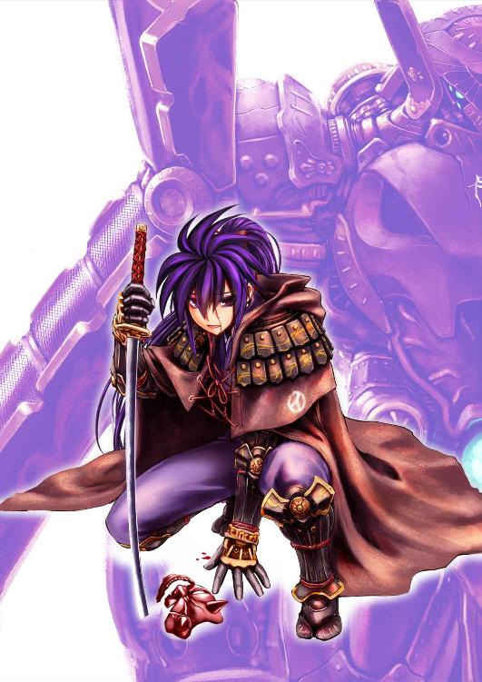

| 星魔の砦 神野オキナ・ベストシリーズ 星魔の砦 (楽ノベ文庫) | |
| 神野 オキナ | |
| (2016) | |
本書はリフロー形式で制作されています。本文は文字の書体と大きさを変えることが出来ますので、お好みの設定で読書をお楽しみください。

☆
嵐の海に、船団はあった。
数は数千隻―この時代でなくても大船団といえた。
もちろん木造で、船の種類は軍船、貿易船など様々だ
本来、外海に出るようには作られていない、帆の四角い一本マストの船も多く見られる。
だがこれでも本来の半分しかいない。
残りは未だ港にいるか、あるいは嵐のために沈んでいた。
乗り込む人々にはすべて特徴があった。
髪の毛も、目も黒い。肌は彼らの住む土地から離れれば「黄色い」と表現されるであろう。
そしてみな独特の髪型をしていた。
男は長く伸ばした髪を後ろでまとめ、あるいは頭の真ん中を剃り、左右の髪を紐や布で縛ってまとめてその剃った上に載せている。
女は、適当に襟足のあたりで縛っている者もあれば、丁寧かつ複雑な形のまとめている者もある。
それぞれの顔立ちや個性に合った髪型をしているが、それらはすべていくつかの単純なバリエーションにしかすぎない。
帆を操る者も、櫓を操る者も、当然「荷」として甲板にある者も、等しく彼らの出てきた港の方を見つめていた。
老若男女を問わず、別れの悲しみ以上の感覚が、その目にはある。
憎悪と絶望と不安。とりわけ最初の感情が大きい。
港のさらに彼方、天が裂けるような爆裂音とともに巨大な山のシルエットが露わになった。
「おお......御山じゃ......」
とある老人が泣きながら両手を合わせた。その涙も激しく吹きつける雨風にすぐ交わって判然としなくなる。
今度は山以外のものもシルエットとして浮かぶ。
山の上に。
それは巨大な輪だった。
地上に降りれば、山をすっぽり覆うほどに巨大なそれは、注意してみれば、じりじりと回転しているようだった。
「おのれ、星魔め・・・・」
老人の隣、体中に包帯を巻き、片腕を失った青年が呻く。
彼の前には色がはげ落ち、ところどころに傷の目立つ鞘に収まった片刃の剣が置かれている。青年はこの国の戦士の階級の出だった。
リングの回転は止まらず、やがて内側から稲妻がほとばしった。
かなり離れたこの海からでもその太さがわかるほどの巨大なものだった。
呼応するように、大地から空へと稲妻がほとばしる。だが、こちらはリングのものよりも数が多いだけで、圧倒的に細い。
「おお、王帝主さまたちだ！」
だが、人々の中に喜色が沸く。敵へ、少なくとも一撃を与えている味方の姿は、それだけで絶望に塗りこまれた人々の心を明るくする作用があった。
まして、その攻撃をしている味方が、彼らの国の王――正確には王以上の存在――であればなおさらといえる。
もっとも、数こそ少ないが、その情景と、それに喜ぶ人々へ痛々しい、あるいは軽蔑に近い視線を送る者たちもいる。
彼らの多くは戦士階級であり、また魔導の技を行う、あるいは研究する学者階級の人々であった。まだ年若い者の中には怒りを表す者も多く、反対に年輩の者は涙を流していた。嵐であるため、その涙はすぐに目立たなくなったが。
やがて、数度の、大地と空とで繰り広げられる稲妻の応酬は、リング側からの特大の稲妻で幕を閉じた。
山が砕けたのだ。
その振動と衝撃波は海に押し寄せ、嵐以上の惨劇をもたらした。
ただでさえ定員数を超える人員を収容していたいくつかの船が転覆し、あるいは衝撃波によって引き裂かれる。
空が真っ赤に染まり、上空に重くたちこめていた嵐の雲はかき消えた。
あわてて魔法障壁を張り巡らせて何とか生き残った船の上からも、少なくない人数が波にさらわれて消えた。
悲鳴と怒号が波と風にかき消される。
そして人々は見た。
最後の報復が行われるのを。
山のあった方角から、巨大な稲妻の龍が立ち上がるのを。
龍の頭の直径は山ほどもあった。
「ああ、ああ......」
誰かの呻くような鳴き声が聞こえた。
それは、伝説にのみ語られる秘術――大魔法の一種――であったからだ。それもただの秘術ではない。
国、すなわち正確にはその国の置かれた大地と、その大地の上に息づくすべての生物――大は古龍から、小は草木、地中の微細な生物にいたるまで――の命すべてと引き替えに成される秘術だった。
人々は見た。
巨大な稲妻の龍を生み出しながら、文字通り大地が粉々に引き裂かれ、そして消えていくのを。
その代償はあった。
天空を覆わんばかりだった巨大なリングは龍とぶつかることで粉砕されたのである。
「うぉおおおおおおおおおおおっ！」
魔法障壁に守られた船の上で、先ほどの若い戦士が泣き崩れた。
それを合図にしたかのように、他の人々も膝を屈し、あるいはその場に泣き崩れる。
彼らはすべて失ったのだ。
故郷を。
やがて、彼らは悲しみの底から立ち上がる。彼らは生きねばならなかった。
何よりも己のため、そして......復讐のため。
それに後々、「この世界のため」という要素が加わるが、それは後付けの耳障りのよい常套句にすぎないと、彼らは全員理解していた。
やがて数年間の苦しい航海と放浪の後、とある大陸に流れ着いた彼らは、その日の光景を子々孫々まで伝え、ある目的に従って生きる、奇怪きわまりない種族と化す。
失われた彼らの国は「倭の国」と呼ばれ、彼らは「倭の民」と呼ばれた。そして、彼らの国を救えなかった戦士階級の者たちは、その戦いっぷりの恐ろしさから、畏敬の念を持って「騎士」に匹敵する特別の称号で呼ばれるようになった。――「サムライ」と。
そして、時は流れる――――――――――――――
☆
ライゼラ・ラ・アルスコートは酒精で火照った頬に、冷たい夜風を受けたくなって宴席を抜け出した。
夜の月が、砦を巨大な影絵にしていた。
だが、いつもと違い、張り詰めた緊張感はない
宴席が開かれている大広間のある本陣の建物の、今まで滅多に使われることのなかったバルコニーへ出る。
幸い、もう兵たちは十分に野酒を飲み干していたし、彼女の直接の部下である騎士や、従者も歓喜の宴席で酔いつぶれる一歩手前まで飲んでいたから、彼女が抜け出すところを誰も注意しなかったし、咎めもしなかった
大陸の中央部のやや東の端、新進気鋭のディセファラス帝国と、古くから外交と軍事に長けているので有名なハリ王国に左右を挟まれた位置にある。風光明媚なノルフェリア。そのさらに北端、地図の上では、ほんの指呼の間に両国をにらむ位置にあるリヴァーゲンの砦は、勝利に浮かれていたのである。
一瞬、宴席のざわめきに背を向けるようにして、武器庫で自分たちの仕事をしている砲兵隊を見かけたが、祝いの日であることも手伝って、宴に背を向けた態度からくる不快感よりも「よくやるな」としかライゼラは思わなかった。
魔法や、導甲冑と違い、大砲や鉄砲は、才能がなくても誰にでも（それこそ食人鬼でさえ）扱えるが、脆弱な部分の多い兵器で、細々として整備が不可欠なのだと、ライゼラは聞かされていた。
彼女自身は「おもちゃ」だと思っている――この時代、騎士と呼ばれる人間なら、誰もがそう思うように。
何しろ魔法は、個人の能力によって街ひとつを吹き飛ばすレベルのものを何度でも使えるようになるが、大砲は色々と手順を踏んで、最後に一発だけ。それも玉薬や弾薬がなくなればおしまい。さらにこまめに整備して磨き、汚れを取らねば、いざという時に動かない。
また、移動も厄介だ。何しろ、一門の大砲を移動させるには最低でも馬が一頭要る。
一種の生物である導甲冑なら、手入れをしなくても一ヵ月は問題ないし、移動は着て歩けばいいだけのこと。その間に敵を蹴散らすことができる。
砲兵隊の隊長である、森人と山人の血を引く少女が、ライゼラに気づいて小さく敬礼した。
<まあ、構わんだろうな。祝う人間の数に不足はないはずだし>
夜風に肩まである金色の髪をなびかせ、望んでいた冷たい風を楽しみながらライゼラは、砲兵隊たちと同様、宴を抜けている自分に言い訳をする。
＜何しろ姫様はちゃんと席におられるわけだし＞
にこにこと、いつもと変わらぬ笑顔で宴席を見つめつつ、杯をいっかな干そうとはしない彼女の上官である第三王女の姿を思い出し、くすりとライゼラは笑う。
＜もう少ししたら、姫様もここへ連れてこよう＞
無意識のうちに、ライゼラは頬の傷を撫でた。
指一本分の幅と長さを持つそれは、この戦の初期に、彼女が受けた最初の傷だった。
魔術を使えば跡形もなく消せるが、ライゼラはあえてそれを消さなかった。
戦が終わるまでは女に戻るまい。そう決意し、傷に願を掛けたのである。
＜ようやく消せるな、傷も＞
この五年間、押し隠し、押し殺してきた「少女」の部分が彼女を微笑ませるが、同時に一抹の寂しさもある。
＜これで、ただの女に戻るのだな、私は＞
さらに指は、単衣の上から、ふくよかな胸の上、左右の鎖骨の真ん中に触れる。
金属の感触が指から伝わってきた。騎士の必需品、制御玉と、その台座の感触だった。
＜この感触ともお別れになるんだな＞
それは導甲冑をつけて馬を走らせ、男たちを指図し、共に戦い、笑い、泣き、苦労を震えながら堪え忍んだ、辛いが、女としては自由で「生き甲斐」のある時間が終わることを意味していた。
アルスコートの家は、彼女だけが生き残った。父も、ふたりの兄も、この数年の間に世を去っている。父は寿命で、兄のひとりは戦死、ひとりは行方不明。
無理もない話だった。何しろ六年近く続いてきた内乱だったのである。
☆
内乱の原因そのものは簡単だった。王の弟が、兄よりも自分の方が優秀だと思い上がって兵を挙げたのである。本来なら（どちらが勝者となるのかは横に置いておとくとして）、あっという間に片がつく「家庭問題」の一種だった。
長期化してしまった理由は、ノルフェリアと隣り合うふたつの大国が、それぞれの側へ兵を貸し出そうとしたことに始まる。
弟はこれを素直に喜んだが、兄である王はこれを退けた。
無償の善意などというものは、この世に存在しない。神でさえ、この世界では「信仰」という報酬なしでは奇跡を示そうとしないのだ。
内乱が終わればどちらの国も債務を取り立てにくる。それがいかなる形なのかは不明だが、大国が小国を軽んじ、無茶な「要請」を行うのはわかりやすい話だ。
だから兄王はこれを退けたのである。結果、弟の軍は兄の軍の三倍の人員を保有することとなった。
普通ならば、この時点で兵力を持っている者が勝つ、はずだった。
そうならなかったのは、弟が兄に力を貸そうと持ちかけた国にまで声をかけてしまったことにある。
こうすることで、戦乱が終わった後、どちらの国が先に彼から債務を取り立てるのか、ぶつけ合わせて時間を稼ごうと考えたのである。
ある時点まで、それは狙い通りにいった。弟王は巧みに両国との関係を秘匿したためである。
だが、戦が進めばそんな余裕がなくなる。
ある日、ついに両国は自分たちが小国の小僧に弄ばれようとしていると気づいた。
大国同士で、どういう話し合いがなされたのかは不明であるが、その結果は凄惨な形をとった。
内乱が始まって二ヵ月、兄の軍勢を蹴散らし、王都へ進軍を始めた弟王は、汗が止まらなくなっていることに気がついた。
一週間後、身体中の体毛が抜け落ちはじめた。
二週間後には物忘れが激しくなり、三週間後には言語を操ることができなくなってしまった。
一ヵ月が経過した頃には、仮の玉座に座っているのは、人の形をした透明単細胞生物と変わらない物体と化していた。
弟王の家臣団は動揺したが、どうにもならない。もう船は動きはじめていて、船長が死んだぐらいでは引き返せないとことまで来ていたのである。
弟王は兄王のはなった魔導師によって肉体が腐る呪いをかけられた、とされた。
かわって、両大国から、軍師と、それぞれに委任状を持ったふたりの「跡継ぎ」が派遣され、覇を競うことになった。
兄王の側がこれに勝てたのは、ひとつの理由しかない。
王都を落ち延び、転戦を繰り返した。よく攻め、よく守り、同時に、裏から手を回してそれぞれの大国の内側にくすぶる火種に油を注いだのである。
それは王位の継承問題であったり、経済的な問題であったりした。
結果、大国は内側の火事を消すのに躍起となり、ふたりの跡継ぎとその家臣団が滅ぼされた時には、増援を送るよりも、この王を認めざるを得ない状況にまで追い込まれていたのである。
☆
勝利の宴席で、兵たちは、弟王を倒したからではなく、強大な外敵を追い払ったということで喜んでいるのだった。
至極当然といえた。他の国ではこの出来事を「奇跡」と呼ぶところさえあるという。
さすがにそれは言い過ぎだろうと思うが、ひいき目でなくてもかなりの快挙であることに間違いはないと、ライゼラは考えていた。
＜ともあれ、これで終わりだ＞
一両日中には王都に戻り、正式に女伯爵として家を継ぐ準備をせねばならない。
＜むしろ、これからが大変かもしれないな・・・何しろ、私は今のところ女ではないのだから＞
女の部分を切り捨てなければ、「女騎士」になれるはずもないから、これは当然のことだが、淑女らしい礼儀作法や言葉遣いという事柄が、彼女の頭の中から完全に消え去って久しい。
女伯爵という称号にふさわしくなるための再教育には時間がかかりそうだった。
問題はそればかりではなかった。
一番の問題は彼女がもう十八歳を越えようとしているということだ。嫁にいくにせよ婿をとるにせよ、かなり薹が立っている。
まして、この戦乱で彼女の地位に見合うだけの男子の数は減っていた。ことによると、養子を貰う方が賢明かもしれない。
＜せめて・・・・明日ぐらいは導甲冑を磨いてやるか。＞
そんなことを考えた矢先、不意に空気が重く湿ってきたことにライゼラは気づいた。
「雨か・・・・・」
戦争において、雨は敵の襲来に匹敵するほどの厄介事だった。道はぬかるみ身体は冷え、将兵の士気はじりじりと下がる。行軍の際には足を取られ、激しい雨ともなれば視界が制限される。
だが、もうしばらく戦はない。
久々に、ライゼラは子供の頃のように手を伸ばし、雨を手のひらに受けようとした。
門のあたりで騒ぎが起こったのはその時だ。
門番の声が荒々しく聞こえる。
「？」
まさか弟王の軍の残党でも出たのだろうか、と訝しみながら、ライゼラは門へと向かった。彼女が移動する間に、雨足はどんどん厳しさを増していく。
☆
門に近づくと、東南部なまりの声が聞こえてきた。
「とにかく出直してこい！今日はめでたい祝いの席だ、お前たちのような汚らしい連中が来ては迷惑だ！」
門番はいささか酔っていた。気を利かせた仲間が、どうやらお流れを持ってきたらしく、それで一杯やっていたらしい。だが、門番の声に、来訪者は答えない。
来訪者はふたりいた。
長身の若者と、背の低い――まるで子供のような体格の人物と。
背後には、彼らが乗ってきたらしい馬車があった。
見覚えのある馬車だ。
「とにかく去れ！」
明らかに門番は、一杯楽しんでるところを邪魔されて、意地が悪くなっているらしい。
「何があった？」
ライゼラが助け舟を出したのは、純粋に彼女の育ちの良さが、この雨の中の来訪者に同情として働いたからだが、すぐにそれは修正された。
むしろ今危ないのは門番の命だった。
門のかがり火に映し出された来訪者ふたりは、異形の風体をしていたのである。
ここまでは革のマントを羽織っていたらしいが、今は前の部分を開け広げて、中の衣装が見えるようにしていた。
足下こそふくらはぎまでの短靴だが、妙に鋭角なラインで構成された袖無しの上着と服、腰に巻かれた帯は南方のものよりも幅が狭く、薄いが丈夫な帯で作られ、そこには優美なカーブを描く、片刃の剣が鞘ごと納められている。
そして長くのばした黒髪を、背の高い方は首の後ろで、低い方は頭の高い位置で細布で巻いてまとめていた。
黒髪と武装で、すぐに彼らの正体が知れた。
「サムライ・・・」
遠い昔、遥か東の海上にあった祖国を滅ぼされ、この大陸に流れ着いた連中の中でも特に有名な、戦士階級の名前をライゼラは呆然と口にした。
「この砦の騎士か？」
背の低い方が口を開いた。その顔は口を大きく開けた東洋の悪鬼を意匠とした仮面に覆われているが、声は幼さを残していた。
「この門番をどうにかしてくれ」
その言葉が女騎士の脳に届くよりも前に、背の高い方が仮面の少年を制した。
「申し訳ない。この者はまだ未熟ゆえ、口の利き方を知りませぬ――。この砦の騎士殿であろうか？我々はご覧の通りのサムライでござる。」
背の高い方は意外と若かった。ライゼラよりも二、三歳年上というところであろうか。
「何故ここへ来られた」
物腰の柔らかさに、ライゼラはとりあえず部下に対する少年の非礼を頭から追い出すことにした。
まだ戦をやっていると勘違いして、ここに来たのだろうかと思う。
が、若いサムライの言葉は、それを裏切った。
「我々が来るべき状況はふたつ。ひとつは戦、もうひとつは星魔――今回は星魔の件でこちらに参った次第」
「星魔・・・・？」
その時雷が遠くで鳴り響き、雨が煙のように周囲を包み込んだ。
立ち尽くすふたりのサムライの姿は、その時のライゼラにひどく不吉なものに映った。
☆
招かれざる客を砦の入り口に控えさせ、ライゼラは急いで砦の王である第三王女の許へ向かった
酔いはもう、醒めている。
恐怖に近い、不吉な予感というやつが、額のあたりで渦を巻いていた。
祝賀の喧騒の中、自分の革靴が立てる音が、やけに寒々と聞こえる。死神にでもなった気分だった。
＜不吉にもほどがある・・・・・よりによってサムライなどとは＞
第三王女に知らせるだけでは駄目だ。今、宴会場と化した大広間で騒いでいる兵卒や、彼女の部下であるほかの騎士たちにも、すぐに正気に戻ってもらわねばならない。
だから、わざと大きな音を立てて、大広間への扉を両手で思いっきり押し開けた。
普通の女なら腕が折れてしまいそうな黒檀の重い扉だったが、導甲冑を駆る彼女には何ほどのものでもない。むしろ粗末な板切れのように扉は空気を巻き上げながら開き、壁にぶつかって止まった。
どおん、という派手な音。
何事かと全員が注目する中で、ライゼラは眉ひとつ動かさずに、大声を張り上げた。
「サムライ二名、当砦に推参。用件は『グルムハイド聖協約』にかかわるもの！」
数瞬の間があった。
誰もが、その言葉の意味するところを知りながら、その言葉自体を、現実のものとして聞いたことがないためである。
これに比べれば、まだ「敵襲」という言葉のほうが現実味があっただろう。
「なんだと？」
最古参の参謀である、ダヌート・ゾンノート伯爵がいち早く立ち上がった。
戦で鍛えた猛者らしく、剃りあげた頭に厳つい顔とほぼ真四角な身体つきの大男である。
歩兵を指揮させれば天下一品だが、意外にも沈思黙考型のところがある。この戦乱においてその才能は遺憾なく発揮され、この砦を守る原動力となった。
「サムライ」という単語を聞いて、その荒っぽく刻んだような顔がわずかに緩んだのは、まだその顔が「貴公子」と呼ばれるに相応しかった青年の頃、一度サムライの傭兵とともに戦った記憶があるからだろうか。
「・・・星魔か」
その隣で、野酒の入ったグラスを揺らしていたのは、魔導官のサラファノ・ルカイル。魔導官にしては珍しく、腰までの長い髪に、豊満な肢体をおしげもなく晒け出すようなきわどい衣装を身にまとっているのは、別に戦勝祝いの宴だからではない。
「厄介なことになりましたな、姫」
サラファノが向けた視線の先には、まるで絵物語に出てくる「お姫様」そのものの少女――と呼ぶにはいささか歳がいっている――が小首を傾げていた。
流れるような金髪はゆるやかに波打ち、額の略冠にはめこまれているのは、第三王女を表す金琥珀。
ややたれ目がちの大きな目は、いつも微笑みを浮かべていて、兵ならずとも「守ってやろう」と思わずにはいられない――それがノルフェリアの第三王女、レマリエだった。
「星魔・・・・ですの？」
きょとんとした顔でレマリエは言った。
「本当に？」
いささか間の抜けた言葉ではあったが、誰もそのことを咎めない。レマリエがそういうおっとりとしたところのある人物というせいもあるが、それ以上に、誰もが同じ疑問を抱いているからだった。
何しろこの大陸は広い。ましてノルフェリアは、つい最近まで内乱という泥臭い戦いをしていたばかりであった。
さらに建国以来――どころか、ここがまだ村々の寄り合い所帯だった頃から、「星魔」なるものが現れたことがなかったのである。
☆
星魔――星々がある一定の位置にくるときに現れる天空の魔物。
巨大なリング状の「門」をくぐって来襲する怪物たち。魔界のルールにさえ従わぬ造形と生態を持つ。
芋虫のような形態であったり、羽根を持つ痩せこけた死体のようであったりと、形は様々だが、共通して彼らは目鼻と言葉を持たず、心を持たず、ただひたすらに手近な生物を殺し、喰らう。それは、同族同士に見える妖魔たちでさえ例外ではない。
その性はひとことで言えば愚劣にして邪悪。
この世界で最初に彼らと接触したのは倭の国の人間たちだった。
長い長い戦いの末、彼らは勝ち、同時に負けた。
つまり、もっとも巨大な「門」とそこから現れる大星魔を倒したものの、それと引き替えに和の国は消え去り、残った倭の民は長い長いさすらいの果てにこの大陸へとたどり着いた。
それだけなら、ある民族に伝わっていたおとぎ話、として事は終わっていたかもしれない。だが、今から数百年前、この大陸にも星魔が現れた。
今のように無数の小国と、いくつかの大国に分かれる前、「大賢皇」と呼ばれたアスレイストス帝がひとつの国に統一していた時代のことである。
幸い、倭の国の場合と違い、そこに現れた「門」は小規模なものであったが、数が多かった。
アスレイストス帝もまた善戦し、彼の軍隊もまたよく戦ったが、ややもすれば、その時点でこの大陸は消滅の運命を余儀なくされていたかもしれない。
そこへ助っ人が現れた。
倭の国の戦士階級――サムライの一団である。
後の世にいう「グルムハイドの赤空戦争」において、ほぼ消滅しかけた帝軍は、彼らによって救われた。
流れ着いた倭の民は、星魔と再び巡り会う可能性を考え、自らの民族そのものを狂気とでもいうべき熱意で特殊な戦闘集団に作り替えてしまっていたのである。
サムライを主力兵器兼攻撃機関として、生きている倭の民すべてが、それを維持し、運営するために生き、働き、子をなし、死ぬ。サムライは傭兵として戦い、戦闘能力を最低限維持しながら、星魔が現れればこれを殲滅する。
制度の維持の問題は、サムライの側にはなかった。かつて厳密に区分されていた身分制度は彼らの社会の中では消滅しており、商人の子供だろうと農奴の子であろうと・・そして驚いたことにこの大陸の人間であろうと、能力さえあればサムライになれる（あるいは受け入れる）制度が確立していた。
恐ろしいほど傲慢で、恐ろしいほど熱狂的で、恐ろしいほど純粋な「復讐装置」としての戦闘民族が誕生――どころか、すでに存在していたのである。
特に戦士階級であるサムライは、当時ほとんどの魔導師はもちろん、大陸の戦士や傭兵でさえ恐れて――いや思いつきさえしなかった「魔導の人体応用」を積極的に行っていた。その成果のひとつが導甲冑として後の世に結実することになる。
ともあれ、この功績でもって彼らはアストレイストス帝をはじめとした森人、山人たちのすべての長、そしてこの大陸にいる全ての神から（驚くべきことにその神の中にはあの淫虐の神まで名をつらねていた）、ある協約を取りつけた。
つまり、こと星魔に関する限り、すべての国家、種族、神殿はサムライに全面協力をする。
これが世にいう「グルムハイド聖協約」、あるいは「聖協約」とのみ呼ばれる約束事であった。
だから、門前にサムライが現れた時、その門の中にいる人間は緊張する。
彼らの出現は二種類の意味しか持たない。
つまり、強力な援軍か、それとも、とてつもない凶事の先触れか。
☆
「とりあえず、その者たちに会ってみましょう」
静かに王女はうなずいた。
王女の養育係で、実質上の砦の副司令官であるところのロル・ダウスト伯爵が手早く宴の終わりを宣言し、係りの者たちが大慌てでテーブルを片付け始める。
大広間は今までとは別の喧騒に満ちた。
明るい喧騒ではない。ようやく終わった苦難の次に、また新たな苦難が現れたという、非常に徒労感に満ちたものだった。
舌打ちせんばかりの視線が、狂報をもらたしたライゼラに向けられる。
＜勝手なものだ＞
いささかむっとした気分で、ライゼラは大広間に背を向けた。
彼らの気持ちもわかる。ようやく亡国の危機を乗り越え、勝利に喜び、あとはその報酬――ささやかな、あるいは夢物語もかくやという都合のいいものも含めて――を受け取る。楽しくもうれしい瞬間を夢見ていたのが、一気にまた戦場に引き戻される。しかも訳のわからない「星魔」とやらの戦いだ。これには報奨も何もでない。
何しろすべての神とエルフとドワーフと、ヒトの最初の王が決めた「義務」なのだから。
神官と神官戦士たちがいれば話は変わっていたのかもしれないが、残念ながら彼らは数日前に砦を離れ、王都に向かっている。呼んでも戻ってこられる距離ではない。
千五百名の兵士と、百名の騎士、十数人の魔導官。そして王女。
これだけで果たして、かつての大賢帝でさえ敗れかけたという相手に対抗できるのか。
＜――！＞
そこまで考えたところで、ようやくライゼラは事の重大さに気がついた。
そうだ、王女殿下。
「くそ・・・不敬もいいところだ」
己の思考の失態に鋭く舌打ちする。もしも「星魔」と戦うことになったなら、一番最初に逃がさねばならないのはレマリエ王女だ。
仮にも王族を、通常の戦争ならともかく「義務」の一環で死なせることはできない。
となれば、それにも人員を割かねばならない。
まさか王都に、たった数名の護衛だけで返すわけにはいかない。王女の面子に泥を塗ることになるし、まだ国内は不安定で、弟王の残党や、例の二大国の密偵が虎視眈眈と再びの戦乱を望んで待ち構えている可能性もある。
＜最低でも騎士は半分、兵員は五百を割かねばならないな＞
ええい、くそ、どうしてこうなるのだ。
ほんの少し前まで、文字通りの勝利の美酒に酔っていただけに、ライゼラの機嫌はますます悪くなっていった。
いっそ、あの役にたたない大砲とやらで、門で待っているサムライふたりを吹き飛ばさせようかとさえ考える。
だが、それで問題が消えてなくなるわけではないのだ。
＜わかっている、わかっているのだ！＞
忌々しげに頭を振りながら、ライゼラは自室への道を急いだ。
無礼講の祝いの席はともかく、王女への正式な謁見に、まさか導甲冑用の肌着と、その上から着用した短衣で参加するわけにはいかない。女騎士として、それなりの恰好をする必要性があった。
☆
とりあえず、馬車を置いて、ふたりのサムライはこの砦の中では大広間につぐ面積をもつ閲兵の間へと通されていた。
雨は小降りになっていた。
石造りの、屋根のある広場を思わせる造りの部屋のそこここには、かがり火がいくつも焚かれて、黄色い明かりで周囲を照らす中、ふたりの革のマントからは水が滴り落ち、その周囲を黒々と円形に染めている。
「遅い」
しばらくして、仮面をつけた少年のサムライがつぶやいた。
「まあ、無理もないね」
青年のほうが軽く応じる。
「どうやら戦勝祝いの最中だったらしい」
「では戦意は期待できないな」
決めつけるような言葉に、青年は薄く笑った。
「それはこちら次第だ......それに、報告どおりならまだ時間はある」
「もしも奴らが......腰抜けなら」
少年は吐き捨てるように続けた。
「せいぜい盾になってもらう。我らだけでやればいい......」
文字面だけでとらえれば冷酷非情、傲岸不遜な台詞だが、どうも言葉の響きを聞くと、当人も心の底からそう考えて言っているわけはでなく、むしろ自分自身に言い聞かせているほうが強いようだ。
青年は「やれやれ」とやんちゃな弟を見るような目で笑みを深めただけで、何も言い返さなかった。
「そう先走るな。我々だけで殲滅できるとは限らないのだぞ」
「.........」
少年は腕を組み、無言を返した。
青年のサムライは何か言いかけ、すぐに人の気配に気づいた。
「さ、そろそろ来るぞ」
「......う、うん」
明らかに少年の身体に緊張が走った。青年は「やれやれ」という顔で、一瞬、天井を仰ぐ。
果たして、しばらく後に広間に続く扉が開いた。
先触れのように兵士たちが整然と並び、さらにその後に彼らを直接束ねる部隊長たちが続き、その上にいる大隊長、師団長、彼らとは別に戦う騎士隊長、騎士団長らが続く。
一瞬、青年の目が興味深げに細められたのは、先ほど門に出てきた少女が、打って変わってきらびやかな衣装をまとい、騎士団長の位置に立ったのを認めたからだった。
さらに砦の首脳陣が並ぶ。
わずかな混乱とも呼べない混乱の後、典雅にはほど遠く、兵を叱咤する方が相応しい胴間声が、最後にして最高責任者の入室を告げる。
静々と、王家の人間にしては質素な衣装をまとった女性が入場し、部屋の奥にある座に着くと、ふたりのサムライを除くすべての人間が腰に下げた剣を抜いて、眼前に捧げる。
王女が軽く手をあげて座るように指図すると、ようやく全員がそれぞれの席に着き、あるいは来客のほうへと向き直る。
「遠路、ご苦労でした。誇り高き東洋の戦士よ」
王女は鷹揚な微笑みを見せた。
「失礼いたします、異国の姫君」
青年が軽く腰を折った。彼らサムライは、その国の国王以外、何者に対しても臣下の礼を取らなくてもよいことになっている。例外はただひとつ、戦死した人物の納まった棺のみだ。
だが、それを知らない戦士たちの中にはあからさまな驚きや、軽い怒りを示すものが多かった。
もっともサムライふたりはそのすべてを無視しているが。
「星魔にかかわることでこちらに来たと伺いましたが、それは事実ですか」
王女は初対面の礼を省き、いきなり核心へと話を振った。
青年の口元に、心地よいものを見た笑みが浮かぶ。
普通、サムライが星魔の件で現れた場合、王族でさえ取り乱し、最初の謁見ではあれやこれやとつまらない世間話をしようとする。
それはおそらく、一種の逃避行動であり、その間に心構えをつけようという部分もあるのだが、サムライにとって星魔との戦いは一刻を争うものであり、苛立つものなのだった。
この王女はそれを省いた。
「はい殿下。その通りです」
「いつ、始まりまりますか」
星魔との戦いのことだった。サムライが現れた以上、それが不可避であると王女は理解しているらしい。
「はい殿下。早ければあと七日、遅くとも一ヶ月以内には。ここはしばらく戦乱が続いておりましたから、使用された魔法の影響が強すぎまして、我らにも判然としないのです」
王女は静かにうなずいた。それは、当然の状況だったからである。
特定の地域で戦争が起こり、大規模な攻撃用の通常魔法や神官魔法が使われると、その影響で捜索や探知系の、非攻撃系の魔法が使いづらくなる。魔法が便利に使われるこの世界ならではの弊害だった。
「ゆえに我らが物見に来た次第でして」
「では当面、我々はどういう協力をすればよいのですか？」
「人をお貸しいただきたい。とりあえずは数人で結構。私が偵察に行きます。その結果如何では、砦全体、あるいはお国の兵士すべてをお借りすることになるやもしれません」
「････････････」
王女の顔が曇った。彼女の脳裏には、異形の怪物に蹂躙され、殺されていく兵士たちの姿がありありと浮かんでいるのだ
「ですが」
青年は意外なことを口にした。
「本当に危ない状況の場合は、皆さんにこの砦を捨てていただきます」
「？」
「本当に危ない場合、我らふたりで命を賭して星魔を消滅させますので」
「･･････どういう意味ですか？」
「我々には切り札がございます―-いささかお耳に入れるのは不適切な技が」
声は不気味な気配を伴って部屋に満ちた。
身分の低いものは顔を見合わせ、高い者たちは視線のみを交差させた。
誰も、そのような話を知らない。そもそも、サムライというものを観たことがないのだった。
「生態転化爆発であるな」
それまで石像のように黙っていたダヌートの声には、叱責の響きがあった。
「ものの本で読んだことがある――人間の全てを一瞬にして魔法の炎に変換する、一度だけの、しかし、山をも消し飛ばす技であるとか」
刺すような目が、青年に向けられた。
いい気になるな若造、この国にもお前たちを知るものはあるのだ、と言いたげな目であった。もっとも、怒りはない。あくまでも「叱責」のレベルである
この初老の伯爵は、いまや遥かかなたの若き日、共に戦ったサムライたちを好もしい存在として覚えているのであった。
サムライの青年はその意味を取り違えなかった。すかさず頭をさげ、謝罪の意を示す。
「はい、その通りであります。我らふたりの技を重ねれば、この辺一帯を消滅させるのは難しい話ではありません」
水を打ったように、広間は静かになった。
このふたりは、自分たちが危険な魔法兵器であると、あっさり告白したのである。
ライゼラは、信じられないものを見る目で、ふたりを見つめた。
死ぬことを恐れない――それは騎士ならば誰もが叩き込まれる言葉だ。だがそれは、恐怖が時に手足の動きを緩慢にしてしまうからであり、無駄死にをさせないための方便だ。
つまり、誰もが「生き残る」ために存在する一種の極論であり、方便だ。
ところが、目の前の連中は、恐ろしいことに自分たちの死でさえも最初から織り込み済みで戦おうとしている。
ライゼラはこれまでの戦いで自分が勇敢だったと自負しているし、それは彼女の挙げた戦功をみてもわかる。誰も彼女を臆病者とか、無能とか呼ぶことはない。
だが、これは勇敢とかいう次元の話ではない。
＜狂ってる＞
ライゼラは冷たいものを背中に感じた。なぜ、騎士ではなく、サムライが最強の戦士と呼ばれるのか、騎士や兵士たちと分けて考えられるのか、理解した。
壮絶な怨念が、民族単位で心の奥底に敷き詰められているのだ。自分が死ぬことになっても相手を生かしておくことを是としない。むしろ、相手が無傷であるくらいなら、命と引き替えに一撃を、それも痛烈な一撃を喰らわせてやろうという狂気。
彼らが故郷を失って、すでに千年以上の時が流れているのに。
もっとも、この場にいる者の中で、そこまで理解している者は少ないだろう。が、ほとんどの人間がその狂気を感じ取り、不安な気持ちになっているのは間違いなかった。
＜これは･･････よほど気をつけねば、我々もまた、巻き添えになる＞
ライゼラは決意した。何が何でも、この狂人たちの手から自分たちの部下を、兵士を、砦を守ろうと。
拳を握り締めた。
＜国のためならともかく、訳のわからない他者の恨みで兵を死なせるなど、騎士の役割ではない。断じてないっ＞
眦を決したライゼラの顔は美しかったが、そのことに気づいた者は、砦の人間の中にはいなかった。
誰もがみな、これからの災厄を案じ、ため息をつかんばかりの表情でそれぞれの思考に没頭していたのである。
夜明けまでに雨は上がっていた。
☆
リヴァーゲンの砦は三角形の土地の底辺にあたる部分にあり、三方すべてを山脈に囲まれている。
うちふたつの山脈はかの大国の領土に通じ、それゆえにこの辺鄙な土地に砦は築かれた。本国にとっては幸いなことに、砦の背後もまた山脈であり、ここで食い止めることができれば、その間に援軍を送ることが可能な土地であった。
星魔の気配が現れたのは、その大国に通じる山脈のひとつ、その麓近く、ということになっていた。
季節は夏の手前、もはや花が咲き乱れこそはしていないが、日々緑の色は春よりも遥かに濃くなり、自然は命の謳歌を待ち望んでいるようにも思える。
その中を人馬が行く。
数は騎乗の者が十名、徒歩の者が五十人ほどの小部隊だ。
三里ごとに先端に鉄水晶をはめ込んだ杭を打ち込みながらの移動である。
一昨日の雨はとっくに乾き、泥濘はなかったが、人と馬の足取りは重い。
士気は上がっていない。
無理もない話だった。
本来なら、そこそこの緊張は維持せねばならないものの、ある程度の「緩み」を甘受できるはずだった砦の人間は、自分たちだけが悪い籤運の下、新たな戦闘に備えねばならない事実を突きつけられたのである。
サムライふたりが訪れて二日が経過し、ある程度のあきらめもついてきてはいるが、だからといって、即座に戦闘用の心理状態になれるわけでもない。
関係のない顔をしているのは、騎士や兵士の指揮官である部隊長たちだが、彼らとて不満を兵に見せるわけには行かないからであり、内心は同じような鬱陶しい思いであることは明らかだった。
例外はただひとり――いや、ふたり。
あの青年のサムライと、ライゼラだけである。
青年はもとよりこの厄災を持ち込んだ張本人であるから当然として、ライゼラは士気の云々よりも、一方的に不機嫌さをあらかさまにしていた。
「許せぬ、絶対に許せぬ」
うなるような声で、ライゼラは砦を出てから何度目かのつぶやきを漏らした。
「いや、申し訳ない」
青年のサムライ――名前はサウト・ツゲイといった――は何度目かの謝罪をした。
「あ、いや･･････そちらのせいではない」
時折噴出する自分の「子供」な部分に戸惑いながらも、ライゼラは青年の謝罪を受け入れた。本来ならそのまま謝罪が耳に入らぬフリをしてしまうのも手だが、この青年、サムライというイメージに相応しい引き締まった顔立ちだが、こういう時になると、自然に奇妙な愛嬌が滲みでる。計算ずくではないところがこの男の徳といえた。
だからライゼラとしても、愚痴をこぼしたことを素直に恥じることができる。
「ただ、あのイセンブラスとかいう奴にだけは、どうしても･･････」
口にして、それがいかにも彼女の嫌いな「女」口調になってしまうのが腹立たしい。
話は砦を出る数刻前にさかのぼる。
☆
「女は全員脱出させろ」
いきなり仮面の少年がそう言い出したのである。
この砦に女はいるが、数は多くない。
とりあえず、レマリエ王女と、そのお付きの侍女たちぐらいのものだ――ということで話を続けていたところ、「では女騎士に引率していただく」と決めつけた。
女を砦から逃がすのは、戦闘で役に立たないからである。それを引率せよとはどういうことか。そもそも私は王女陛下の麾下であり、お前の部下ではない、とつい声を荒げてしまったライゼラへ、少年は取りつくしまもなく言い切った。
「勘違いするな。こと星魔に関する戦いに限り、我々は国王陛下と同列の立場にある」
そうだった。そのことを思い出し、顔を赤らめるライゼラに、少年サムライは追い打ちをかけた。
「女の兵隊や戦士はともかく、女の騎士は気位だけが高くて役に立たないというのは、やはり本当なのか？」
一呼吸の間があったのは、あまりの無礼な言葉を、ライゼラの脳が理解するのに時間がかかったためだ。
大騒ぎになった。
色々なことが同時に起こったが、要約するとライゼラが剣を抜こうとし、周囲の者がかろうじてそれを押しとどめた。もしその場に他の騎士たちがいなければ、これだけでは要約できないような事態が発生したに違いない。
騒ぎの中、いつの間にか少年は姿をけし、サウトだけが平謝りに謝った。
彼の人徳がなければ、この時点で同士討ちが始まっていたかもしれない。
冷静になってみれば、「無礼な子供」が喚いているだけだ、と男たちは思うようになったが、ライゼラとしては収まらない。
むしろ時間がたつにつれ、湯が煮立つようにますます激しく思い出されてくるのだ。
まず自分自身、そしてとりわけあの無礼な仮面のサムライに、
「ええい、くそっ」
今また口をついて罵り言葉が出てきそうで、羞恥の心と一緒にライゼラは小さく吐き捨てた。
部下たちは肩をすくめ、サウトはすまなさそうな顔をしてうなだれる。
兵士たちはこっそりと笑いあった。
☆
「ひどく無礼なサムライの子供」の話は、その日の朝には、砦全体に広まっており、たったひとり残って、砦を見て回る少年の姿はあちこちで注目された。
無論、温かい視線であろうはずはない。少年――イセンブラスが恐ろしげな鬼の仮面をかぶっていることも、視線の温度をさげることを助けた。
だが、少年は冷たい視線をものともせず、小憎らしいほどの平然とした態度で、誰の案内も乞わずに砦の中を歩き回った。
迷惑そうな視線も向けられるが、何の反応もしない。
あからさまに反抗の視線を向ける者はいたが、さすがにサムライの恐ろしさは、この国にもおぼろげながら伝わっている。
騎士たちには司令部から厳重な注意がなされていた。そうでなければ、ライゼラのことを持ち出してアレコレ騒動があったに違いない。
少年は丹念に――人によっては嫌がらせととられるほど慎重に、砦のあちこちを見て回った。
羊皮紙を紐で束ねたものを腰から下げ、時折、それに羽筆を走らせる。特に中央の広場、厨房、食堂、兵舎など、人が多いところで書きものの時間が長くなった。
そして、砦の防御壁の上に上ると、そこかしこで足を止めた。
「やはり、魔法防御に頼りすぎか」
羽筆を走らせるのを止め、小さくつぶやいた。
分厚い羊皮紙の帳面には、驚くほど精緻な絵が描き込まれている。
砦の形は八角形を成していた。井戸はそれぞれの角にひとつ、さらに中央にふたつ。籠城するのにまず必要なものは水だったが、ここは驚くほどそれに恵まれていた。
土地そのものは湿地帯ではなく、むしろ砂漠に近いものだから、ここが特別なのだろう。ひょっとしたら遥かな過去、大賢帝時代に土地そのものを魔法で改造しているのかもしれないが、それはどうでもいいことだった。
八角形の砦の周囲四里には、等間隔で、小さな鉄水晶が地面に深く突き刺した鉄の棒の上に設置されており、敵の侵入を察知できるようになっている。しかし、いくつかの水晶は破壊されており、警戒網は不完全のまま放置状態だ。これは内乱が終結したために補修が後回しにされていたのであろう。この手の警戒用の魔法具の故障は、砦の攻防戦では命取りになる。
八角形の角にはそれぞれ三つの「魔導官座」があり、遠隔の敵に対してはまずそこから大規模魔法が使用され、中の軍勢が打って出る、あるいは撤退するまでの時間と敵までの空間を確保するようになっていた。これもまた、よくある砦の構造である。
また、必要とされる技量が高すぎるために滅多にないが、いきなり瞬間転送で砦の中へ侵入されることを防ぐため、砦周辺の地面の中に石と金属板を用いた結界が張られているのは当然として、視界を確保するために物見の塔というよりも、「豪奢な鳥籠」と呼ぶに相応しい形と構造をした魔導官座には、魔力を充填しておくための巨大な鉄水晶が五つ設置されており、これは最低でも五回の大規模魔法が使えるという意味になる。
さすがにここはよく整備されており、それぞれの座に設置された結界と水晶五つ全てが魔力を充填されて輝いていた。
つまり、ここリヴァーゲンの砦は典型的な「小さいが手堅い」寄せ手にしてみれば厄介な砦なのである。
にもかかわらず、仮面から覗く少年の目には憂慮の色が濃い。
「これでは、防げない」
言い聞かせるように、つぶやいた。
「何が？」と問うように、イセンブラスの足元で可愛らしい鳴き声がした。
思わずびくっとなって、腰の刀に手をかけそうになったイセンブラスは、その声の主に気づいて、顔面で唯一露出した口元に苦笑いを浮かべる。
ふさふさした金色の毛で全身を覆われた大耳猫が、小首を傾げて、東洋の血と誇りを引き継ぐ戦士を見上げた。
丸っこい顔に、黒雪狐を思わせる不釣り合いなまでに大きな三角の耳がぱたぱたと振られると、ゴロゴロ喉を鳴らして少年のブーツに擦り寄ってきた。
大耳猫はこの少年を気に入ったようだった。
「.........」
小さく息を吐いて、少年は屈み込むと、手にした羽筆でちょろちょろ喉を撫でてやる。
魔法や毒物、さらには人の殺意に過敏に反応するため、本来王侯貴族が生きた「警報装置」として飼い始めたこの生き物は、大陸一危険な狂戦士にして、今、砦中から忌み嫌われている少年の膝に、太くて短い前足を伸ばして、乗りたがった。
少年は周囲を見回した。魔法で警戒されている砦の場合、臨戦態勢でもない限り、城壁に人がいるのは夜だけだ。
少年は口元に微笑みを浮かべて気配を和らげると、その場に腰を下ろした。
意外に細い脚を胡坐に組むと、大耳猫はその真ん中に身体を丸くした。
少年はそのまま、羊皮紙の帳面を広げてなおも羽筆を走らせ続けた。今度は絵ではなく、絵に対する書き込みらしかった。こちらも丹念である。
そろそろ春が夏へと変わる前触れとなっている心地よいそよ風が吹いていて、猫は目を閉じて寝息を立て始めた。
一刻ほど過ぎただろうか。不意に、大耳猫がぴん、と片耳を立てた。
「......ア、どこですの？」
風に乗って声が聞こえ、イセンブラスは声に弾かれたように立ち上がった。
先ほどまでの穏やかな雰囲気は消え、どこか冷笑的な気配が少年を包む。
「アルテイシア、アルテイシア？」
城壁の上に、金琥珀をはめ込んだ王冠が現れた。
地面に放り出された格好の大耳猫はそのまま声の主の元へと、とてとて歩を進めかけ、ふと少年のほうを振り返った。
注意していなければそれとわからないぐらい微妙な頭の動きで、イセンブラスは猫を促す。
猫は同意するようににゃあ、と一声鳴くと、主の元へ歩いていった。
「まぁ、こんなところにいたんですの？」
レマリエ王女の声に、大耳猫はイセンブラスの時とは違い、媚の色が強い鳴き声をあげた。
かなり大きな猫を抱っこした格好のまま、レマリエ王女はイセンブラスへ近づいた。
少年はそちらに向こうともせず、羽筆を走らせている。
「ありがとうございます。この子と遊んでくれたのですね」
王女の声にようやく「今気づいた」という顔でイセンブラスは振り向いた。
「ありがとうございます」
もう一度、レマリエは礼を言った。
「僕は......知らない。勝手に足元にじゃれてただけだ」
素っ気なくイセンブラスは返し、また羽筆を走らせる。
「何をなさってますの？」
「この砦を調べている」
これが通常の戦時なら、細作行為としてその場で首を飛ばされそうなことを、平然と仮面の少年は口にした。
「絵が、お上手ですのね」
横合いから覗き込むことさえしないのに、王女は断言した。
イセンブラスの口元が意地悪くゆがむ。
「見もしないのに、殿下はおわかりなのか？」
不敬、と罵られるどころか、手打ちにされても仕方のない傲慢不遜な言い方だったが、王女は気にした風もなく、「羽筆の動くリズムが、とても綺麗......そういう方の絵はお上手なのです」
とあっさり返す。
イセンブラスは口元の微笑を消してわずかの間、無言で王女を見ていたが、「それは失礼した」とだけ短く謝罪した。
「いいえ、そう思うのは当然ですわ」
にっこりとレマリエは微笑んだ。この時、彼女は二十二、ヒト族としてはまだまだ少女の面影を残す年齢ではあるが、どこかその笑みには母親のような慈愛の響きがある。
「では、殿下」
しばらく羽筆を走らせ、不意にイセンブラスはそれを止めた。
「他にも行くところがあるので失礼する」
踵を返した小さな影は、そのまま小走りといっていい速度で城壁の上から立ち去った。
しばらく猫を抱いたまま王女はその後ろ姿を見送っていたが、やがて、彼女を追って現れた白髪の老人の声に振り向いた。
「姫、ここにおられましたか」
老人は痩身長軀で、鋭く尖った顎、秀でた額と鋭い目つきは、軍服よりは学者のローブが似合いそうだった。
「ああ、爺。アルテイシアが見えないものだから、つい......」
「弱ったものですな。この大耳猫は。守役として飼われておるというのに」
苦笑したのはロル・ダウスト伯爵。レマリエ姫を赤ん坊の頃から育てた養育係である。
「こやつの母親は片時も姫様のそばを離れない優秀な猫でしたが、こいつと来たら......」
かつての母親の飼い主の愚痴に知らぬ顔で、大耳猫はあくびをする。
「......で、いかがでしたかな？」
「可哀そうな人ですわね......確かに、サウトさまのおっしゃる通りですわ」
レマリエはどこか悲しげに目を伏せた。
「人に好かれたい年頃でしょうに。『ひどく無理をしている』と、私も思います」
☆
サムライの青年とふたりっきりで話をしたのは昨日の夜のことだ。
勝利の美酒を奪われ、不本意極まりない「義務」の戦争へと投入される羽目になった砦の雰囲気は、酒が許される夜になるほどひどくなる。
レマリエがひとりっきりで外の空気を吸おうと外へ出たのは、そんな事情もあったからだった。
砦の中央、城で言えば本丸に位置する場所にある司令部の屋上へ上ると、先客がいた。
「失礼、ここは姫様の場所だったのですね」
かるく会釈して辞去しようとするサウトを、レマリエは呼び止めた。
前からサムライという存在には興味があったし、この青年の雰囲気が好もしいものであると思っていたからだ。
「あなたたちは、どこからいらっしゃったの？」
最初はそんな、他愛のない質問からだった。
「まぁ、あちこち、ですね。私とイセンブラスは曾祖父の代からサムライですから、あちこちの戦場を流転しながら生活しております......最近だと西の方ですね」
毒にも薬にもならない会話。それもこんな夜には相応しい、とレマリエは思っていた。
打ち解けていくうち、ふと王女は当初から引っかかっている、ある人物のことについて尋ねた。
「ところで、あの......失礼だとは思うのですけど、ご一緒の方......」
「ああ、イセンブラスのことですか」
「ええ、あの......どうして仮面を？やはり、何か事情が？」
「ああ」
まるで父親のような笑みを浮かべ、サウトはふと黙り込んだ。
その沈黙をレマリエは拒絶と受け取り、質問を打ち消そうとしたが、それよりも先にサウトが口を開いた。
「大怪我を負っているとか、人並みはずれて醜いとかいう意味ではないのですよ。何といえばいいのか......そう、決意と見栄、それが半分ずつです」
「？」
「あの子は、親を早くに亡くしていましてね。だから、はやく大人になりたいのです」
サウトは苦く笑う。
「難儀な話です。本来なら、親に甘えてしかるべき年齢ですが」
サムライにも「親に甘える」時期があるというのがレマリエには初耳だったが、続くサウトの言葉はもっと驚きだった。
「私もね、昔はそうでしたから............でも、そのために、随分と大事なものをね、なくしているんです。いや、味わってこなかったというべきかな？だから、何とかしてやりたいのですが、どうしてもやはり、我々の付き合いというのは戦士としての、という形になってしまいがちで」
穏やかに笑うサウトの表情の陰に、レマリエは早く何とかしてやりたい、という焦りと諦念が入り混じったものを見た。
そのおっとりした外見に反し、レマリエは人の心を掴むことに長けている。おそらく、内乱という過酷な状況がなければ開花しなかった才能であるが、それゆえに彼女はこの砦――何の二大国と山脈を隔てて隣り合っているという要衝を守り続けることができた。
彼女の善良なところは、その能力を人を操ることではなく、労ることにのみ使っていることだった。
「お優しいのですね」
だから、自然とこういう言葉を口に乗せて、人に反感を抱かせない。
サウトもその辺りを理解できる人間のようで、寂しげにうなずいた。
「いいえ、自己憐憫が形を変えているだけですよ。でも、何もしないよりはいいと思いまして」
そして、サウトは頭を下げた。
「イセンブラスは今お話ししたように急いで大人になろうとしております。故に無礼なことが多々あるかとは存じますが、姫様にはご寛容なお心をもって接してくださいませ」
「あなたは、彼とはどういうご関係ですか？」
静かなマリエの言葉に、初めてサウトは答えを躊躇した。
しばらくの沈黙の後、サウトは恥を語る者の口調でこう告げた。
「娘とは同じ師に剣を学びました。ですから兄弟子、弟弟子というところです。が、ひょっとしたら......彼は、私の息子になっていたかもしれない、それだけのことです」
そのまま顔を伏せた。
額面通り受け取るにはサウトは若く、言葉はあまりにも短すぎ、想像の幅を持たせすぎるものであったが、レマリエは、それが彼なりの「恥」の表れなのだろうと思った。
人には、たとえ神の御前でも話すことのできないことがあるのだ。他人にとってはどんなにつまらないことであろうとも、その当人にとって、それを口にするのなら死んだほうがまだまし――どころか、たとえ魂を永久に煉獄につながれようとも、と思うほどのことがある。
しばらくレマリエは無言で彼を見ていたが、小さなため息をひとつついた
「わかりました。私の力と心が及ぶ限り、彼に寛容に接することをお約束しましょう。しかし、私でもかばいきれない状況というものがあることだけは、お心に」
サウトの頭がますます下がった。
「はい、全てをご寛容にとは申し上げられません。道を踏み外し、幼さゆえの過ちを超え、殺されるほどの不徳をいたしたのなら、それはあ奴の罪。また姫様のお立場を損ねるようなことまでは私も望みませぬ」
☆
「しかし、厄介な頼みをお引き受けしましたな、姫」
老人はいささかの諧謔を含んだ目で王女を見た。
「仕方がありませんわ。あの頼みを引き受けねば、人ではありませんもの」
レマリエは平然としている。この老人がこういう憎まれ口を叩くのは毎度の話なのである。
<問題は......>
レマリエはふと思った。
<あのお方があの子の傍にいられなくなった時、誰が彼を最後まで庇うか、ですわね>
その状況を思うと、レマリエは胸が痛んだ。
おそらく少年は死ぬ。見殺しにされるか、それとも直接殺されるかはわからないが、あの剣呑な人当たりは、間違いなく人の反感を買う。力でねじ伏せれば恐怖に変わる。
恐怖は人を押さえつけるだけで、従わせはしない。
誰も従わない指揮官は、死ぬ。なぜなら、それが兵のためであるからだ。
レマリエは深いため息をついた。
王女として求められることは、時に個人の仁義を超えねばならないところにあり、自分がそこを超えてまでは好意を示せないことを、知り尽くしているのだった。
☆
そして、翌日の夕方、ライゼラとサウトの一行は目的地にたどり着いた。
☆
一行は、丘の上からそれを見た。
道すがら、「輪門」とはどれくらいの大きさか、とライゼラが問うと、サウトは「ふつうは山より小さいぐらいの直径でしょうか」と答えた。
確かにそのとおりだと、ライゼラは思った。
だが三つも浮かんでいれば山よりも大きく見える。
「これは......一体......」
ライゼラも含め、砦の兵たち、騎士たちは呆然とそれを見上げていた。
「輪門」とは文字通り、輪状になった巨大な金属の塊が内と外に二つ重なった物体である。
その表面は奇怪な凹凸に覆われ、二重に重なりながらそれぞれ内側は右、外側は左にと反対の方向へと動いている。
魔法でも空中に物を浮かせることはできる。だが、これほど巨大なものは不可能だし、これほど巨大な人工物体が、この頃大陸にはほとんどない。まして、ライゼラたちが見ているわけではなかった。
「しまった。三つもあるのか」
舌打ちせんばかりの顔でサウトがつぶやいた。彼だけが一行の中で動揺もせず、呆然ともしていない。星魔との戦いに慣れたサムライならではだった。
輪門の中は三つとも違っていた。
ひとつは輪門を通じて空が見えるだけだが、ひとつは白い膜のようなものが覆っていて、最後のひとつは――
真っ黒だった。一瞬、夜空だとライゼラは思ったが、星も、何もない。寒々とした空。
「しかも、全て進行状況が違っている。こいつは、かなり難儀な話だ」
「さ、サウト殿......」
ようやくライゼラが顔を空から地面に戻した。
「あれが......？」
「ええ、『星魔の門』です。ひとつは、もうすでに準備を終えている」
「お、終えている？」
「ええ、間もなく『侵略』が始まります。引き返しましょう」
そう言って、サウトが手綱を取った瞬間、中の真っ黒な輪門を指差して、兵のひとりが大声を上げた。
「な、何か降ってくる！」
「！」
思わず振り仰いだライゼラは見た。
真っ黒な空間から、無数の黒い雨のようなものが地面へ降り注いでくるのを。
「しまった！」
サウトの顔が青ざめた。
「急いで、皆さん、このまま砦へ戻ります、全速力で！」
サウトの声に、雪崩のような地響きが重なった。
☆
砦のほとんどの人間はひとり残されたサムライの少年を嫌ったが、唯一の例外があった。ようやく去年、ここへ配備された砲兵隊である。
不思議なことにイセンブラスは、彼らのことを高く評価していた。
「これからの戦は砲兵で決まる」とまで言い切った。
まだこの世界に大砲や銃というものが現れて、五年と経過していない。
主に魔導官の少ない、地方の砦の守備や治安維持に最適という名目で普及し始めていたが、やはりその連射性能の悪さと、新兵器ゆえの数々の装備品の必要性から、まともな兵器として注目する人間はほとんどいなかった。
それがこの砦に配備されたのは、武器商人たちの斡旋によるものである。とにかく新兵器を売りたい彼らは、試しに使って欲しいと二百門の砲とその装備品一切を送りつけた。それに加えて、とある物好きな商人の娘が有志を募った「砲兵隊」を扱いかねた王都の連中が、とりあえずとばかりにここへ配属させた。
数回の戦闘でそれなりの戦果を挙げたものの、それは魔導官や騎士、歩兵たちの挙げた戦果に比べればどうにも首をひねりたくなるようなものであったため、彼らはこの砦の中で未だに「冷や飯食い」的な立場に甘んじていた。
ちなみに、当時の騎士や傭兵たちの意見は「下賤の兵器」であり、「高価なおもちゃ」ぐらいのもので、はっきりと「無用の長物」と切り捨てる者も多かった。
ところが、イセンブラスは彼らにだけは賞賛の言葉を惜しまない。
「連射できないという欠点は戦術で補える。備品は本体が広まれば安くなるし、流通もしてくる。鉄の剣と同じだ。いいものはいずれ広まる」
あげく、城壁に砲のための部署を設けろと言い出した。
色をなしたのは魔導官たちである。これまで、魔導官は砦の防御の要として配され、遇されてきたのだ。その同じ場所へつい先年できたばかりの、それも一般市民の兵士と、煙と炎を上げる奇妙な道具を置くというのである。
矜持というものを無視しきった少年の命令に、魔導官たちの中には彼を呪詛しようとまで言い出す者も出てきたが、それは魔導官たちの長であるサラファノのひと声で立ち消えとなった。
「まあ、それも面白いんじゃないのかしら？」
豊満な肢体と過激な衣装に身を包み、王都の魔導官の中では、外見も中身もいかがわしい酒場の踊り子同様と陰口を叩かれながら、実戦においては勇猛果敢、そこいらの将軍さえも敵わないと言われるほどの指揮振りを発揮した彼女を、砦の魔導官たちは尊敬し、個人崇拝している者さえいた、
なぜ、この暴挙を容認したのか、様々な憶測が乱れ飛んだが、サラファノはそれ以上何も言わず、沈黙を守ったため、「きっとサムライの小僧が意地を押し通して失敗するのを見越しているに違いない」という方向で皆が勝手に納得した。
さすがは我らが魔導官長、深謀遠慮であることだなあ、と彼らは上官の評価をまたひとつ高くした。
彼らにはサラファノが発言する数刻前に、レマリエ王女が彼女の部屋に尋ねてきたことと、サラファノが時折面白そうな顔をして砲兵隊の訓練風景を見ていたことを結び付けて考えるゆとりはなかった。
☆
雪崩の地響きは土煙を伴っていた。
ライゼラはひたすら馬を走らせた。徒歩の兵士たちも、隊長の命令で首から下げていた「倍速」の魔法薬を飲み干し、馬に負けず劣らずの速度で走り続ける。
きちきちという、金属の糸をすり合わせるような音が響き始めたのは、しばらくしてからのことだ。
悲鳴があがった。
「振り向くな！」
それまでの穏やかさとは打って変わったサウトの鋭い叱咤に、ライゼラは思わず従った。
胃が子猫の爪先ほどに縮こまり、喉元へ迫り上がるような感覚。背中一面に冷や汗が噴き出すのがはっきりとわかる。
初陣で、敵兵に近づいていく時に感じたあの感覚をもっとひどくしたような、それは恐怖心だった。
耳に絶叫と、何かが引き裂かれ、砕かれ、へし折られる音が重なって響く。
悲鳴と絶叫は次第に増えてきた。
「倍速」の魔法薬は、使用者の走る速度と持久力を飛躍的に向上させるが、どれくらいの速度で走り、どのくらい持続するのかは個人の資質によって変化する。
つまり、後ろから追いかけてくる「何か」が、体力的に劣る者を手にかけているのだ。
あれだけの悲鳴を上げさせるのはどんな生物なのか。
きっとあれは人を喰らっている。どんな食われ方をするのか。
見えない、いや見ないようにしているために想像はふくらみ、名伏しがたい恐怖が心臓を掴む。
悲鳴は、ある程度を走り続けたあたりでピークを迎えた。
耳をふさぎ、手足を縮めてガタガタ震えたくなるようなおぞましい声と音が重なる。
「......くっ」
とうとう耐えられなくなって、ライゼラは後ろを見た。
黒々とぬめる、なめし皮か、滑らかな石のような表面を持ちながら、いくつにも節くれだった体に、背中から生えた薄い膜のような羽を震わせながら「それ」は走っていた。
目はない。口だけがある。喰らい尽くし、叫ぶためだけにある口。
しかも、その歯はけだもののそれではなかった。人間そっくりな歯だったのだ。
「それ」が兵士に飛びかかり、露出した首に、武器を握った手に噛みつき、噛み千切る。
血飛沫は、すでに立ち込め始めた暗闇の中でも赤く見えた。
一体の頭が、ライゼラを見た――いや、正確には「見た」ような気がした。
大きく「それ」は体をたわませ、跳ね上がった。
「―――――――――――――――！」
何かを叫びながら思わずライゼラは腰の細剣を抜いた。
横殴りに叩きつけた剣を「それ」は歯で受けた。
上下に噛み合わさった前歯で、細い剣の切っ先が砕ける。
「！」
鋭く、長い鉤爪がライゼラの背中に叩きつけられるが、馬の速度がそれを逸らした。
身代わりとして、馬は腰を切断される。切断され、地面に叩きつけられて、ようやく切り口から血が吹き出した。それほどの切れ味だった。
ライゼラは腰をなくした馬の上から放り出された。
かろうじて受け身はとったが、折れた剣は何処かへ行ってしまった。
ライゼラを襲った「それ」は馬を喰らいはじめていた。
だが、その後方にはまだ数百の「それ」の同類がこちらへ向けて駆けている。
だらしなく開いた口から、真っ白な歯と、滴る唾液がはっきりと見えた。
「......食われる！」
ライゼラは恐怖とともに凍りついた。
やがて、馬を食っていた「それ」が頭をあげる。
血まみれの白い歯がにやりと笑った。
体をたわませ、跳躍の準備をするのを、ライゼラは呆然と見るしかなかった。
必死に立ち上がろうとするが、どうしても両足が動かない。ショックのあまり、腰が抜けていた。
<死ぬ......のか、あれに食われて......！>
風景が歪んだ。泣いているのだと気づく。目を閉じた。最後に見る光景が、あれの顔だというのはご免だった。
「お母様......っ」
食いしばった歯の間から、ライゼラは押し出すようにつぶやいた。
だが、奇怪な悲鳴が頭の上から降ってきた。
「大丈夫か、ライゼラ殿！」
目をあける。
夕日を背にした馬上のサウトは、血まみれの刀を下げていた。
「さぁ、早く！」
差し出された手は、これまでライゼラが知っているどんな手よりも温かく、頼もしく、うれしいものだった。
☆
砲兵隊の隊長はジアーネといった。先に述べた「物好きな商家の娘」である。
エルフとドワーフの混血だという。これだけでもかなり珍しい。
自然とともに暮らすことを至上とするエルフと、鉱山を生活の基本とし、地底を切り開き、金銀財宝を加工することを誇りとするドワーフとでは、まずめったに恋愛沙汰にならない。
エルフはドワーフを「筋肉と欲に凝り固まった一族」と呼び、ドワーフはドワーフでエルフを「濡れた炭のように使い物にならない生き物」と呼んではばからないし、男女の別なく、それが行われるのは日常だからだ。
不思議なことに、ヒト族はどちらからも嫌われないのだが、それは両種族の肉体的な長所から見れば、はるかにヒト族が劣っているからだ、というのが通説だ。
やはり、ライゼラが変わり者なのは、それなりの素地があるかららしい。
「だから、ほら、ちょっと力を入れるとこうなるんですよ」
と、少女は初めてイセンブラスに会った時、濃紺に赤い飾り線の入った砲兵隊制服（ということになっている、彼女が作らせ、配布した服）の袖をめくって力瘤を作ってみせた。
もっとも、普段の彼女は筋肉なんてものがあるとは思えないほどほっそりしていて、腰までの栗色の長髪と大きな熱水晶の眼鏡もあいまって、物静かな少女にしか見えない。
町家の出だが、どちらかといえば魔導官の学校か、錬金術師が集う図書館が似合いそうなところがあった。
「でも、いいんですか。魔導官の方たちを怒らせて」
イセンブラスは、正式に「砲座」を作ることを認めさせ、その指示を与えに砲兵隊の詰め所にやってきていた。
砲兵隊の兵舎は、日の当たらない、水はけの悪い場所にある掘っ立て小屋同然の建物で、かつてはそれに相応しい雰囲気が漂っていたが、今は活気に満ちている。
「構わない。だが君たちの部署は忙しくなるし、危なくなる。これまでの戦の比じゃない。事故の確率だって増える」
「わかってます。もう工夫はできていますから」
ジアーネはにっこり笑った。そのために昨日、全砲兵隊員を交え、それこそ血を吐くまでの議論を行ったのである。
「なら、いい」
イセンブラスはそれ以上、追求しなかった。
「明日、夜明けとともに取り掛かる。こういうことは急いだほうがいい」
言いながら、仮面の少年は首をひねるような仕草をした。
「どうか、なさったのですか？」
それに気づいて、ドワーフとエルフの両方の血の利点を持つ少女は、年下の少年に尋ねる。
「いや......自分でも変だと思うんだ」
意外なほど素直にイセンブラスは答えた。
「でも、何か背中で急いているというか、何というか......」
「悪い予感、ですか？」
ジアーネが補うように言うと、仮面の顔がこくんとうなづいた。
「そう、それだ。悪い予感がする」
「じゃあ、急がなきゃいけませんね」
にっこりと笑うと、栗色の髪をした少女は背後に控えている砲兵隊員に怒鳴った。
「てめえら！いまから始めるよっ！」
とってつけたような柄の悪い言葉に、男たちは待ち構えていたように「おう」と低い声で答える。
「いや、夜間の工事は事故が多い、朝に......」
「大丈夫です。それに、悪い予感ってのは何よりも優先させたほうがいいですからね」
慌てて止めようとするイセンブラスへ、ジアーネはまた笑ってみせた。
たちまち、男たちは兵舎の外へ飛び出していき、それぞれの部署へ三々五々散って行った。
実は昨日の段階で工事分担や役割まで決められていたのである。
城壁の上に砲を引き上げるための牽引台を作る者、砲を台座から外す者、牽引台に載せるための枠を組み立てる者、さらに火薬樽や計量枡を区分けしていく者。五人ごとにリーダーを決め、その指示に従って動く様はなかなか大したものだった。
時ならぬ大工仕事の騒音に、一般の兵士たちや騎士たちがぞろぞろ出て来る。
「い、一体これは何の騒ぎです、サムライ殿！」
青い顔をして、魔導官の一人がイセンブラスに詰め寄った。
額が広くて線の細い、絵に描いたような魔導官の目は血走り、こめかみには血管が浮いていた。いきなり仕事を始めた砲兵隊と、それを監督している（ように見える）イセンブラスの姿がひどく神経に障っているらしかった。
「工事だ、魔導官」
腕組みをし、まるで最初から自分が指示を出しているような顔で、イセンブラスは言った。
「全ては急がねばならない。もう戦争は始まっているかもしれないのだ。多少うるさいかもしれないが、その辺はそちらの魔法で何とかしたまえ」
まるで、老将軍が若い兵士をいなすような口調であった。
イセンブラスはそのまま工事をしている兵たちを、いかにも監督しているように向き直った。
魔導官の顔は赤くなり、こめかみに浮いた血管は太くなった。
手指の先から稲妻の輝きが漏れる。明確な殺意だ。
思わず砲兵隊の連中も作業の手を止める。
「僕を殺したければ戦場でやれ」
背中をむけたまま、サムライの少年は言った。
「こんなところで無駄な体力を使うな」
仮面をかぶった顔がちらりと魔導官の方を見た。
その一瞥に何を見たのか、魔導官は再び青ざめていく。手の中の青白い輝きは急速に失われていった。
「星魔が押し寄せてくれば、指一本あげる体力さえ惜しくなる」
異様なほど静かに、イセンブラスは告げた。宣告に近い声だった。
「理解したなら、宿舎に戻って睡眠を十分にとりたまえ」
わずかな逡巡のあと、イセンブラスよりも二十は年上の魔導官は、つっかえながらも「承知しました」と頭を下げ、ぎくしゃくした足取りで自分の来た道を帰っていった。
「ありがとうございます、イセンブラス様」
ジアーネは気遣うように言う。
「気にすることはないよ」
少女の方を向きながら、イセンブラスは答えた。
「たとえ、昼に工事を始めたって、どっちにしろあの手の奴は文句を言ってくる。厄介事の前払いだ......それに、上の者は下の者の行動に対して責任を取るものだ。そうだろう？」
「はい、イセンブラス様」
少女は頭を下げた。この年下の少年はきちんと自分の役割を知っている。それに、兵士は責任を取る上官を尊敬するものだ。
「イセスでいい」
不意に、前を向きながら少年は小さな声で言った。
「僕の本名はややこし過ぎる。戦場で舌を噛まれては困るからな」
「わかりました、イセス様」
微笑むジアーネの眼鏡に映る少年の横顔は、何処か照れて見えた。
その時、
「イセンブラス殿！」
二人の会話を断ち切るように、さっき抗議しにきた者とは違う、不寝番の魔導官が駆け込んできた。
「斥候隊が戻ってきました！」
「サウトたちが？」
「し、しかも、数が......！」
その声が終わらぬうちに、鉄蹄の轟が遠くから響き始めた。
「斥候隊はどれぐらい生き残っている？」
少年の問いに、魔導官は約半数以下、と答えた。
「砲兵隊！」
イセンブラスは大声を張り上げた。
「分解していない砲は何門あるか！」
砲兵隊用の武器庫前で、ずんぐりむっくりな筋肉の塊が手を振った。
「正面門用も含めて十四門ありやす！」
砲術指南をしているガルツェイという名の、片目のつぶれたドワーフが割れ鐘のような声で答えた。
次の命令の前に、間があった。イセンブラスはその沈黙を断ち切るように、
「半分を正門前に集めろ！装薬し、いつでも撃てるようにしておけ！それと、別に火薬樽をふた樽用意しろ！」
「へいッ！」
ガルツェイは即座に指示を飛ばし、まだ荷車のような台座に座ったままの大砲が七門、土煙をあげて正門へと向かう。
「イセス様......あ、あの一体？」
「ジアーネ砲兵隊長」
あえてイセンブラスは少女を役職名で呼んだ。
「星魔との戦いがどれくらいおぞましいか、これからのために見ておきたまえ」
言うと、仮面のサムライは走り出した。
☆
砦にたどりつく直前になって、ほとんどの馬が泡をふいて倒れた。
中には血を吐き、絶命する馬もいる。
騎士たちはかろうじて地面に叩きつけられる無様さを晒さないですんだが、そのほとんどがその場に座り込み、しばらく荒い息をつく。
兵士たちは十名ほどしか残っていなかった。
ライゼラもまた、荒い息をついていた。そのまま地面に倒れ込み、眠ってしまいたくなる欲求を押さえつけ、背中の荷物を背負いなおすと、じりじり歩き始める。
歩きながら闇の中で、人数を数えた。
かろうじて二十名、いた。彼女のように、荷物を背負っている者はいない。騎士たちでさえ、武装を捨てている者が多い。
歩兵にいたっては当然のごとく丸腰だ。
その代わり、全員が疲労と脱力という荷物を背負っている。恐怖と敗北、と言い換えてもいいかもしれない。
重い足を引きずりながら、最後の数百歩を、ライゼラたちは歩いた。
砦の門が開く。
かがり火を背に、あのサムライの少年が立っていた。
「そこで止まれ」
張りのある声が、聞こえた。
「何のつもりだ！」
ライゼラが叫んだ。「荷物」を背負っていなければ、そのまま掴みかかりたかった。
「お前たちは星魔と出会ったな」
断定する口調だった。
「怪我をしている者はそこに残れ。怪我をしていない者だけ、砦の中へ入れ――女伯爵、あなたが背負っているものも、そこに置け」
「貴様、何を考えている！」
ライゼラは怒鳴った。疲労と、怒りと、屈辱で涙があふれそうになる。
「私が......私が誰を背負っているのか、見えないのか！」
「見えている」
イセンブラスは冷淡と返した。仮面の奥にある表情は見えない。
「たとえそれがサウトの死体でも、敵によって殺されたなら、そこに置くんだ、ライゼラ殿」
「......」
ライゼラは愕然とした思いで、背負った荷物を地面にそっと下ろした。
ここへくる途中、彼女自身の手で目を閉じさせたサウトの顔は、驚くほど静かだった。
<......かような扱いをされても、なおあなたは彼に従えとおっしゃるのか、サウト殿>
胸の中で、ライゼラはつぶやいた。
☆
ライゼラを乗せて走り始めてすぐ、重い音とともにサウトが後ろを振り向き、刀を振るった。
馬の上に飛び乗ろうとした、（と、その時ライゼラは思っていた）星魔が四体、上下に真っ二つになって後ろへ転がり落ちていく。
「ライゼラ......殿」
女騎士がその手練の技に驚く暇もなく、サウトの声が苦しげに掠れていると思った時、胸のあたりに穴が開いていることに気づいた
さすがに馬上とはいえ、背中から、しかも四匹の同時攻撃をサムライは防ぎきれなかったらしい。
「手綱......を」
慌てて手綱をうけとり、馬を引き続き走らせながら、ライゼラはサウトを後ろ手で支えた。
「し、しっかりしろサウト殿！」
救護係としての魔導官を連れてこなかったことを悔やみながら、ライゼラは腰に巻いた革帯の物入れから傷用の応急救護符を取り出し、サウトの胸の傷へ押し当てる。
しゅうと音を立てて護符は消滅するが、護符の能力以上に傷が深く、血は止まらない。
「サウト殿！」
「申し訳ないが......もう駄目のようです」
サウトの声はか細く、馬上の風に引きちぎられてしまいそうだった。
「目が、見えませぬ......」
「馬鹿な、サウト殿、駄目だ！死ぬな！」
いつの間にかライゼラは泣いていた。知り合ってたった数日しかたっていないが、顔見知りを死なせて平然としていられる娘ではなかった。
「お願いが......あります」
「サウト殿！」
「あ奴を......イセス......イセンブラスを......どうか、どうか助けてやっていただき......たい」
「！？」
「あ奴は......子供なのです......無理を......して......大人に......だか......ら......至らぬ......とこ......ろ......」
「もう話すな、喋るな！」
今すぐにでも馬を止め、ちゃんとした手当てをしたいという欲求と、追いつかれる恐怖、そして人の命が失われていく悲しみが、少女を絶叫させていた。
「お頼み......もうします......何卒......なにと......ぞ......」
「わかった！」
ライゼラは叫んだ。叫ばねばならない。何かに誓わねばならない。混乱した頭でそれだけを結論していた。
「助ける。あのイセンブラスを助けてやる。従ってやる！」
「お願いいたします......お願い......」
それだけを繰り返しつぶやきながら、次第にサウトの体から何かが抜けていくのを、ライゼラは背中で感じていた。
最後にふうっとその体が軽くなるのを感じた時、女騎士は泣き叫びながら馬を鞭打った。
☆
「死体をおきたまえ、女伯爵」
仮面の少年は憎悪をかき立てる冷静な声で命じた。
「貴様、何を考えている！」
ライゼラは叫んだ。
「この死体は、お前の仲間の死体なのだぞ！葬るとか、声をかけるとかが礼儀であろう！」
冷静に考えれば、大した話ではない。戦場においては、ライゼラさえ味方の死体を盾代わりにしたことがある。
だが、それは戦闘中という非常の時だからだ。
さらに疲労と、後悔とがないまぜになった感情が、この時のライゼラを支配していた。
それに、もう敵の姿が見えない......戦いが終わったという思いもある。
「砦の中にも入れず、その場に置けというのはどういう意味だ！」
「例外はない」
少年は言った。ただでさえ仮面に隠された表情は、背にしたかがり火のおかげで、目の表情さえ窺えない。
「たぶん、僕とサウトが入れ替わっていたとしたら、サウトも同じ事を言う」
「貴様......」
その言葉が、サウトを侮辱されたような気がして、ライゼラの怒りをかき立てた。
思わず、腰の剣に手をやろうとし、それを星魔に砕かれたことを思い出す。
剣を失った騎士。
その事実が羞恥心をかき立て、憎悪の炎を一瞬弱めた――結果、理性が復活する。
しばらく、ライゼラは沈黙した。
「......わかった」
その一言に、周囲の空気がはっきりと緩むのがわかった。
この一触即発の状態が、かなりの緊張を周りの連中に強いていたらしいと気づき、ライゼラは自分が無用の我を張ったことに気づき、内心恥じた。
<まるで子供ではないか>
苦々しく思いながら、それでもそっと、敬意を込めてサウトの遺体を地面に下ろす。
仰向けにし、両手を胸の前で組ませた。
目を閉じる。「早くしろ」とでも言われたら、今度こそ相手に掴みかかるつもりだったが、それはなかった。
やがて、ライゼラを筆頭に、生き残った中で無傷の者たちが門をくぐった。
「念のためだ。魔導官、改めろ」
後ろに控えた魔導官たちは、思わず顔を見合わせた。
彼らとて人である。反抗心はあった。だが、それを通すべき場所があるという事実はわきまえていた。何しろ、彼らはつい数日前まで最前線を戦っていたのである。
やがて、彼らはひとつの結論に達した。即座に魔導官たちは走り出し、門をくぐってきた者たちの身体を改める。
「よし、残った者たちにも『感知』をかけろ」
「た、対象は？」
恐る恐る魔導官のひとりが尋ねる。
感知の魔法は強力であり、これを避けることは高レベルの魔導官や神官でさえ難しいが、はっきりした対象でなければ効果がない。漠然と「敵」など、範囲の広い言葉（この例で言えば誰にとっての敵なのか、子供か大人か――どうにでも取れる）だと十分な結果を示せない欠点があった。
「この世ならざるもの......いや、『寄生体』もしくはその『卵』を」
「！」
全員の視線が少年に集中した。
「ど、どういう意味だ！」
ライゼラの言葉は全員の意思を代表していた。
「簡単だ......どういう訳か、奴らはこの世では長く生きられない」
淡々と少年は説明した。
「この世界の何が毒になるのかは知らないが、星魔たちは最初、ほんの一日ほどで死に絶える。
だから、子供を残す。子供たちもすぐに死ぬが、次第に死ぬまでの時間が長くなってくる......七回もこれを繰り返せば、もう殺さない限り死なない。増え続け、手のつけられない存在になる」
「それがこれと何の関係がある？」
「奴らが人を襲うのは喰らうためではない。自分たちの増える苗床にするためだ。」
少年の声はあまりにも素っ気なく、思わず素直に関心してうなずく者が出るほどだった。
「爪にも牙にも、奴らは芥子粒ほどの卵を忍ばせている。今のところ切り傷で増えた例はないが、刺し傷には間違いなく卵が体内に残る。だから、念のためだ」
「そ、そんなぁっ！」
兵士のひとりが悲鳴を上げた。
「お、俺たちを殺すのか？ ここまで、せっかくここまで逃げ延びてきたんだ。ひでぇじゃねえか！なあ、騎士様たち！そうだろう？あんな地獄みたいな目にあって......」
「異常がなければそれでいい。異常があっても手はある――かけろ」
少年の命令は非情だった。
魔導官たちは、必死の形相で手にした杖をかざす。
余裕のある時に杖に充填された予備の体力の蓄えを使い、軽い体力消費により魔法をかけるのだ。
「やめろっ、俺たちは普通だ。卵なんか産み付けられてねえっ！」
別の一人が絶叫とともに門へと走った。
その目が、赤く輝いたのを、一瞬だけライゼラは見た。
少年の身体が動いた。
次の瞬間、門へ向かって駆け出した兵士の上半身は夜空に舞っていた。
氷柱のような白刃のきらめきは、いつ抜かれたのかを気にする余裕をなくすほどに美しかった。
ただのきらめきではない。極限までとぎすまされた刃の輝きに、さらに「気」の輝きが加わっているのだ。
イセンブラスは低く腰を落とし、刀の切っ先を高く掲げる格好で停止していた。
流れる水の滑らかさで、刀が鞘に戻る。
鎺と呼ばれる、刀の根本を固定するための部品が鞘にこすれる音がして、ようやく思い出したように兵士の下半身が地面に倒れ込み、上半身が落下してきた。
血しぶきは、ない。
切断面はすぐに燃え上がった。
青白い炎。「気」や魔法を込められた刃で斬られれば、命あるものはこういう反応を示す。
「ま......魔剣使いだったのか、貴様」
自軍の兵士が殺された怒りよりも驚きが勝り、呻くようにライゼラが言った。目には驚嘆の色がある。それは他の騎士たちも同じだった。
剣に己の「気」や魔法を込めて操ることのできる者たちを、この大陸では「魔剣使い」と呼ぶ。
高い技術、能力をもつ「魔剣使い」は時には「神」さえも斬ると言われている。
それほどの力を操るゆえか、「魔剣使い」は当然のごとく数が少なく、どの国でも「神に愛された戦士」のふたつ名で呼び、年齢に関係なく、彼らは百人規模の中隊長、もしくはそれに比する待遇を与えられる。
たとえそれが本人の能力ではなく、単に「魔法の剣」をもっているだけにせよ（それはそれで、魔剣を得るだけの能力を有しているという証明になる。魔剣は持ち主を選ぶのだ）、「魔剣」の意味は重要であった。
だが、イセンブラスは感嘆と賞賛に近い声には答えず、「見ろ」とだけ言った。
切断面の炎は全身に及んだ。
ききゅうい。
異様な声が死体の奥から聞こえた。
燃え上がる上下に分断された死体の背中が「ぴとぴき」と爆ぜ割れた。
針金に布を巻き付けたような細い腕が伸びた。
いびつに歪んだ小さな小さな指先が、肩のあたりに手を置き、肉の中に埋まった身体が、炭化した肉片を撒き散らしながら現れる。
全体的に右へねじったような造形をした胴体だった。
頭は何度も馬に踏みつぶされ、あちこち欠けた北赤ウサギの死体を連想させる。
眼窩は落ちくぼみ、目玉の代わりにざわざわとさざめく数千本の触手が蠢いていた。おそらくはもっと長いものなのだろうが、炎で長さのほとんどが失われていた。
ききゅうい。
それが再び声を上げた。麦粒のような小さな小さな、鋭い歯が見えた。歯はさらに内側に二列以上ありそうだった。
さらに三本の手が背中と腹から現れ、ずぼりと死体の中から這い出してきた。
腰から下はなかった。甲虫のように丸まっている。背中には数本の枝分かれした尻尾とも触手ともつかないものがゆれていた。
「これが、星魔の幼体だ」
眼の光が走った。
頭頂部から胴体の先端、そして頭部を左右に瞬断され、文字通り、十文字に分かれて星魔の死体はがらりと崩れた。
すでにイセンブラスの腰に刀は収まっている。
「......半日もすれば体を食い破って現れ、また次の卵を産み付ける」
誰も、いつ抜いて、どう戻したのかわからない。目が見ていても、脳が理解できない速さだった。
「ひ......ひいいいいいいいいっ！」
生き残った別の兵士が叫んだ。座り込み、小便を漏らしている。
ライゼラはぎくりとなってそちらを見た。自分も同じ行為をしそうな危険を感じていたからである。彼らを見ることで、萎えそうになっている騎士としての矜持を奮い立たせる必要があった。
ライゼラの全身をどっと吹き出した冷たい汗が覆っていた。
「お、お、お、お、お......お、お、おれたち、おれたちもやややややがて......」
「ひえええっ！」
無精髭の生えた、いかついヒト族の男たちは、互いに抱きあって子供のように泣き始めた。
「お、お、お願ぇです、さ、サムライの坊ちゃん、いえ、旦那！」
やがて、兵士のひとりが叫んだ。
「ど、どどどどうか、俺たちもああなる前に殺してくだせぇっ！」
狂ったような大声で、男たちは口々に懇願した。
「そ、そうだ、俺は、俺はあんな化け物に身体を食い荒らされて死にたくねえ！」
「あ、あんな死に方したら地獄だ。死んでも天上に行けずに地獄に行く！星魔のいる地獄に引きずり込まれる！」
肉体を生きながら貪られる恐怖が、男たちの脳を恐怖に染めていた。
「安心しろ」
少年の声は、いつもと変わらないはずなのに、そこはかとない暖かみがあるように思えて、ライゼラは愕然と少年を見た。
「そのために検査する。たとえ卵が産み付けられていても、『硬直』をかけて一ヶ月も放置しておけば、卵は死ぬ」
一斉に男たちの顔が明るくなった。
「ほ、本当ですかい？」
「お前たちはまだ自殺しようとしているから、大丈夫だ。寄生が進行すれば、考えることも、行いもすべて星魔と同じになる。自殺しようなどと考えるはずもない」
男たちは先を争うようにして魔導官たちの前に並んだ。
「では頼む、魔導官の方々。見つかった場合の処置は先ほど話したとおりだ」
「......は、はっ」
杖と輝き。
幸いにも、傷を負った兵士たちの中で、卵を産み付けられた者はふたりしかいなかった。
泣き笑いしながら、そのふたりは本来、戦場においては重症患者を後方に送るために使用される「硬直」の魔法に包まれ、青白い結晶の中に閉じ込められる。
最後に、サウトの遺体に魔法がかけられ、結晶の中に閉じ込められたふたりと同じ赤い輝きがサムライの亡骸から放たれた。
「では......こちらも『硬直』を」
「いや、いい」
言うと、イセンブラスは小さい方の刀を抜いた。
サウトの胸元をはだけさせると、導甲冑と己をつなぐための制御玉に、その切っ先を突き刺す。
まるで抵抗を見せずに、刃は青い結晶体の中に潜り込んだ。
耳の奥を貫くような甲高い、しかしどこか哀しげな音とともに、サウトの体が、さっきとは別の紫の輝きに覆われた。
「これでもう、危険はなくなった......なき......死体を砦の中へ」
少年は短く命じた。
生き残った兵士たちが、まるで先を争うように魔導官から担架を奪い、サウトの亡骸を載せ、踵を返した少年の後に続く。
「とりあえず、これで一安心、ですな」
生き残った騎士のひとりが言ったのへうなずきながら、ライゼラは身体から力が抜けそうになるのを感じ、必死で脚を踏ん張ることで、それに耐えた。
「そうだ......な......とりあえず、今日は眠れる。いや、眠らねばな」
いくつもの厳しい実戦闘をくぐり抜けてきた本能が口からそんな言葉を紡がせていたが、ライゼラの心の奥、十七歳の少女としての彼女は、何故少年がサウトの遺体を「亡骸」と言わずに「死体」と対象を突き放すような言い直しをしたのか、その意味を考えていた。
ほぼ一刻の後、砦の防壁における改装工事は再開された。
☆
ほぼ一昼夜を徹して防壁への大砲据え付け工事は行われ、翌日の夜遅くに完成した。
砲兵隊にはそれから半日ほどの休息があったが、サムライの少年はいつ眠っているのかわからないほどの忙しさで砦の中を駆けめぐっていた。
食糧の備蓄を調べ、日持ちする戦闘食料の準備をさせ、ライゼラたちが設置していった警戒用の鉄水晶を起動させる準備を魔導官に命じ、不寝番でこれにあたる体制を作らせ、本国とここから一番近い位置にいる他のサムライの集団へ増援を要請した。
「そんなに急ぐほどのことなのですか？」
レマリエ王女がさすがに首を傾げたほど、少年は全てを急いでいた。
「はい、殿下」
朝の会議の席で、短くイセンブラスは答えた。
王女とは対面にあたる客席に座ったイセンブラスの仮面の奥にある黒い双眸は、ここ数日の激務でさすがに赤みを帯びている。
「星魔は、すでに馬に追いつくほどになっていました。おそらく、あと数日のうちにはこの砦に押し寄せてきます」
「押し寄せると言っても、ライゼラたちを追ってきたのはせいぜいが数百、すぐにケリがつくのではないかね？」
参謀であるダヌートが口を開いた。
「参謀閣下、おそらくそれは間違いです。奴らはひと世代死ぬと、倍々で増えていきます」
さすがにイセンブラスもこの老人に対しては口調を改まったものにしていた。
「あれから四日以上が過ぎております。おそらく、あと数日で数千、来週には数万に増えているでしょう。個体ごとの強さはさほどではありませんが、数で圧倒することはできます」
「数万......」
「そう言えば、星魔のことに関する詳しい説明がまだでした」
イセンブラスは立ち上がった。
「彼らの最初の世代はあの『輪門』から、数百体ほどで降ってきます。ですが、この世代は、半日ほどで死にます。そしてその死体を苗床に二世代目が生まれます。かれらは一日で死に、三世代目、四世代目と繰り返していく間に寿命を延ばし、数を増やします。ひと月も経過するころには他の生物を襲い、その身体を苗床にすることを覚えます」
彼らが人間（エルフ、ドワーフ、ヒト族を問わず、二本の脚で立って言語を操る生物、という意味）を襲うのは、喰らうためではなく、この世界でもっとも増えるのに適した身体を持った生き物であるからだ、とイセンブラスは付け加えた。
「奴らは苗床にした生き物から何かを学んでいくらしい、と今まで我々の陰陽師や、古文書の記録、実際に戦った者の証言から明らかになっています」
「まるで『禁呪魔法』にある『脳味噌喰らい』だわねぇ」
サラファノが嫌な顔をして腕を組んだ。二の腕の間で、薄いドレスに包まれた豊満な乳房が絞りあげられるようにして盛り上がる。
いつもなら並の男なら思わず見とれ、矜持のある者ならかろうじて目を逸らすような魅惑的な眺めだが、さすがに目の前の事の重大さゆえか、誰も反応しない。
沈黙が場を覆った。
やがて、それを破るように、「『脳味噌喰らい』か......おとぎ話に出てくる奴だな」ダヌートは微苦笑を浮かべた。
「相手の脳を食べて記憶、感情を己のものにする――おとぎ話ではよい王様の脳を食って悪い大臣がよい王様になってしまったが――いっそ本国の各神殿から、高位の神官殿を集めて人身御供になってもらうか。それならばだ......」
「だ、ダヌート閣下！」
さすがに列席した騎士のひとりが慌てて参謀を制した。
「すまんな、歳をとると無駄口が多くなる。」
軽く流して、参謀は再びイセンブラスに向き直った。
「そして全滅と大増産を続けていくとどうなるのかね？」
「最後の世代は『声』を出すようになります」
「『声』？」
「この前の夜、城門にてお前に斬られた兵士の中にいた星魔のようにか？」
さすがにライゼラが声を出した。
「いえ、ちがいます女伯爵」
意外なことにイセンブラスは丁寧に応じ、
「我々と同じく『言葉』を話すようになります。そして、彼らは『王』をこちら側に『喚び寄せる』のです」
「呼び寄せる？」
「いいえ、『喚び寄せる』のです。彼らの召喚に応じ、輪門は巨大になっていき、最後に彼らの『王』がこちら側に現れます」
「そうなると、どうなる？」
若い騎士の一人が、思わず引き込まれるように訊いた。
「『全ての終わり』としかわかりません」
静かにイセンブラスは答えた。
「まだ、『王』が完全にこちら側に現れたことはないのです。ただし、我らの故郷は、それを阻むために海の中へ消えました」
重い沈黙が落ちた。
「では、失礼します。まだ、準備が残っておりますので。」
一礼すると、仮面を着けたサムライの少年は踵を返した。
残された人々は騒然となった。
この天から降ってきた厄災が、信じられない規模のものであると認識しなおしたのである。
だが、あまり動じず、陰惨な目をして黙り込む者たちもいる。
それは、サウトとともに輪門を見た騎士たちであり、魔導師たちである。
ライゼラは、青ざめた顔でうつむき、腕を組んだ。
<何を考えている、あいつは？>
最悪の状況で最悪のことを少年は口にしたのだ。
もう少し早ければ、あるいは遅ければ、まだ状況はましになっただろう。今、この状況での星魔の説明は、中途半端な時期にすぎる。
恐ろしい怪物の記憶が未だ鮮明なうちに、さらに状況が最悪の方向へ進むと告げたのだ。
指揮官たちが混乱するのは無理もない話だった。
どうせなら、もう少し間をおけば......せめて、最初から小出しにするとか、もっと早い時期に話せば、状況は変わっていたはずだ。
これではもしも今日、敵が攻めて来たら......。
そこまで考えた瞬間、背中を冷たい汗が伝う。頭の中を、燃えさかる兵士の死体から現れた星魔の幼体と、自分を襲ってきた口だけの頭部をもった星魔の成体の姿がよぎる。
目も、鼻もない存在が、どうやってか正確に馬上の自分を狙ってきた。
あの時、サウトが身を挺して自分をかばってくれなければ、今頃まっぷたつにされていたのは自分かもしれない。
その思いがここ数日、毎夜の短い悪夢をライゼラに提供していた。
「くそ」
誰にも聞かれない、小さな声でライゼラはつぶやいた。
彼女の目の前で、あれこれと歩兵の指揮官や、砦に残っていた騎士たちが話し合いという名目の無駄口を交しあっている
嘆かわしいことに王女も、積極的にではないにせよ、その話の輪の中にいた。
無理もないことだ。無理もないことなのだ。
......が、<何をしているのだ、こいつらは>そう思わずにはいられない。
ようやく、ライゼラは周囲に苛立ち、腹を立てている自分に気がついた。
そうだ、何をこんなところで腰を落ち着けているのだ。簡単な話ではないか。
これまでの数年同様、我々は再び戦争の中にいるのだ。
「失礼する」
気がつくとライゼラは立ち上がり、固い声で宣言するように言った。
「私は自分の部隊を再編成する。あのサムライの話だと、どうやら急いで準備を進めねばならないようだからな。殿下と参謀どのに、戦略と計画などの細かい指示は全てお任せする......行くぞ」
最後のひとことは、周りにいた自分の部下である騎士たちに言ったものだった。
頬をはたかれたような表情で騎士たちはライゼラを見上げたが、すぐに同意の言葉を短く唱え、勢いよく立ち上がった。
それは、他の騎士や歩兵部隊の隊長たちも同様だった。
中には恥じた表情をくっきり示している者もいる。
誰もが皆、わずかな平穏に毒されて、戦いの思考を失っていたことに、ライゼラのひとことで気づかされたのだ。
ふと、ライゼラはダヌートの視線を感じ、目をそちらに向けた。
白い髭で覆われた厳つい顔が、彼女にしかわからぬ程度にうなずいた。
「よくやった」と言わんばかりに。
☆
「よし、ここいらでいい」
言うと、イセンブラスは馬鋤を下ろした。
砦から見える丘の頂上を越えた場所である。
慣れた手つきで、サムライの少年は馬の尻を叩いた。急ごしらえながらしっかりした作りの馬鋤は、馬の歩みに合わせて固い地面を掘り返し始める。
その隣で同じように、馬鋤が下ろされ、地面を掘り返す。こちらを管理しているのは歩兵たちだ。
七頭ほどがこの仕事をしている。
掘り返した地面には、後ろで控えていた砲兵隊たちが鍬や鋤を手に群がり、さらにそれぞれの肩幅ぐらいで穴を掘っていく。
日は天頂に来て、男たちの汗はべっとりと肌着を濡らした。
イセンブラスもさすがに何度か首の汗を手の甲で拭う。だが、不思議なことに仮面を外そうとはしなかった。
穴同士の間隔は大体三十歩ほど。それが終わると別の砲兵が、荷車に載せた樽を半分に切って、上を蝋に浸した布で覆い、「硬直」の魔法をかけて結晶化したものを慎重に運び、ふたりがかりで穴に入れ、布の上にそっと土をかけて地面から目立たなくする。
樽の中身は三層になっていて、一層目には膠で貼り合せた卵の殻に硝石を詰めたものが、薄く剥いだ木の皮の下にある二層目にはびっしりと玉砂利や割れた陶器の欠片や古釘などが敷き詰められ、その下には火薬が詰まっている。
これはイセンブラスが指示して作らせたもので、「埋め火」という。
踏めば大爆発を起こし、破片が周囲にいる者をもズタズタにしてしまう。
勢い、扱いも慎重になろうというものだ。「硬直」によって時間をとめられているとはいえ、うっかり扱えば、魔法を解除した瞬間に全ては台無しになる。
全部で四十個あるその「埋め火」を仕掛け終え、最後に彼らにくっついてきた魔導官が「硬直」を解除し、何事もないのを確認すると、ようやく男たちの口からため息が漏れた。
「引き揚げるぞ」
イセンブラスは言い、馬の轡をとった。
「それにしてもイセス様」
同じく馬鋤を担当していた歩兵のひとりが横に並びながら口を開いた。
ドゥガスといい、いかにも百姓あがりの純重な顔をしているが、サウトたちと一緒に星魔と遭遇し、傷一つ負わず、逃げ帰ってきた希有な歩兵のひとりである。
「何処で馬鋤の使い方なんぞ学ばれたのかね？」
「......うん、簡単だ」
イセンブラスは、ライゼラたち砦の騎士や、参謀連中が聞けば耳を疑うほど、素直な声で答えた。
「星魔との戦いは、ある面、土木工事だからな。サムライは皆、畑仕事のやり方を覚えることになる」
「へえ」
ドゥガスだけでなく、他の兵士たちも驚きの声を上げた。
それまで好意的に向けられていた視線が、ますます好意の濃度をあげる。
仲間意識とでもいうべきか。
素性が怪しい傭兵ならともかく、サムライは騎士と並ぶ階級の存在だと一般には思われている。
どちらも誇りを重んじ、時には国王自らと謁見し、今回のように星魔が関わる事例ともなれば指揮さえ任されるのだから、そう思われても当然だ。
だがこの時代、よほどの貧乏な小国の騎士でもない限り、あるいはよほど小さな（それも貧乏な）土地の領主にでも押し込められない限り、騎士が畑仕事を自ら行う、などということは皆無であった。
もはや騎士は「戦い、（土地を）治め、（王に）仕える」者であり、「働き、汚れ、（税を）納める」者ではない、ということが当たり前になっている。
あるいは「剣と槍を持つ者」と、「槍だけを持つ者」との違い、といえたかもしれない。
さすがに歩兵たちはこの時代より少し前のような半農半兵（農閑期のみの兵士）ではなく、常設・専門の「軍隊」となっていたが、やはり農民の出がほとんどである。何事もなければ、そして特に出世しなければ、いつかは家に帰り、あるいは貯めた金で土地と家を買い、再び畑を耕す者たちであった。
畑仕事を一通りこなす、というサムライの少年の言葉は、この指揮官がどちら側に近い人間なのかを示すこととなった。
指揮官がどういう判断を下す生物なのか、という事実はともかく、生死を分ける最終局面の戦闘に臨まねばならぬ時、手を土で汚したことのない人間と、汚している人間とのどちらに兵が期待するか、ということを考えれば、圧倒的に後者なのは自明の理である。
何しろ天秤に載せられているのは自分たちの命なのだ。
「ところで、どうしてサムライの旦那は仮面を外さないんで？」
少々おっかなびっくり、砲兵のひとりが聞いた。
ほんの一瞬、質問された当人以外の全てに戦慄に近いものが走る。
「ああ、それも簡単な話だ」
ところが、あっさりとイセンブラスは答えた。
「ひどい顔なんだ」
「へえ」
てっきり怒りを買うかもしれないと思っていたらしく、砲兵とその周囲の他の砲兵も意外な顔になる。
「そうだな......一度スープに自分の顔を映したら、スープが腐った」
「そりゃひでえ」
その後の光景を見たら、ライゼラは頭を抱えたかもしれない。
「だろう、だからさ」
イセンブラスは笑い、男たちも陽気な笑い声を上げた。
澄まし顔で歩いていた魔導官も、思わず笑いを誘われるほど、それは心地よい笑いだった。
ただし、仮面の奥にある少年の瞳に苦痛に似た色があることまでは、誰も気づかない。
☆
「......」
遠眼鏡でその光景を見ながら、防壁の上でジアーネはため息をついた。
やはり無理をしてでも一緒に行くべきだった、と思う。
そうすれば少年と一緒になって笑えたろうに。
<それなら......>
胸を押さえ、ジアーネは目元を赤らめた。
<ま、まったく......まるで、恋してるみたい>
その経験もないのに、何故かそう思ってしまうのは、彼女がこの時代の同年代の、同じ立場の少女よりも遥かに知識を持ち、本を読んでいるためかもしれない。
<た、確かにイセス様は私たちの恩人だけど......>
彼女にとって、イセンブラスは救い主であり、初めて自分たちに将来を見出させた上官でもあった。今や、彼女たち砲兵隊は砦防衛の花形として魔導官を引きずり下ろすところまで来ている。まっとうな手段でここまで来るとしたら、どれだけの時間がかかるかわからない。
ジアーネにとって、砲兵隊は自分の趣味以上の意味を持っていた。
王族、騎士はおろか、魔導官でなければ傭兵でもない、使いつぶされるだけの一般兵士が、彼らに匹敵する能力を持つことができる特別な手段になりえる――そう彼女は信じていた。
大商人の娘で、これだけの「玩具」を手に入れ、人間を集められる立場にあるにもかかわらず......いや、だからこそ、ジアーネは騎士でも王族でも魔導官でもない人間の苦渋を知っていた。
特に戦において、いわゆる「下々の者」は最大の貧乏くじを引く。兵隊が足りなければ無理矢理歩兵にされ、騎士たちの華やかな活躍の下で使いつぶされ、家や畑を焼かれ、運良く生き延びて畑に戻っても、あるいは街で暮らすようになっても、彼ら「上の者」に税を納め続けねばならない。
戦争で勇敢な兵士として戦い、片足を失った父が、一度も実戦で戦ったことのない年若い騎士に、身分の差だけでの理由で頭を下げる......そんな光景を、ジアーネは何度も見ていた。
あるいは、戦乱に包まれた街で、焼け出され途方に暮れながらも郊外を目指す街の人々の横を、豪奢な馬車で悠然と避難する貴族の子弟たち。
畑は焼かれ、親も殺されたのか、飢えて痩せ細った子供たちがぼんやりと湯火を見つめるだけの領土の真ん真ん中、豪奢に飾り立てられた城で行われる戦勝祝いの宴。
ごくたまに、わざわざ馬を下り、父に対して敬意をもって礼を尽くす将軍や騎士、自分の手勢を割いて警護にあたらせつつ領民を避難させる領主、己の蔵を開いて領民を救おうとする王もいた。
しかし、それは個人の資質によるもので、保証されたものではない。
だから、ジアーネは少しでも「平民」の地位を高めたかった。騎士や魔導官の戦いを助けるだけではなく、対等に戦うことができる存在、まずはそこからだと思った。なぜなら、彼女の国は戦争をしていたからだ。
父をかき口説き、大砲と、その備品と、人間を集めた。
遺産分けだ、と父は言った。家は姉夫婦が継ぐことが決まっていた。姉は妹の行為の意味が理解できず、姉の夫は黙ってうなずいただけだった。
時代が時代なら、彼女は革命家、あるいは思想家と呼ばれたかもしれない。あるいは姦婦、謀反人、大逆者と。
が、一年間の激戦をくぐり抜けたものの、平民の、しかも女の身（さらにエルフでもドワーフでもないという負い目がつく）ではいくら金をつぎ込んで私兵部隊を作っても埒があかない、という事実をジアーネは散々味わわされ、疲れ切っていた。このまま敗北感を抱いたまま、家に戻るのかと悔しい思いでいっぱいだった。
部下たちも当初の志を裏切られ、厄介者扱いされて荒み、目立った事件は起こさなかったものの、どこか投げやりで、自堕落な雰囲気が兵舎に満ちていった。
ジアーネ自身も、どこか荒んでいた。
そこへ、いきなりイセンブラスが現れた。
誰も顧みなかった彼らを「これからの時代、絶対に必要になる」と言い切り、あっという間に主力部隊へ地位を引き上げた。
夢かと思った。
あきらめ、終わりかけた時にいきなり道が開ければ、誰でもそう思う。
<少し、浮かれているのね、私......>
自分自身に言い聞かせるようにして、ジアーネは目を開いた。
防壁の上で、最後の調整に取りかかっているはずの砲兵隊の連中は、みな面白そうな顔をしてこちらを見ている。
「お嬢、やっぱりイセスの旦那と穴掘りに行きたかったんですかい？」
現場監督をしていたガルツェイがにやりと笑った。
「ば、バカ言ってんじゃないわよっ！」
顔中を口にして、ジアーネは大声を出した。
「み、みんな、何、手を止めてるの！ 相手はいつ来るかわからないだからねっ、さっさとおし！」
慣れない姉御口調で命令すると、へいへい、と笑いを消さないまま、全員が再び作業に戻った。
☆
がりがりと、あるいは、ガサガサと。
夜闇の中、彼らは死者の骸を食い尽くして立ち上がった。体液を分子レベルにまで吸い取られた蛋白質とカルシウムの塊は、ぼろぼろになって崩れ去る。
乾ききった肉の中から生まれ出たというのに、彼らはすべてぬらぬらと光る体表を持っていた。
闇の中、その数が増えていく。最初は少しずつ、やがてわらわらと彼らは地表を覆っていく。
そして生き物を苗床にさらに増えて、最後には「王」の下に、この世の楽園を謳歌するのだ。
その体型は、だいぶ骸の主たちに近づいていた。
四本の脚に、三本の腕。頭は肩に埋まり、目も鼻も、耳もなく、口のみがある。
それでも、最初の形態と違い、今は上半身と下半身に身体が分かれていたし、地面を走るときに引っ掛かりが多くなるよう、地面に接した足の裏にはびっしりとした短い棘が生えている。だが、それを含め、肉体のパーツのどれひとつとして同じ形状のものはない。微妙に違うのではない。まるで出鱈目に作られていた。
そう、たとえば、明確な図を示さないで、同時に何人もの人間に造形させたような。
この世の物理法則にも、生命の進化にも関わらない彼らにとって、姿形は偶然の螺旋が描く奇怪な絵のようなものだ。何もかも気まぐれに決まっている。
まだ、八割ほどが骸の肉の中でもがいている。彼らはまた、違った形になるはずだ。
彼らは群れで行動するため、一体たりとも動かない。
数日前に、彼らの脳へ、遥かに先行した仲間たちの悲鳴がひとつ聞こえた。
どうやら、まだ幼体のうちに始末されてしまったらしい。
だが、その断末魔の悲鳴のおかげで、彼らは目的地を得た。
着実に、しかし急がねばならない。
成体になった彼らに時間はない。全てが滅ぶまでに次の苗床を得なければならない。
なぜか？よりこの世界にあった肉体を得るために。
何のために？決まっている、増えるためにだ。
どうして？簡単なことだ。大勢で喚び寄せるのだ。
彼らの「王」を。「王」は大勢で喚ばねばここに来ない。
どうして喚ばねばならないのか、なぜ大勢必要なのかは問題ではない。
役目を果たす......それだけが、彼らの存在意義だからだ。
数は着々と増えていく。いずれ、彼らの次の次......いつかの世代は言葉を用いるようになる。そうすれば、そうすればその時こそ。
☆
最大の問題は、いくつの鉄水晶が敵に破壊されずに残ったか、ということである。
魔導官の意識の網を張り巡らせることでなりたつ早期警戒網は、構築の際にどれだけの中継器（この場合は鉄水晶）を配置し、それが機能しているかを把握しないと意味がない。
もちろん、かつての戦乱で破壊され、サウトたちが設置しなおした数は勘定されており、間隔も記録されてはいたが、あくまでもそれは軍事的な意味での範囲のみであり、そこを越えた星魔の「巣」までに設置された具体的な位置などの細かい状況は、その記録帳を持った兵士が星魔に「食われて」しまった以上、砦に一番近いものから順番にひとつずつ、慎重に確認を取っていくしか方法がなかった。
「本来は、一斉にたちあげるのが一番いいのです」
魔導官のひとりは、イセンブラスにそう言い訳をした。
「何しろ、ひとつひとつ鉄水晶が機能しているかを確認しながらとなりますと、どうしても術者が疲労しますので......」
しかも、この確認作業は、「引き継ぐ」ことが難しい。鉄水晶に与えられる術者の波動は「区切る」ことをしないうちは、ひとつ（つまり一人分の個性）に限定されてしまう。
理想的なのは細かい地図に配置をこまめに書き込んだものを見ながら、ひとりの魔導官がその配置を頭の中に細かく「喚起」し、警戒網を構築、それから他の魔導官たちに引き継いでいく、というものだ。
戦場に出る魔導官は地図を見ただけでその地形を細かく喚起する訓練を施され、脳の中に刷り込まれているから、地図に精度があれば問題はないが、警戒網そのものの再構築は遅々として進まず、それゆえに最優先事項とされていた。
どれだけ慎重に準備をしていても、奇襲を喰らえば砦はその半分の機能も果たせない。
まして、最初から苦戦が予想されるのである。兵士にも指揮官にもぎりぎりまでの緊張状態を強いるには、それなりの下準備が必要だった。
幸いだったのは、砦が三方を山々に囲まれ、道が一本しかないこと、星魔たちは目が見えず、ゆえに苗床にした生物の記憶によってのみ行動する習性を持っていることだ。
つまり、人馬の通れる場所からしか、星魔たちは攻めてこないのである。
このため、鉄水晶の設置範囲は街道沿いに限られていたし、数の把握も（全方位警戒網で同じことをすることを考えれば）遥かに上手くいった。
全ては集中のなせる業であり、彼らの見た光景が全ての行動に影響を及ぼしていた。
魔導官は一般兵士や騎士たちと違い、ある程度の知識を得ている。それゆえに、あの「本物」の星魔の出現は彼らにとって恐慌に近い知的満足と、一般の人間以上の危機感をもたらした。知識の裏づけがそれを加速し、今回は異様なまでの集中力として結実したのである。
が、彼らはこの集中によって意外なことを知った。
普通、騎士や将軍、王族などはその運用上の欠点は理解していても、その苦労までは理解しない。やはり肉体と精神を拠り所とする彼らに、精神はともかく、知識を拠り所とする魔導官はどうしても戦場においては「一目置かれてはいるが、やはり下」の存在なのだ。魔剣使いといえども、きちんと理解しているかどうかは疑わしい。
特に戦闘が近づくと疲労や消耗などは考えず、魔導官の長ともなれば、戦闘前の休息の交渉が最大の仕事となったりするのが常だ。
ところが、何とかその日の夕方、早期警戒網を完成させ、それを報告しに行くと、サムライの少年はまず最初に、警戒網を組み上げた魔導官の安否を気遣った。とは言っても、せいぜい「手厚く休ませ、戦闘が始まるまでは決して配置に就けないように」と言っただけだが。
さらに驚くべきことに、他の魔導官もなるべく休むようにと付け加えたのである。
魔導官の長である、サラファノが提出した行動企画案は、一読しただけで「妥当ですね」とサインをされた。これも通常ありえない話である。
「やれやれ妖精の粉でも振り掛けられたかしらねえ？」
少年の控え室である部屋を出、配下の魔導官たちを従えて歩きながら、サラファノは首を傾げた。
もはや、窓の外の陽は傾き、うっすらと赤く染まりつつある。
防壁の上では、更なる改修工事が進められていた。
「まさか、後になって全部間違いでした、取り消し、なんてことは......」
サラファノの副官のマカ―ニアスが、神経質そうに頬を引きつらせながら探るような声を出す。
「それだけでないわね。『サムライの言葉に二言はない』ってのは有名な話だし」
「でしょうか？」
同じ副官のレマゲンが首を傾げる。こちらはマカ―ニアスより年下ながら、常に泰然自若とした雰囲気がある。
「非常事態になれば、将軍でさえ豹変することは珍しくありません」
「そりゃ」、みんな生き残りたいからね」
くすりとサラファノは笑った。
「忘れた？あの子の一族は生より恥を重んずる生き物なのよ？」
「......失念してましたな」
レマゲンがうなずく。
「それはともかく、これで大分脱落者は減るわね」
「いや、これだけ潤沢な休みを貰えれば、脱落者などひとりも出しませんよ」
にやりと年少の魔導官は笑った。
☆
同じ頃。
「......で、あのサムライは何と？」
苦虫を噛み潰したような顔をしたロル・ダウスト伯爵は、黙って書状をダヌート伯爵に差し出した。
羊皮紙には、意外な――いや、ある面予想通りの見事な筆至で文字が書かれている。
「大したものだな、あの少年」
楽しそうにダヌートは笑う。
「ここまでの気配りは我らにもそうそうはできんぞ」
まるで自分の孫の手柄を褒めるような口調の参謀に、ロル伯爵はますます苦い顔になった。
「......どうした？」
「あの年齢にしては切れすぎる」
渋い顔で、かつては「人間の痩せる限界を示した男」と言われていた伯爵は言った。
「もう少し、無邪気であるべきだ。あの年齢なら」
「サムライなのだよ、相手は」
笑いながらダヌートは書状を返した。
「この状況を切り抜ける術を身につけていて当然ではないか」
「......にしても、だ」
なおもロル伯爵は食い下がる。
「単に避難しろ、ではなく、後方を説得しに赴いていただきたい、とは......」
「言いも言ったり、だな」
渋々、というのが明白な表情でロル伯爵はうなずいた。
「やはり、散々文句を言うべき、なのだろうな」
「それ以外、兵の士気を下げず、姫様の御名を貶めぬ方法はない」
これまでレマリエ姫は常に戦場にあった。いくら星魔が恐ろしい相手だとしても、彼女が兵を置いて逃げ出すことは、彼女の名を貶めることになる。
ひいては、「姫が命をかけるほどではない戦いである」こととなり、兵の士気も下がるだろう。そして、この砦を越えて星魔が本国へ雪崩れ込んできたら、それこそ全ては終わる。
皮肉な運命論者なら、「ならばどれでも同じではないか」と一蹴しかねない、微妙な問題であるが、この書状の内容はその突破口を作るものだった。
確かに現在、王国本土はこの状況の重要性を認識しておらず、援軍の派遣要請に対してもはっきりした答えを出さないままだ。とはいえ、そのまま説得に向かった、というのは「敵前逃亡の言い訳である」との指摘は免れ得ない。
だが「聖協約」により、絶対権限を貸与されたサムライの命令となれば話は別だ。
後は「姫様に子供の使いをやらせるつもりか」とダヌートやロル伯爵たちがイセンブラス相手にひと悶着を演じれば、面目は立つ。
何しろ、神に等しい命令なのだ。逆らうことは王族でも、最高神官であっても許されない。
しかもイセンブラスの剣呑さ、狷介さは広く全員が見ている。
「あれならば仕方がない」と証言してくれる騎士も兵士もこと欠かないだろう。
「つまらぬ」
ぶすっとロル伯爵はつぶやいた。
「あの年齢なら、もう少し可愛げのある書状を書くべきなのだ」
への字に曲げた口の隙間から押し出すように言葉を続ける。
「そう、たとえば『姫様は迷惑なので後方へ逃げるように』とか、真正面に。そうすれば我らは彼を罵倒し、しかる後に助け舟を出してやることができる。『どうだ、ここはひとつ、後方の説得という名目を与えられては？』とな」
年老いた姫君養育掛は、ため息をついてさらに未練たらしく続ける。
「わしらは年上の嫌みったらしい小言ジジイの面目を保ち、相手は――まあ、それが理解できる聡明さが必要だが――わしらの言葉に感謝と感銘を受ける。美しい戦場教訓、というやつだ。ところが、この書状を見ろ。こんな内容では、我々は彼に、あの少年に内心手を合わせながらコトを起こさなねばならんではないか」
さすがにダヌートが笑った。
「笑いごとではない！老人とは、敬われない限り、何の価値もない存在だぞ？」
「時間がないのだろう」
表情を消し、素っ気なくダヌートは言った。ただし、目はまだ笑っている。
「つまり、いちいち老いぼれの稚気に付き合ってはおれんのだ。それぐらい事態が切迫しているとあやつは思っておるのさ」
「......だから、わしは心配なのだ」
むすっとした顔のまま、ロル伯爵は返した。
「何が心配なのだ？」
「......お主、気づかないか？」
「何がだ？」
「こんな細かいことを気くばりできる、そんな性格を持っている少年が、大量の人死にの出るであろうこの戦、仕切っていけると思うか？」
「心配はしないな」
あっさりとダヌートは言い切った。
「彼らはサムライだ。もしもそれができなければ、自らの死を持って贖うだろう。姫様には泣いてもらい、我々も涙の一粒でも流せばいい。それで全て終わりだ」
ロル伯爵は信じられないものを見るようにダヌートを見た。
「わしは騎士にならんでよかったよ」
ため息をつきながら、ロル伯爵は言った。
「そんな考え方はできない」
「当たり前だ。だからお主は姫様の養育係、わしは警護役に割り当てられたのではないか」
「適材適所か」
「そういうことだ。そしてそれはあの少年にも当てはまる」
ダヌートはそう言い切ると敵を見るような冷え冷えとした瞳で、窓の外、防壁の上に立ってあれこれ指示を続ける、豆粒のような仮面の少年の姿を見やった。
若き頃、苦楽をともにし、命懸けの戦いに加わった仲間として、サムライを信頼し、尊敬することでは人後に落ちぬつもりのダヌートだが、それ以上に、彼はこの国の人間であり、レマリエ姫の警護役だった。
彼の命はまずレマリエ姫のために捧げられている。たとえかつての仲間と同じ血を引く者であろうとも、そのためには捨ててかからねばならない。
この老人は、戦場でそれなりに汚れていると自覚していた。だが、汚れることを恐れる騎士に何ができようか。まして老いぼれの身ならば。
窓の外の陽は赤く染まり、老人の顔をも赤く照らしていた。
☆
とにかく、イセンブラスは忙しい。
あちらで指示を出し、こちらの書類にサインをし、向こうで一緒に作業を手伝い、ここで別の指示を出す......そんな感じだ。
おかげで、どこでも見かけるが、どこにいるのかはわからないという状況になる。
ところが、不思議なことにジアーネはその位置をほぼ把握していた。
だから大概、イセンブラスを探している人間はジアーネに訊くことになる。
実際にはジアーネは自分にイセンブラスの居場所を尋ねた人間の配置と場所を覚えていて、次々にそこを指示するだけ（そうすれば誰かの所で必ず見つかる）なのだが。
が、そんな彼女が、実際にイセンブラスを探すとなると話は別だ。
何しろ、自分がそこにいることで把握できている以上、自分が動くとなるとその把握している人間がいなくなる。
だから、誰かに探させればいいのだが......時には、他人に探させたくない、あるいはそれには忍びない用事というのも、ある。
たとえば夕食を一緒にどうか、とか。
すでに真っ暗になり、あちこちにかがり火を焚いた砦の中を三周ほどして、ようやくジアーネはイセンブラスの足取りを掴んだ。
魔導官の長、サラファノの執務室らしい。
少し、足取りが軽くなった。
魔導官長の人柄は信じているが、世の中には万が一ということもある。
すると、サラファノがちょうど執務室に戻ってくるところだった。
「あ、さ、サラファノ様」
立場的には対等、ということになってはいるが、身分の差があるので、ジアーネはサラファノを様付けで呼ぶ。
「ん？」
難しい顔をしていたサラファノは、ジアーネを見ると顔をほころばせた。
「珍しいねぇ、何かあったのかい？」
荒っぽいが、女らしさを失わない、それでいてどこか腹に響く声――ジアーネがひそかに憧れながら、いまだに体得できない、「姐御の声」というやつでサラファノは問うた。
「あ、いえ、その、いイセス様......いえ、イセンブラス様をお探ししているのですけど」
「ああ、あの坊やね、まだ西のバルコニーにいるはずだよ」
ここから歩いてすぐの距離だ。
「ありがとうございます！」
礼を述べて駆け出そうとするジアーネの背中を、サラファノは呼び止めた。
「何か？」
「ちょっとおいで」
「あ......はい」
内心、少々迷惑に思いながらジアーネはサラファノに従った。
重い紫檀の扉が閉まると、サラファノは奥にある机に向かわず、その場でジアーネに向き合った。顔は真顔より、少し「怒り」の方に傾いた表情。
「お前さん、あの坊やのこと、好きかい？」
笑いながらではない。大真面目な顔だった。
「は......へ？」
いきなり核心を突くような言葉に、ジアーネは戸惑うよりも思考停止を起こした。
「え？」
「......」
凍りついたように動かない、エルフとドワーフの血を半分づつ引く少女を見つめ、サラファノは苦く笑って質問を訂正した。
「お前さん、あの坊やに敵意は抱いていないね？」
「あ......は、はい」
さすがにジアーネも今度は素直にうなずいた。
「じゃあ、気遣ってやるこった......あの子、相当無理しているよ。いや、無理していないなら、近づかないほうがいいかな？」
「？」
意味もわからず、ジアーネはきょとんとした。
「......」
また、自分が過ぎた発言をしたと思ったらしく、サラファノは短く舌打ちをし、
「ま、まぁ、とにかく......あの坊やには注意しな」
「それ......イセス様が危険な人だ、って意味ですか？」
「両方の意味でね」
サラファノは肩をすくめた。
「私にも判別がつかないのさ。何しろやっと一週間になるかならないかの付き合いではね。腹の読みようもないわさ」
再び、ジアーネは黙り込んだ。半分はサラファノの言った言葉の意味を考えるために。残り半分は、自分がイセンブラスと出会ってまだ六日程度しか経過していない事実に感慨を覚えて、だが。
「イセス様、一体何を？」
「まだ何もしでかしちゃいないよ。問題はこれから起こること、さ......それ如何によっては、私はあの坊やを殺さなくちゃならないかもしれないねぇ」
ため息まじりに、サラファノは恐ろしい台詞を口に乗せた。
「そんな......」
「事情はお前さん自身がご当人に聞きな。私が言えるのはそれだけ」
静かに、サラファノは会話を打ち切った。
「さ、出て行っておくれ......私はこれからその......アレだ、つまり......『胸の悪くなる仕事』をひとつ、片付けなくちゃならないんでね」
言われて渋々、ジアーネはサラファノの部屋を出た。
後ろでドアが閉まり、我に返る。
慌ててジアーネは小走りに廊下を急いだ。
どちらにせよ、イセンブラスに会わねばならない。
それもなるだけ急いで。
☆
ライゼラは、ぼんやりと立っていた。
もっとも、彼女の外見は謹巌実直な騎士そのものであり、一分の隙もない完璧な騎士の立ち姿だが、心はこの場所になかった。
頭の中ではずっとあることが渦を巻いている。
<......いったい、どういう意味なのだ、あれは？>
頭の中で何度も同じ光景が繰り返される。
<それに......どうしてだ？ 何故だ？>
内心、ライゼラは首を傾げていた。
彼女の周囲では、様々に複雑な表情を浮かべた若い騎士と、ライゼラと同じく、「表向きだけは立派な騎士」の様子を整えながらも、実際には同じ光景を思い出し、考え込んでいるらしい中堅から老練の騎士たちがいる。
それはほんの半刻ほど前に、彼女たちが勢ぞろいしている中庭の奥にある大広間で発せられた言葉に端を発していた。
☆
翌日、騎士たちを集めた大広間でのイセンブラスの話は猛烈な抗議を受ける結果となった。
「どういう意味だ、サムライ！」
騎士のひとりが声を荒げる。
「我らを後衛に配置するとは！」
「しかも砲兵隊の攻撃の後、敵が城壁を越えそうになったときに出て行けだと？」
別の騎士も席を蹴って詰め寄る。
イセンブラスの周囲を固めていた砲兵隊の屈強な男たちが思わず腰に下げた、兵隊なら小剣の代わりである締め付け工具の柄に手をかける。
ジアーネもまた、表情を強張らせて拳を握り締めた。
だが、仮面をつけた少年はすい、とその前に滑りでると、静かな、しかし通る声で「意味がないのだ、騎士どの」
短く言った。
「何を！」
頭に血が上った若い騎士が腰の剣を引き抜こうとするのを、別の騎士が慌てて止めた。
「星魔は普通の敵ではない......そうだな、大量の『幽霊』役がいる『幽霊遊び』だと思ってくれればいい。幽霊に触れられたものは幽霊になるアレだ」
どこか、疲れたような響きで、少年は説明を続けた。
「騎士どのやそのお仲間が出て行けば楽だろう。だが、それでは大量の『幽霊』が出る。できるだけ砲兵隊で幽霊を減らす、騎士どのたちの出番はそれからだ」
理に適った話だった。
だが、それはこれまでの戦場とはあまりにも違いすぎる。
もちろん、砦に魔導官がいる以上、彼らの援護の下に、ということはある。だがそれはあくまでも「援護」であり、彼らの登場と同時か、その露払いとして行われるわけではない。
篭城戦ならいざ知らず、これは防衛戦である、と誰もが認識していた。
敵を撃破するのが目的である以上、それは華々しい会戦によってなされねばならず、会戦の華は常に騎士と歩兵たちによる突撃進軍なのだ。
勇壮に進む歩兵、その合間を縫って戦場に躍り込み、敵の死骸の山を築く騎士たち。
やがて騎士のひとりが敵の将の首を取る。潰走する敵を追う歩兵たち――それがこの時代、もっとも理想とされ、奨励される「勝利の光景」であった。
実際にはもっと現実的な決着をせざるを得ない場合のほうがほとんどであるとはいえ、やはり理想は理想として推奨されるべきことであり、戦術の基本理念は騎士という機動兵器と、歩兵という重装備兵器の効果的、積極的運用に重点を置かれている。
だが、この少年はその全てを否定しているのだ。
騎士をまるで道具のように（実際には戦術上、騎士と歩兵は単に、数が少なく足の速い駒か、数は多いが足の遅い駒か、という程度の差しかない道具ではあるのだが）栄光ある位置から退け、新参者の、しかも一般兵を集めただけの砲兵を主役のように扱っている。
それはまるっきり矜持の問題でしかない。だからこそ厄介だった。
「おのれ、我慢しておれば！」
ついにひとりが剣を抜いた。
イセンブラスの顔が、その歳若い――といっても彼よりも年上だが――騎士を見た。
意外な事が起こった。
それまで怒気を全身にみなぎらせていた若い騎士が、見る間に毒気を抜かれたような顔になったのである。
そして、青ざめた。
まるで、高名な敵将に斬りかかったものの、相手の気迫に押されて、逆に殺される騎士のように。
若い騎士の殺気は、サムライの気迫に完全に打ち破られていた。
ふたりは彫像のように動かない。
一拍の間を置いて全員がこの異常に気づき、声なき動揺が広がっていく。
つい、とサムライの少年が動いた。
誰も止めることができない......どころか、見とれるような自然さだった。
流れる水のような足取りで若い騎士に近づき、振りかざした剣を見上げる。
騎士は動かない。明らかに少年に戸惑い、恐れていた。
「良い剣ですね」
静かに、どこか笑いさえ含むような明快な声で少年は言った。
「その良い剣が、よりよく使われるようにいたしましょう。ですからどうぞ鞘にお収めを」
前後の繋がりを知らなければ、妙に大人びて、こまっしゃくれた対応をする子供だと、誰もが思ったかもしれない。
しかし、このとき、全員が理解した。
これは、この少年なりの譲歩であり、謝罪であり、精一杯の温情なのだと。
本来なら、剣を抜いた時点で若い騎士は死なねばならない。それはイセンブラスを斬ろうが斬るまいが同じことである。
だが、いま、この状態で剣を納められるのなら、それは若い英気の至り、として終わらせられる――そう少年は言外に告げているのだ。
中でも正しく、かつ迅速に理解したのは若い騎士の周りにいた彼の仲間たちだった。
大慌てで騎士を羽交い締めにし、口を手で塞ぎ、剣を奪うとその鞘に収めた。
最後に、仲間のうちのまとめ役らしいのが一礼する。
誰の顔にも――羽交い締めされた若い騎士の顔にも、びっしりと冷や汗が浮かんでいた。
「どうか、ご理解いただきたい」
少年は全員に向き直ると、大声を張り上げた。
「星魔との戦いには、名誉も功名も、戦利品もない。身代金も、領土も得られない。あるのはただ、皆殺し、殺戮、それだけだ。だから、貴方たちはより多く生き残り、より多く敵を殺すことだけを考えて欲しい」
いつもと変わらない冷徹で、傲慢な声。だがいつもと違う響きの声であることに、何人かは気づいていた。
「これは戦ではない。嵐や地震に、武器を持って立ち向かうのと同じ行為なのだ」
☆
魔導官の長であるサラファノの元に、その知らせが届いたのは、イセンブラスが若い騎士を諌める直前ぐらいの頃だった。
「本当なの？」
サラファノは、彼女自身が「胸が悪くなる」と言ってはばからないある「物」を作る手を止めて聞き返した。
即座に小さな鼻眼鏡を取り外し、机の上に置くと、「物」の表面に呪文を刻むために握っていた鉄筆から静かに魔力を抜いて、腕輪の形をした「杖」に流し込む。
「ま、間違いないと観測役は言ってます」
年若いがゆえに伝令役を押し付けられたヒト族の青年は、型で息をしながらうなずいた。
「何で自分がこんなことを」をいうのがありありと透けて見える表情だった。
エルフよりも体力があり、ドワーフよりも歩幅の広いヒト族は、こういう役割を優先的に押し付けられることが多い。まして、体力を惜しまないとやっていけない魔導官の中となればならさらである。
「三人で確認しましたが、鉄水晶からの画映波は間違いなく、その内容のとおりだと」
言いながらも、まだ年若い青年の魔導官は、息が整ってくると今度は自分たちの長の机の上に置かれたものが何なのか判じかね、好奇心まるだしの視線をチラチラ送ってくる。
「わかりました。でも、姫様が砦をでるまでは抑えておくように」
その視界を遮るように、大きく翻した儀礼用の紫のマントを羽織りながら、肉感的な女魔導官は命じた。
「あなたも戻りなさい。くれぐれもこのことは外部に漏らさないように......とはいっても、すぐに公表するわ。どうせいつまでも隠せないしね」
にやりと、サラファノは人の悪そうな笑みを浮かべてみせた。
知的好奇心の旺盛な魔導官の若者は、同時に男女の別なくおじゃべりだ。
魔導官の上役は、むしろ身内の若者に対して情報を漏らさないように、あるいは判断できないように分断、撹乱し、韜晦せねばならない、と言われているほどである。
「ほんの一刻ぐらい、黙っているぐらいは大丈夫でしょう？」
「は、はいっ！」
再び長い廊下を走り出した伝令役を見送りもせず、サラファノはじっと自分の執務机の上に置かれたものを見つめた。
すでにサムライの少年に頼まれたものの「器」は出来上がっている。後は必要な魔力の装填と、それを解放するときに「方向付け」を行う魔導式を書き込むだけだ。
「さてサムライ坊や」
無理矢理に冷笑的な口調で、女魔導師はつぶやいた。
「本当にあなた、これを使うの......？」
☆
そして半刻後、ふたりは大広間から砦の中庭へ抜ける石造りの廊下を急いでいた。
この後、王都へ陳情へ向かう（実際には避難だが）レマリエ王女の馬車が出発するため、それを見送るのである。
少々出遅れたのは、砲兵隊のことで小さな問題が起こり、その解決に手間取ったためである。
「イセス様」
さすがにジアーネの声が尖っていた。
「あんなやり方では、これから先、危ないと思います」
「仕方がない」
彼女の前を歩きながら、にべもなくイセンブラスは応えた。
「時間がないんだ。相手は今日にも警戒網の中まで来るかもしれない」
「一刻も早く、というのはわかります、けど......」
少女はそれ以上言葉を重ねる愚を犯さなかった。
イセンブラス自身が、誰よりも彼女の言いたいことの意味を理解していると察しているからだった。
若い騎士の件があったせいか、イセンブラスへ向けられていた憎悪と怒りの感情は雲散霧消してしまい、白けた空気のまま、散会となった。
だが、毒気が抜けたのは一時のことであり、またいつ、憤懣が吹き出してくるかわからない。力づくで押さえ込むには、騎士という生き物は矜持が高すぎる。
「気にするな、ジアーネ」
不意に足を止め、仮面を着けた少年は振り返った。
「もうすぐあんな戯言は言っておれなくなる」
また騎士の誰かが聞けばひと騒動ありそうなことを口にした。
「星魔と本格的に遺り合えば、それどころじゃない。ある意味、早く敵に来てほしいところもあるよ」
「イセス様」
たしなめるようにジアーネが口を開くが、イセスは「それに」と言葉を続けた。
「僕が死んだら、君が引き継げばいい」
「そんな......！」
ジアーネの顔色が、紙のように白くなった。
「死体は昨日の夜言った方法で処分しろ」
少年は淡々と続けた。
「これは必要な処置だ。そうすれば、君の......」
「いい加減にしてください！」
ついにジアーネが大声を上げた。
さすがにイセンブラスも足を止める。
「私、イセス様が死んだ後のことなんか、考えたくもありません！」
少女は立ち止まったまま、ぽろぽろと涙を流す。
「あ......」
仮面の少年は明らかにうろたえた態度で、眼鏡の少女の前に立ち尽くす。
「部下を亡くしたことがないわけじゃありません。でも、どんな時だって部下が死んだ後のことを考えて、それを冷静にこなそう、なんて考えたことないんです！ そ、それは、イセス......さま......でも......おんなじ......で......」
子供のように、ジアーネは立ったまま泣きじゃくった。
「いや、その......」
そのときのイセンブラスの態度は、彼を知るものならば間違いなく見ものだった。
何しろ、泣きじゃくるジアーネの周りで、おたおたと文字通り手をこまねいているだけなのだから。
「あ、いや、あの......」
ジアーネの泣き声は収まらず、石造りの廊下に乱反射して響く。
「泣くな！」
怒鳴ったが、怒鳴って止まるものではない。
「泣くなというのに！」
もう一度怒鳴って、ようやくイセンブラスは己の失策に気づいた。
「......わ、わかった。二度とこんなことは言わない。だから、泣くな！」
「ぐすっ......えぐ......は、はい......」
「......まったく、僕よりも年上のくせに、子供みたいに」
どこか恥ずかしがるように、鬼の仮面を着けた少年は横を向いた。
「はい・・・・・・ 」
泣き止むと、ジアーネはしょげ返った声を出した。
「急ぐぞ......まったく」
歩き出した少年の上体がふらりと揺れた。
「！」
すかさずジアーネが支える。
「大丈夫ですが？」
「すまない」
短く少年は応え、ジアーネは仮面の奥にある充血した目をみつめた。
「イセス様、眠られたのですか？」
「そんな暇はないよ」
「ダメです、眠らなくては」
「大丈夫だ、それにどうせ、戦いで」
戦いで死ねば永遠に眠れる、と言いかけてイセンブラスは口を閉ざした。
「すまない、また口が滑った」
「疲れておられるんです」
ジアーネは決め付けた。
「ちゃんと寝てくださいね、イセス様」
「.........」
イセンブラスはそっとため息をついた。
「どうかなさいましたか？」
「いや......僕に口うるさい母親、というのがいたらきっとこんな気分なんだろうな、と思って」
「！」
ジアーネが、どぎまぎとイセスの顔を見つめた。
仮面の少年の、本当の表情はわからないが、気配は明らかに、ジアーネが何故そんな顔をしているのか理解していない様子だった。
「い、イセス様ったら！ も、もう知りません！」
踵を返し、真っ赤になって走り去るジアーネの後ろ姿を、イセンブラスはきょとんと見つめた。
☆
宿舎からレマリエ王女が出てくると、それだけで兵たちがどよめいた。
最高責任者とはいえ、ただの騎士や貴族ではない。
いや、様々な要素を抜いたとしても、王女のきらびやかな衣装、その美貌だけを取ってみても、十分にどよめくに値する見物ではある。
レマリエ王女は悠然とした足取りで兵たちに手を振りながら馬車へと歩いていった。
そして、馬車の昇降台に足をかけたところで、何かを思い出したように傍らの侍女のひとりに声をかけた。
あからさまに侍女は嫌な顔をしたが、にっこりと王女は微笑み、やむを得ず、年かさの侍女は馬車の左右にずらりと並ぶ砦の関係者の中から、イセンブラスを呼び出した．
仮面の少年は悠然と歩いてひとり、王女の前に膝をついた。
「貴方には借りができましたね」
王女は腰をかがめ、少年に小声で礼を述べた。
自分を「陳情」という名目で脱出させてくれることを言っているのだ。
「そのお言葉は、しばらく取って置かれたほうがよいと思います」
同じく小声でイセンブラスが返した。
「一週間が過ぎた時、私は自分の無能無策でこの砦の兵士も、騎士も全て使い尽くしているかもしれません」
「イセンブラス殿」
初めて立ち上がった弟を見つめる姉の顔で、レマリア王女はささやいた。
「責任者はそんなことを言っては駄目です。たとえ目上の者であろうと、神様であろうと......自分は誰ひとり殺させないで私に砦を返してやる、ぐらいの態度でよいのです」
「.........」
驚いたように少年は目線をあげ、一瞬、王女と視線を合わせてしまう。
「疲れていますね」
王女は微笑んだ。
「少しでもいいから、お眠りなさい」
「.........」
「『何か』を眠りの中で見るのが、恐ろしいのですね」
王女の言葉に、少年は不思議そうに顔をあげた。
「私も、つい数ヶ月前までそうでした。」
優しく、微笑んだ。
「でも、眠らなければなりませんよ。もしも、万が一、そのために何かあれば、一生眠ることなどできなくなりそうですから」
「.........」
王女は静かにイセンブラスの肩に手を置くと、「『おさがりなさい』」と促した。
少年が下がると、今度は当面の砦の最高責任者になるダヌート・ゾンノート伯爵を呼んだ。
☆
「あのぅ......」
ドゥガスの後ろで、つい数ヶ月前に送り込まれてきた新兵のひとりが小声で聞いてきた。
遠くに見えるお姫様は、サムライの少年を下がらせた後、こちらはまだ見慣れた部類に入る四角い顔と身体の伯爵を呼んで何やら指示をささやいている。
「何だよ？」
ドゥガスは煩そうにエルフの若者へ答える。
「星魔って、そんなにおっかないんスか？」
「当たり前だ。お前も腹ぁくくっといたほうがいい。あれと遺り合って生き残れるのはかなりの大事だぞ」
「.........生き残れますかね？」
「あのちっこいサムライの大将についとけば大丈夫だ。騎士さまなんぞよりも頼りになるぞ......まあ、少々おっかないが。それに星魔だろうが人間の軍隊だろうが関係ない」
老練の兵士は、そういってふてぶてしい笑みを浮かべた。
「いざとなったら逃げるまでさね」
ドゥガスの声を搔き消すような百人隊長の声が響いた。
そして、騎士たちが剣を掲げ、兵士たちが槍を捧げる中、護衛をつけた馬車は悠然と走り出した。
砦から馬で丸一日の距離で、星魔たちの姿が確認されたことがイセスの口から砦全体に報告されたのは、砦の門が閉まって一刻ほど経過してのことである。
ただちに砦は戦闘態勢に突入した。
☆
砦は、微妙な緊張感を漂わせたまま夜になった。
敵の到達は明日の昼、もしくは夜ごろとされ、砦は本格的な戦闘準備に突入した。
異様な活気が小さな砦の中に満ちた。
異様な、というのは理由がある。この戦いは、敵が邪神や魔物どころではない、完全な「異質の存在」なため、誰もが不安を抱いている、という事実があるからである。
手の空いた誰もがライゼたちと動向して生き残った兵士、騎士からの話を聞きたがり、生き残った連中は誰もがそのことを話したがった。
多くの者は姿かたちこそ異形ながら、形質は魔界のものに近い、ということに安堵し、表面上は笑い飛ばした。ある者は何度も繰り返し同じ事を尋ね、怒鳴られたりしながら、何とか未知の敵に対する不安を払拭しようと努力していた。
☆
かがり火に囲まれた導甲冑の整備倉でライゼラは、奇妙な違和感を感じ続けていた。
礼服の着付けの手順を二、三すっ飛ばしてしまったまま、公式の場に出てしまったような。
理由のひとつはわかっている。
本来なら、戦いのまえにはわけもなく高揚する時間があるのだが、今回はそれがないからだ。
が、それは仕方のないことかもしれない。
何しろあのイセンブラスが言ったとおり、「星魔」との戦いはどう考えても通常の戦ではない。
一匹残らず無慈悲に殺し尽くさねばならない......つまり蝗の群れを相手にするのと同じような、あまり心躍らない戦いなのだから。
その思いとは別に、妙に暗澹とした気分が、頭の中に薄くもやをかけている。
鬱陶しいが、振り払う方法がわからない。また、振り払ってはいけないような気がする。今まで、戦場を潜り抜けてきた直感が、この戦いに対して「何か」を告げている。
だが、それが何なのかがわからない。
時折、導甲冑を整備している時、書類を片付けている時、ふと手を止めてそのもやの正体を探ろうとするのだが、まさにもやを摑もうとするかのように正体は指の間をすり抜けていく――そういう気がした。
何度かそれを繰り返し、ますます不機嫌になる己を自覚して、ライゼラはそれ以上考えるのをやめた。
以来、彼女はずっと導甲冑の整備を続けている。
とはいえ、導甲冑は本来、気に「実」として成っている段階から面倒を見続ける「甲冑師」という専門の職人がいるため、彼女にできることは装着者としての微調整と、その装甲表面を磨くことくらいである。
「ライゼラ様、そのうち装甲が磨り減ってしまいますなぁ」
苦笑いを浮かべ、腰の曲がった甲冑師がライゼラの背中に声をかけた。
迷惑なのではなかった。
むしろ、老人にとっては、嬉しい話である。なぜなら、導甲冑は彼ら甲冑師にとって、全て誇るべき作品だからだ。
☆
導甲冑は本来、神々がすべて高潔だった時代、彼らに戦いを挑んだ邪悪な不死身の巨人たちの肉体のかけらだという。
巨人たちは邪悪だったが、その肉体は神々の手で浄化され、ヒト、エルフ、ドワーフの三種族に「道具」として与えられた。もっとも「道具」として使用できたのは神官や魔導官ぐらいのものだったが。
それを「武器」として使うことを考えたのは今から千数百年前、東洋から流れ着いてきたサムライの一族だった。これにより、それまで圧倒的に不利であった「魔法」を使えない者が、「魔法使い」とある程度は互角か、それ以上に戦えるようになった。
本来ならこれだけでサムライはこの大陸を制覇できるはずだったが、彼らはこの技術を完全に開放した。
これによって導甲冑は大陸に広く分布し、今日にいたる。
導甲冑の登場により、戦争は激化し、戦費は膨大化した。そのことの是非はともかく、これによって再び剣を取る者たちの地位が向上したのは言うまでもない。
さて、話を元に戻そう。
広く解放し、流布したからと言って、特殊な生態系をもつ「甲冑木」を世話するところから始まる導甲冑づくりは、決して楽なものではない。
まず、巨大な莢状の「実」を収穫し、それをさらに選別する。莢を切り裂いて中から、うずくまった胎児のような「素体」と呼ばれる基本の体を取り出し、繭に覆われた人間のようなそれの体を裂いて、装着する騎士の身体に合わせた型人形を入れる。その後、大量の塩を溶かした水に漬け、引き上げては乾かし、また漬け、余分な水分と、未成熟な神経組織を抜いて、素体を骨と皮のように、つまり、「骨」と呼ばれる内骨格に引き締められた繊維質がからみついているだけの状態にするのだ。
その上から、針金と疑似魔法金属と東の海にいる巨獣の髭をより合わせ、神毒蛇の唾液を塗って作った腱を張り、さらにその上に飛竜の翼の肉を薬液に漬けて変化させたものと、大天蚕の糸から編んだ布紐を交互に織り込んだ「筋肉」で覆う。
それが終わり、魔導官を呼んで制御玉を取り付け、魔力を吹き込んでもらうと、ようやく騎士に仮装着してもらう。
騎士に動いてもらいながら、様子を見つつ装甲を取り付けていき、騎士が満足するだけの動きができるようになったら、本格的に装甲を飾り立てる。
最後の最後に磨きをかけ、ようやく導甲冑は完成するのだ。
全て甲冑師が行う。もっとも、最近は甲冑師は腱を張り、装甲の調整をするだけで、他の作業は甲冑師が手配りした職人たち（甲冑屋と呼ばれる）が行うことが多くなってはいるが、。
ともあれ、これだけの手間暇をかけて仕上げるのだから、甲冑師にとって導甲冑はすべて手塩にかけた子供である。
が、騎士にとっては道具でしかないというのも、また事実である。自らの導甲冑を磨く騎士などはあまりいない。
下手に道具に愛着を抱いて、いざというときに存分に働けないのではどうしようもない......という考えもあるが、何よりも「それは下賎の仕事」という意識が強いのだ。
だが、この女騎士は、父も兄も戦場で死に、自らも物心ついたときから戦場にいた ―――― という、育った状況なだけに、あまりこういうことにこだわらない。むしろ、他人の手で自分の道具を調えてもらい、ふんぞり返っているだけでは、いざというとき何が起こるのか判断できなくなる、とさえ考えていた。
道具を熟知し、その状況を常に把握しておくことで、道具がいざというときに役に立たない事態を回避することができるのを知っていたのである。
☆
「あ、ああ、すまぬ......考え事をしていた」
ライゼラは短く謝ると、小麦の粉を水で練った磨き粉を塗ることをやめ、ため息をついた。
「何か、悩み事がおありで？」
「いや、......そういうわけではないのだが」
「珍しいですな、そういうはっきりしないライゼラ様というのは」
この、鼻の大きな老人は、ライゼラの家そのものに仕える甲冑師で、ライゼラにとっては数少ない「古馴染み」でもある。
彼女の導甲冑も、この老人が木に成っている状態から丹念に作り起こした代物だ。
ライゼラが物心ついた時には今のような人当たりの丸い人物だったが、かつてはかなり狷介で、それ故に妻を娶ることもなく、子もなかった。そのためか、ライゼラを孫のように思ってくれて、時折、彼女の相談にも乗ってくれる。
「うむ......」
うなずいて、ライゼラは布を水桶の中にいれ、腕を組んだ。
「ひょっとして、気になるお方でも？」
「そういう悩みではない！」
怒鳴りつけてから、再びライゼラはため息をついた。
「いや、確かに男がらみではあるのか」
言ってから、皮肉に笑う。
「ははぁ、あのサムライの小僧の件ですな」
「まぁ、そんなところだ」
ライゼラは苦笑いしながらその場に腰を下ろした。男のように足を開いたまま、背中を丸めて息をつく。遥か離れた王都に健在な彼女の乳母が見れば卒倒しかねない格好だが、ここは最前線。気にかける者も、眉をひそめる者もいない。
「どうにも気に食わない」
「でしょうな」
到着からすでに一週間が過ぎているから、イセンブラスの傍若無人な振る舞いは砦では知らぬ者がない。
「いや、確かに無礼なのは腹立たしい。だが......」
「？」
「ヤツは何のためにそこまでする？」
「戦いに勝つためでしょうな」
素っ気なく老人は答えた。
「星魔と戦い、勝つためには必要だと思うことを全てやる、そう思い詰めておるのでしょう。つまり、それほどに星魔は恐ろしい存在ではないかと」
言いながらも老人は導甲冑の腕の部分の装甲を開き、薄桃色をした導甲冑の「肉」の中を走る、人間で言えば腱に当たる細い肉紐に鞣油を骨ばった指先で慎重に塗りこんでいる。
「やはり、お前もそう思うか」
「はい」
老人はうなずいた。
「だが、なぜ奴らはそこまでする？」
「国を滅ばされておりますからな」
静かに老人は言った。
「私は祖父の代にこの国に移ってまいりましたが、その前はレステントスにおりました......今はもう地名すら残っていませんが」
「.........」
静かにライゼラはうなずいた。その名前はよく知っている。
彼女が生まれる遥か前に、列強各国のひとつに無理矢理併合させられた小さな国。だが、最後まで国を守って戦った騎士と軍隊の勇猛な戦いぶりは物語としてだけでなく、戦争を学問として学ぶ者にとって必修の技術としても伝え残されている。
「祖父は孫の私でさえ息が詰まるほど、自分にも他人にも厳しい人物でしたが......そんな祖父が夜中、泣きながら故国のある方角を見つめているのを一度、見たことがあります」
老人は装甲を閉じると、目を細めた。
この老人は子供の頃 ――数十年は昔のことを、今さっきの出来事のように思い出しているのだろう。
不思議にあどけなく見える横顔を、ライゼラは感動に近いような思いで見つめた。
「声もあげず、ただ涙を流しながらじっと見つめているのです......私は何も言えませんでした。何も、ね」
ふと、老人は寂しげな笑みを浮かべてライゼラを見た。
「恐ろしかったのですよ。まるで未来の自分を見ているようで。ひょっとしたら自分もまたこの土地を追われて、祖父のように涙を流すのではないか、とね」
今となっては笑い話ですが、と老人は付け加えた。
その声に、わずかな感謝の響きを感じて、ライゼラは少し照れ、少しだけ誇らしく思った。
そうだ、ややもすればそうなる可能性はあった。少なくともつい数ヶ月前までは。
危険は去った、少なくとも。
「ですが、祖父はまだいいほうでしょうな」
ぽつり、と甲冑師は続けた。
「地図から名前が消えていても、その土地は、風景は残っております」
「.........」
ライゼラは考え込んだ。そうだ、彼ら――サムライにはその土地がない。
海の彼方にあるという彼らの国は消え去った。これは形而上的表現ではなく、その後、何度も確認されている事実だ。
家町並みだけではなく、大地も、草花も、山々も、全てが永遠に失われてしまったとしたら、確かにその恨みは骨髄どころの騒ぎではあるまい。
だが、恨みだけであそこまでのことができるのだろうか。
......いや、違う。
自分がもやもやと感じている「何か」はそんなことではない。
「そうだ、名誉だ」
不意にライゼラの口から答えがでた。
「あ奴、何が楽しいのだ？ 何を求めている？」
民族とか部族としてではなく、イセンブラス個人として。
それが読めなかった。そうでなければ、サウトが何故、イセンブラスをああまで気にかけていたのかもわからない。
勢いで「イセスに助勢してやってくれ」というサウトの頼みを引き受けはしたが、実際にそれを成すとなった場合、やはり、相手の心理がわからないというのは困る。
「.........」
しばらくライゼラは腕組みをして考えていたが、「よし」と立ち上がった。
「ライゼラ様、どちらへ？」
まるで行き先をしっているかのような口調で、老人は尋ねた。視線は前を向いたまま、手は導甲冑の頭部にある「目」の部分を繊細に調整している。
「あいつの考えはわからん。だから聞いてくる！」
踵を返し、駆け出したライゼラをちら、と横目で見送りながら、老人は小さなため息をついた。
「やれやれ......あれでは色恋沙汰はまだまだ......」
☆
砦のかがり火は数を増やし、その内部を昼間のように煌々と照らし出している。
仮面の少年は防壁の角々物見塔の上からそれを見下ろしていた。
この物見塔はいつでも使えるように色々用意をしてあるが、実際の戦闘は砦の門とその周辺の四つの物見塔で始まることが予想されているため、まだ人は配置されていない。
「.........」
深いため息が、その口元から漏れる。仮面の奥の目も閉じられた。
あきらめと苛立ちと、自暴自棄になろうとする己を全て飲み干してしまおうとしているように、その姿は見えた。
「イセス様、ここにおられたのですか？」
ジアーネの声に振り向くと、眼鏡の少女は床にある出入り口から夜風に乱れる髪を押さえつつ中にあがった。
「寝ないのか？」
「イセス様が眠らなければ」
「.........」
まっすぐに自分を見つめるある少女の視線に、イセンブラスは顔を背けた。
「わかった。ここをぐるりと回ったら眠る。だから......」
「嘘です」
ジアーネの唇から出たのは決め付ける声だった。
「また、眠らないで朝まで過ごされるつもりなんでしょう？ もう、これ以上は無茶です」
「大丈夫だ、僕は......サムライだから」
「駄目です。いくらサムライでも、一週間以上眠らないのは無茶です」
つとめて明るく、上官への無礼にならないように注意した声で、ジアーネは年下の少年に続けた。
「こちらの不利になりそうな不確定要素はなるべく排除して戦いに臨む......これ、基本ですよね？」
「.........」
再び、イセンブラスの口からため息が出た。今度はあきらめたような、疲れたような感じのため息だった。
「わかった、眠る、絶対にだ」
「駄目です」
にっこりと少女は笑った。
「ご一緒します」
「な......何をバカなことを！」
さすがにイセンブラスの声が大きくなった。
「バカなこと、じゃありません。実際にイセス様が眠るまで見届けないと、まだイセス様は無茶をしますから」
「いい加減にしろ！」
怒鳴るイセスの声にも、ジアーネは動じない。
「君は僕の母親じゃないぞ！ そこまでされる覚えも、してもらう覚えもない！」
「これは義務です」
素っ気なくジアーネは返した。
「指揮官を補佐するのは、副官の義務です」
「君を副官にした覚えはない」
「他に命じた人がいらっしゃるんですか？」
噛み付くようなイセンブラスに、すました顔でジアーネ。
「.........」
「なら、私が副官です」
断言した。
「ですから、副官が上官の体調を維持するのは当然です」
なおも何か言いかけ、やがて少年はそれをあきらめると、ジアーネを睨みつけるように顔を突き出すが、少女はまっすぐな目でこれに応じた。
沈黙が、落ちる。
「もしも......」
ジアーネは意を決したような声と目で口を開いた。
「もしも間違っているのなら、お許し下さい。でも......私、考えたんです。イセス様がどうして眠るのを嫌がるのか」
少年は黙って少女の言葉を聞いている。
ジアーネは言葉を切り、そして息を吸い込んで言葉をつむいだ。
「い、イセス様......悪い夢を見るのが、怖いのではありませんか？」
「な、なにを......」
イセンブラスを一笑に付そうとしかけ、まっすぐなジアーネの瞳に、言葉をとめた。
砦の上を吹いていく風の音が、やけに大きくふたりの耳に響く。
ややあって。
「......ジアーネには適わないな」
少年はがっくりとうなだれた。ついでにその場に腰を下ろす。
「そうだ。僕は眠るのが恐い。どんな夢を見るのか......考えただけでも総毛が逆立つような思いがする」
風に吹きちぎられてしまいそうな、それは小さな声だった。
「寝ていて、醜態を晒してしまうのが怖い。それでみんなの士気が下がってしまったり、舐められることで士気が上手くいかなかったりするのが怖い。だから眠らないんだ」
「イセス様......」
「サウトが......」
少年はかすれた声でつぶやいた。
「サウトが羨ましいよ......さっさと逝ってしまって......彼はきっと勇者と呼ばれる。でも僕は......僕は......」
噛み締めた歯の隙間から搾り出すように声を出し、それっきりイセンブラスは黙り込んだ。
冷たい夜風が流れていく。
「すまない」
ぽつり、と思い出したようにイセスは言った。
「僕もやはり、眠った方がいいと思う。こんなことを口にするようじゃ、確かに危ない」
「はい」
「ここでひと眠りするよ......一刻後に起こしに来てくれ」
疲れきった少年そのものの声で言うと、イセンブラスはそのまま横になろうとした。
その横に、ちょこんとジアーネは腰を下ろした。
「何のつもりだ？」
「膝枕です、イセス様」
「いらない」
「駄目です。私、眠るまで見届けるつもりですから」
「.........」
呆れたようにイセンブラスは年上の眼鏡少女を見つめた。
「......わかった」
どこか投げやりな口調で、少年は横になり、ジアーネの膝の上に頭を乗せた。
最初、少年は身体を硬く強張らせていたが、まばたきふたつもしないうちに、かすかな寝息が聞こえ始め、ジアーネは見ているほうが幸せになりそうな、満面の笑みを顔に浮かべた。
☆
ライゼラが物見塔の上に来て目にしたのは、そんな光景だった。
やんちゃな弟が寝てしまったのを見守る姉......そんな微笑ましいことを想像させる。
それを目にした瞬間、なぜかライゼラは身を隠してしまった。
「......？」
隠してから、自分の行動に首を捻った。
そっと、床の入り口から目までを出して奥のふたりを見やる。
それは、「ささやかな幸せ」を絵に描いて額縁にいれたような趣さえある光景だった。
頑丈な木の梯子を降り、砦を囲む防壁の上に戻る。
腕を組み、考え込む。
そのまま上がって声をかけるつもりだった。だが、なぜかあの光景を見た瞬間身を隠し、しかもそのまま帰ろうとしている自分が不思議に思えてならない。
同時に、それを当然と思う自分もいる。しかも、その自分の中には妙に煮えたぎる、怒りに近い感情が入っているのを、ライゼラは自覚していた。
<何なのだ、私は？>
イセンブラスの思考が読めない状況を打破するために、あっさり、「なら何を考えているか当人に聞けばいい」と判断したのはいつもの自分らしいと思う。その後、砦中を走り回って彼の姿を探したのも。
問題は、何故、今、少年に声をかけずに戻ってきたか、ということだ。
しかも、胸の中には妙な苛立ちに似た「何か」が絡まっている。
<失望か？ しょせんあのサムライも女に弱いという......>
違う。あのふたりに「男女の関係」にありがちな肉欲の匂いはしなかった。
戦場ではしばしば見られる「恐怖を紛らわせるための男女の戯言」にありがちな辛さや暗さもなかった。
疲れた相手を労る少女の優しさがあるだけだった。
少年も目の前のことから逃げるだけにそれを甘受するのではなく、自然に答えた――そんな清廉さがあった。
ライゼラは自分の直感を信じる。それが人を貶めないものであればなおさらに。
だから、この時も自分の直感を信じた。日が沈むように、星が空に昇るように、川が流れているように、あのふたりは自然にああなっている。
それが妙に腹立たしいのは何故だろうか？
「......くそ」
何か、恐ろしく苦手なものが自分の中に現れたのを直感して、ライゼラは舌打ちをした。
すると、防壁の上を、騎士たちが数人、こちらへ向かってやってくるのが見えた。
エルフ、ドワーフ、ヒト――様々にいるが、皆若く、一様に殺気を放っている。
ライゼラは、自分の感情の分析をやめ、彼らの方へ小走りに近寄った。
「どこへ行く？」
「あのサムライの小僧のところです。ライゼラ殿」
エルフの騎士が、高潮した頬を強張らせながら答えた。
「あの無礼な子供の下に立つなど、我々には我慢できません......」
「馬鹿者！」
その言葉の先を続ける前に、ライゼラは怒鳴っていた。
「おぬしたち、何を考えている！？ もう明日には敵が来るというのに、今更何を考えているのだ！」
情けなさと怒りで目がくらむ思いだった。
この連中とイセンブラス、どちらが子供だろうか。
戦場を戦い抜き、物事の道理はある程度わかっているはずの連中だと信じていたのに。
世間知らずの子供もいいところではないか。
サウトを殺し、自分には一生忘れられぬ屈辱の記憶を刻んだ星魔の姿が脳裏によみがえる。
ああ、こいつらを今すぐ星魔たちと遣り合わせてみたい。
それでもなお、こいつらはこんな戯言を吐けるか、試してやりたい。
私が、サウト殿が、一緒に行った兵士たちがどんな思いをしたのか、味わわせてやりたい。
「無礼な子供だと？ 結構。おぬしらのような無能な子供よりはマシだ！」
「わ、我らを無能な子供だと言われるか！」
「た、たとえライゼラ殿と言えど......」
「やかましい！ 徒党を組んでひとりを陥れようとするだけでも騎士として恥ずべきことだというのに、その上、言い訳までするのか！」
ライゼラは鋭い声で叱咤すると、一番手近にいた騎士の胸を手のひらで突き飛ばし、その腰から剣を引き抜いた。
白刃が一閃し、前にいた数名の騎士の腰から剣を下げる帯が切断される。
「おぬしらに騎士の資格はない、今すぐ死ね！ それとも私が殺してやろうか！」
ライゼラは本気だった。
ここにいる騎士たちは彼女と違い、弟王派との戦争が決着をつける直前にやってきたばかりで、ほとんど命がけの厳しい戦いを経験していない。
片や、ライゼラはこの砦で五年以上の月日を過ごしている。
ライゼラが本気を出せば、彼らに生き残る可能性は皆無だ。
果たして、全員の顔に緊張と恐怖が走った。
だがここで彼女に命乞いをすることは、それこそ騎士の名折れになる。
絶望的な緊張感が膨れ上がる。
針でつつけば破裂しそうなまでに膨れ上がった緊張感が、最後の一線を越える――その直前、「おぅ、皆、何をしておる？」
のんびりした声がその緊張を破った。
「ゾンノート伯！」
若い騎士の声にはどこか安堵と喜びの響きがあった。
頑丈そのものの四角い身体が、ふらりとこの場に現れていた。導甲冑を使わない階級の者らしい、儀礼用の（しかし容易に着脱ができ、即座に導甲冑に乗り込めるようになっている）鎧を身に着け、その上から戦場用の大外套を羽織っている。
「伯爵、どうぞしばらくここを離れてください」
現在、この国における砦の最高責任者である（本来ならロル・ダウスト伯爵がその任に当たるが、レマリエ王女の養育係でもある彼は、王女とともに王都に赴いていた）ダヌート・ゾンノート伯爵は鷹揚に笑って片手をあげた。
「よい。ライゼラ、お前も剣を引け」
「は？」
「戦の前は気が昂って色々バカなことをしでかしたくなるものだ。悪い酒に酔いたくなるのと同じでな。だから、今回は見逃してやれ」
「.........」
一瞬、何事か言い返そうとし、すぐにライゼラはその愚を悟って剣の切っ先を下げた。そのまま、元の持ち主に投げて返す。
「だが、今回だけだ」
温厚そうな顔が、今度は若い騎士たちに向けられた。
「味方を殺す刃は、それが誰かを傷つける前に折られるべきだ――そう私は考えている。だが同時に、人は一度の過ちで見捨てられるべきではないとも考えている。だから、今回だけだ」
静かな口調とは裏腹に、その目は細針の鋭さで騎士たちを貫いた。
「よいな......では、帰れ」
すっかり震え上がった騎士達は、全員おたおたと元来た道を帰っていった。
「ありがとうございます、閣下」
ライゼラは片膝をついて頭を垂れた。
「閣下のご配慮で、私、無用の血を流さずに済みました」
「ライゼラよ、相変わらず、血が熱いな」
「お恥ずかしい限りです」
「で、ここへは何をしに？」
「いったい、あいつ個人は何を求めてこの戦いをしているのか――あのサムライ小僧の腹の内を尋ねてみたくなりましたので」
「......お前もあの連中のことを笑えんなぁ」
面白そうに老参謀は、自分の孫娘なみに年齢の離れた若い女騎士を見つめた。
「ずいぶんと単純な話だぞ、それは」
「ですが、命のやりとりをします以上、やはり疑念は晴らしておきたいのです」
「で、どうなった？」
「は？」
「疑念は腫れたか？」
「......いえ。ただ今、イセンブラス殿はお休み中でした。出直そうと引き返す途中、あの馬鹿どもに鉢合わせしたわけでして」
「ほう」
ますます面白そうにダヌートは目を細めた。
「あ奴でも眠るのか」
「はい、そのようでして」
うつむいたまま、ライゼラは笑いそうになった。
そうだ、考えてみればあいつが眠る姿なんて、目の当たりにするまでは考えもしなかったことに気がついたのだ。
「ひとりでか？」
「......そのようで」
なぜか、ライゼラは嘘をついてしまった。
「そうか」
ダヌートはうなずくと、それ以上の詮索をせず、では私は見回りを続けよう、と大外套を翻した。
「ところで、ライゼラ」
思い出したように足を止め、ダヌートは尋ねた。
「おぬし、あのサムライのこと、気にかからぬか？」
「はい、気になります」
正直にライゼラは答えた。
「......そうか、なら、とことん気にしろ。お前も急がねばならない年頃だしな。......くれぐれも姫のようにはなるなよ」
前半はともかく、後半、家臣としてはどう応じればよいものか、非常に難しい内容の発言を言い残すと、ダヌートは四角い身体を揺すりながら歩みさっていった。
「......いったい、どういう意味だ？」
残されたライゼラは首を捻った。
今、頭上でイセンブラスを膝枕しているジアーネとは別の意味で、ライゼラは幸せな少女だったのかもしれない。
☆
「親方ぁ」
「親方じゃねえ、指南役って呼べって言ってンだろが！」
うっかりした言葉で話しかけた年若いエルフの砲兵の頭を、砲術指南役のガルツェイは、腰に挿している締め付け工具の柄で軽く小突いた。
砲兵隊はほどんどの準備を終え――これ以上は間に合わない、無駄な行為だとイセンブラスが断じたのだ――三交代制で休息をとるように命じられている。
ガルツェイたちは二番目に眠る、いわば一番楽な振り分けに属していた。
だから今、念のために数班に別れ、砲の点検を行っている。
「〜〜痛ってえっ！ バカになったらどうするんすかぁ？」
何しろ鉄の塊である。加えてガルツェイは手加減してもすさまじい筋力を誇るドワーフとくれば、小突かれただけでも殴られたのと変わらない。
「やかましい。元々お前たちエルフは日がなずーっと日向ぼっこと無駄な知識とナニのことしか考えてねえんだろうが。多少バカになったぐらいで何だ」
「ひでぇなあ、差別だぁ。大体、オレらが考えてるのは永劫の時間と己の未来と......」
「グジャグジャぬかすな......で、何だ？」
「いえ、おや......指南役、本当にこれで大丈夫なんすかね？」
小突かれた頭を押さえながら問うエルフの若者（まあ、里を離れてこんなところにいるような大概のエルフは若者に見えるが）は、不安そうに尋ねた。
壁に張られた羊皮紙に書かれた予定表は、結局、手付かずのままの予定が全体の二割弱あることを示している。
ガルツェイにそういう質問をするのはこの若者が最初ではない。
つい昨日までこの若者を含め、砲兵隊の誰もが、「これ、全部やらないですませる方法はないんですかねぇ」とか言っていたのだが、事が迫ってくると、全部やらないとまずいのでは、という脅迫観念に取り込まれてしまうらしい。
「まあ、こういうもんだぁナ」
ガルツェイはつとめてのんびりした声を出した。
「十のことを考えて、それができるようにどんな手配りしても、せいぜい七か六ぐらいしかできねえモンなんだよ。今回は七どころか八ぐらいはできている、それだけでもありがたいもんさね」
「はぁ」
「戦争に限ったことじゃねえ。人生なんて、大概はそんなもんだ。お前もエルフなら覚えがあるんじゃねえのか？」
「まぁ、そら、そうですが、......でも、お嬢......いや、隊長もイセス様もどっかで相談ごとらしいし......」
「ああ、あのふたりはな、いいんだ」
ガルツェイは急にきな臭い顔になった。
「はぁ？」
「お嬢にはな、今、ようやく春が来てるんだよ」
「はる？」
「そうだ。これまで砲兵だ、砲兵隊だ、戦場だ、ってんで色気もへったくれもないことばかりやってたお陰で、全然こなかった春が、ようやく来てるんだよ」
「あのぅ......指南役、今、そろそろ夏ッスけど？」
次の瞬間、ガルツェイに締め付け工具でブン殴られた若者の悲鳴が上がった。
☆
「で、こちらの予想通りの動き、してるのかい？」
サラファノの言葉に、鉄水晶を管理している魔導官がうなずいた。
「かなり遅い動きですね。この前のライゼラ殿たちの話を聞いていると、かなりの速度で走るようですが」
「体力温存、という考えなのかもしれないねえ」
砦の魔導官たちの長は、そう言って腕を組んだ。
「前回、ライゼラたちを追っかけてきた連中は途中で追うのをやめている。つまり、体力が保たなかったわけよね。だとしたら、『走り続けるのはよくない』という知恵がついたんでしょうよ」
「そんな知恵が回りますか？」
横にいたレマゲンが尋ねる。
「あのサムライ坊やの話だと、星魔ってのは一世代ごとに進化していくらしいから、知恵ぐらいつくでしょうよ」
「進化する生物ですか」
レマゲンは細い顎に手を当てて考え込んだ。
「できれば捕まえて研究してみたい、って顔してるわね」
「えぇ」
「でも駄目よ」
サラファノは微笑った。
「わかってます、『聖協約』で禁止されてますからね」
レマゲンは神妙な顔でうなずいた。
「そうそう、魔導官たるもの、ゆめゆめ『聖協約』に触れるなかれ、よ」
「ですな」
サラファノは一息入れましょ、と指を鳴らした。
「ゴンザレス」
執務室の扉が開き、ワインとグラスが載った大きな銀の盆を捧げ持った、東大熊の縫いぐるみがチョコマカと歩いていた。
十歳の頃、サラファノが初めて魔法を使い、命を与えた彼女専用の「執事」である。
縫いぐるみは、盆の上に載ったワインの瓶からグラスへとそれぞれに注いで回った。
鉄水晶の見張り役には、集中力を萎えさせない程度に、ワインを甘く水で割ったものを手渡す。
「さて、これで静かな夜とはしばらくお別れになるな」
女魔導官は、そう言ってグラスを捧げた。
「たとえ無様でも、不名誉でも......みな、生きて帰れることを」
戦争前夜における魔導師に常套句をサラファノは口にし、全員が唱和した。
☆
少年は、泣きながら歩いていた。
通り東、海に近いとある国の一角。
周囲は焦土だ。
ここは、かつて港で栄えたにぎやかな街だった。
今は、どこの荒れ野かと思うほど、何もない。
人影はおろか建物の姿もなく、地面は干上がってひび割れ、消し炭のような何かの破片が時折吹く熱い風に煽られて、真っ赤に舞い上がる。
何もかもが焼き尽くされた。
全てが焼き尽くされた。動くものも、動かないものも、ひとつ残らず。
少年は、夜通し歩いてここまで来たのだった。
ここへ帰ってくれば、父上、母上に会える。
あの優しい、楽しい光景が出迎えてくれる......そう信じて。
だが、実際にはこの風景だけがあった。
白く輝く家々、びっしりと正確に切り出された石で舗装された大通り。にぎやかな物売りの声。子供たちのはじゃぎ声。
つい一週間前迄、その中に少年もいた。
戦争は彼が生まれる前に終わり、その功績で彼の父と母はこの土地に安住することを許された。
彼は金銭的にはほとんど貴族の息子と大差ない、しかしより生活としては庶民に近い、幸福な日々を送っていた。
街の中で学び、遊び、笑い、謡、時に叱られ、泣き、眠った。
驚くほど年若い母親は父と同じくサムライだというのに優しい人で、いつも静かに微笑んでいた。父は滅多に笑わない人だったが、それでも人目がないときはこっそりと少年を抱きしめてくれた。
五歳年上の姉は、去年旅に出たが、やはりこの弟をかわいがって、別れの時は抱き合って泣きじゃくった。
だが、全ては遠い。
もう、取り戻せない、あり得ない、消え去った光景、記憶だ。
なおも、泣きながら、少年は歩く。
まだ、五歳ぐらいの頃の夢だと、イセンブラスは知っていた。
一生脳裏に刻まれ、忘れられっこない風景。
何度となく思い出す風景。
これから後に起こることも、イセンブラスは知っている。
だが、止められない。それが夢だからだ。
やがて、少年は誰かに呼び止められたような気がして、ふと足を止める。
そこには、見覚えのあるものが、変わり果てた姿をさらしていた。
真っ黒な、炭の塊......いや、実際は高熱に灼き尽くされ、炭化した導甲冑だ。
四角い肩の装甲板、独特の飾りを付けた頭部。
それは、少年の父のものだった。
背中合わせにもう一体。こちらは、母のものだ。
「ち、ちちうえ、ははうえ！」
叫んで少年は導甲冑――正確にはその残骸――に駆け寄った。
今にして思えば、それは、死してなお、息子に会いたいと願った父母の思いが見せた幻だったのかもしれない。
手のひらが、その表面に触れた瞬間、吹いてきた風にさらわれるように、炭化した導甲冑は一気に崩れ去った。
何も、後には残らない。
少年は、大声で泣いた。本能で、もう自分を抱きしめてくれる人がいないと理解したのだ。
泣いた。
声が嗄れ、腫れ上がった目が開かなくなるぐらいに、少年は泣いた。
泣き疲れて顔をあげると、そこには大量の死体が積み重なっていた。
夕日よりも赤いものが地面を流れ、折り重なった死体からは早くも死臭が漂っている。
これは、別の記憶だ。
二年前、サウトとともに初めて参加した星魔との戦い。
あれは、南の国での出来事だった。
かろうじて生き残ったふたりは、ぼんやりとその光景を眺めていた。
いつの間にか、光景を眺めているのはイセンブラスだけになっていて、サウトは遠くで、この国の重臣たちと話をしている。
「さぁ、行こう」
サウトに促されて、イセンブラスは、疲れた身体を引きずって歩き始めた。
様々な死体があった。
女、子供、騎士、兵士......。ここは、城壁に守られた町で、そのためにこれだけの死体が製造されたのだった。
遠くで、魔導官たちの放つ青白い光が瞬いている。遺体を次々と消去しているのだ。
がつん、と頭に衝撃を受けて、イセンブラスはよろめいた。
「おまえたちのせいだ！」
かつてはふくよかだったと想像できる、どこかのヒト族の女だった。町家のものらしく、薄汚れた前掛けをしている。
「出て行け、疫病神！」
よろめいたイセンブラスは、額に手を当てた。
どろりとした血が、手のひらについた。
あれだけ激しい戦いで、傷ひとつ負わなかったのに。
ぼんやりと思った。
不思議なことに、腹立たしいとは思わなかった。
暴力に腹を立てるためには、それが理不尽であることと、、相手を知らないことが必要だ。
イセンブラスは、その女を知っていた。
数週間前、初めてこの国に足を踏み入れた時、物珍しげに少年の姿を見て、笑顔でパンをくれた、パン屋のおかみだった。
「あたしは、タダでやるわけじゃないんだ。これは願かけさ。このパンを食べてくれた人が、この国を好きになってくれますように、ってね」
貿易で栄えた国の、港町にパン屋の、それはただの気まぐれだったのかもしれない。
しかし、それは、少年が久しぶりに触れた「無償の好意」であった。
その当人が、今は石を投げつけ、にらみつけている。
もう、自分がこの少年にパンを与えたことはおろか、その顔すら忘れているのだろう。
イセンブラスは思い出す。ここは、たしかあのパン屋があった場所のはずだ。それに気づかないほど焼け落ち、破壊されているが。
女はなおもイセンブラスに石を投げつけたが、立ちふさがったサウトがそれを受けた。
「大丈夫か、イセス？」
こくん、とうなずき、イセンブラスは脚を引きずるようにして歩き出した。
石畳に落ちる赤い夕陽は色あせ、いつの間にか、真昼に変わる。
顔をあげると、ずらりと並んだ導甲冑が、長い槍を交差させて「門」を作っていた。
「行こうか、イセス」
サウトの言葉に、イセンブラスは自分が甲冑馬車の上にいることに気がついた。
これは、一番最近の星魔の戦いでの記憶だ。
半年前、西の大きな国での話だ。
運良く、まだ星魔が輪門をくぐる前に撃滅し、何事もなく終わった、幸運な記憶。
「.........」
こく、と少年はうなずいた。
まだ着け始めたばかりの仮面が、顔になじんでいない。
きらびやかな騎士たちに見送られて、イセンブラスを含めたサムライの集団は城門をくぐる。
城下町では花吹雪が舞った。ほどんど実害がない戦いは、市民にとっては結構な刺激になってくれる。
だが、イセンブラスはその中に包帯を巻いた傷ついた兵士や、人々の波の向こう側、遠くの丘にある新しい墓標の群れを見ていた。
実害はほどんどなかったが、ここでもやはり、戦死者は出たのだ。
胸が痛む。だが、それはすぐにかき消された。
少年の指は仮面に触れた。すべてをその下に押し込めるように。
いずれ、仮面を外しても、同じように冷徹な、不動の表情になるように。
心も、感情も全て圧し殺せるように。
すべてを切り離してしまえるように。
........................
そんな自分をどこからか見下ろしながら、イセスは苦く笑った。
この間に、いくつかの戦場を駆け、死にかけもしたというのに、それ以前は、それこそ血を吐くような戦いの修行もしたというのに、それらよりも、やはり星魔に関する記憶のほうが優先的に夢に出てくる。
<狂っているのかもしれないな>
少年は自嘲した。
<だが、狂うのならそれも結構。それで星魔どもを抹殺できるのなら、正気ぐらい、くれてやる......>
そう考えてから、その、普段は意識の中で明確化したことのない言葉の、あまりの陳腐さに対し、さらに自嘲する。
<もっとも、完全に狂っていては、戦闘なんぞできはしないのが問題だな>
苦笑いする少年は、不意に、妙に心地よい気分に包まれていくのを感じ、戸惑った。
<？>
ここ十年以上、感じたことのない、安らいだ......心の落ち着く感じ。
<何故だ？>
今、自分の置かれた状況からは一番遠い感覚に狼狽えながら、イセンブラスの意識は覚醒していく――
☆
夜が明けた。
だが、イセンブラスがそれを認識したのは、差し込む朝日よりも、己が顔を埋めた柔らかいものの感触で、だった。
「......？」
一週間ぶりにしては短い熟睡から、まだ醒めきらぬ頭のまま起き上がり、自分が顔を埋めていたものの正体を見る。
見覚えのある格好をした美少女がいた。
やがて、その美少女も目を覚まし、起き上がる。
「あら、もう朝ですのね？」
少女は微笑みながら床においてあった眼鏡をかけた。
ふた呼吸ほどして、自分が何に顔を埋めていたのかを理解し、イセンブラスは慌てた。
「あ......あの、いや、つ、つまり、その......」
「私も寝てしまいました。でも、まだ払暁ですから、大丈夫ですよね」
にっこりとジアーネは微笑み、イセンブラスは戸惑って少女を見た．
「あの、す......すまない、ほ、本当に、すまない」
「眠れました？」
「あ、ああ。よ、よく眠れた......」
こくこくと、壊れた人形のように少年はうなずいた。
「そ、その......せ、責任は取る......で、ではっ！」
ようやくそれだけ言うと、少年は逃げ出すように床の出入り口に飛び込もうとし、自分の顔を覆うものが何もないことに気がついた。
「......な！」
「あ、お忘れですよ、イセス様」
ジアーネが身体の後ろから取り出したのは、いつもイセンブラスの顔を覆っている鬼の仮面だった。
「！」
風のようにそれをひったくると、少年は慌てて顔にかぶりなおした。
「は、外したな！」
「いいえ」
きょとんとした顔でジアーネは答えた。
「寝ている最中、ご自分で外されました......第一、それは、ご自身でないと外せないでしょう？」
言われて、イセンブラスは慌てて紐の結び目に手を触れる。
紐自体には魔法がかけられており、結んだ本人以外が結び目を解くことを許さないし、無理矢理解いた場合は紐そのものが分解する。
「......絶対に、誰にも言うな。言ったら君を解任する」
「もちろんです」
ジアーネはしっかりとうなずいた。
そんな彼女の態度を見て、恥じ入るようにうつむくと、少年は梯子も使わず、そのまま防壁の上に飛び降りる。
「.........」
防壁の上に降りた少年が大慌てで走っていく後ろ姿を見て、ジアーネは母親が我が子を見るような笑顔を浮かべた。
☆
夜が明けた。
ライゼラは寝床から起き上がると、短衣を脱ぎ、髪の毛よりも細い東方繭から作られた、薄い導甲冑専用の肌着に着替えた。
戦神と武女神の象徴記号と護符文字をびっしり書き込み、さらに染料で真紅に染められた肌着は、ライゼラの身体の微妙な凸凹まで透けて見せるほどにぴったりと密着した。
上から、マントを羽織り、導甲冑の整備倉へ向かう。
すでに三々五々、騎士たちは集まっていて、その数はライゼラが入ってきてからほどなく、ほぼ全員になった。
昇降台に腰を下ろした導甲冑は身体の前面部分を解放し、その中身を晒している。
甲冑師たちが最後の点検をしながら、あれこれと自分の主人である騎士たちと話している。今日の調子はどうか、癖は出そうか。
若い者、経験の浅い者ほど多く言葉を交わし、年配者やライゼラのように若いながら実戦経験の深い者は短く確認するだけになる。
ライゼラは、いつもの甲冑師に目線で問い、甲冑師は静かにうなずくだけだ。
ややあって、
「敵影、感知されました！ あと二刻半でこちらへ！」
砦の中を駆け抜けていく伝令兵の声が聞こえると、騎士団長の誰もがその後に続けて思わず「では打って出る！」と言葉をつなごうとして押し黙った。
だが、そんな気まずさも、すぐに消えていく。
そうだ、戦いだ。
戦いが待っているのだ。
マントを取り去り、甲冑師に手渡すと、ライゼラは昇降台に上った。
経験の浅い者なら、導甲冑の上に渡された支え木にぶら下がるようにするが、彼女は手慣れた様子で、展開した装甲の縁に手をかけ、くるりと仰向けになって中に入る。
ぬちゃり、と濡れた「肉」がライゼラの背中から引き締まった尻、両脚の裏側までを包む感触がして、開いていた装甲がゆっくりと閉じるのを見ながら、ライゼラは削いだように薄く、軽く腹筋の浮いた腹の上で印を結んだ。
装甲が閉じる。
一瞬の暗闇のあと、ぬめりが全身を覆い尽くし、次いでまばたきのない視界が彼女の脳に直接繋げられる。
何もかもが遠くなった。
怒りも、苛立ちも、不安も、......これまでのことも、これからのことも。
ただ、今があるだけになった。
導甲冑は万能の守り、万能の寄せ手。ゆえに騎士はこれを信じ、疑わぬ。そは騎士の誇りなれば。騎士は戦う剣と化し、悩みも、怒りもうらみもなく、ただ戦うのみなり。それこそ騎士の誉れ。
騎士が導甲冑に乗る前、骨身に染み込んでしまうほどに叩き込まれる「鎧の十条」の一節のとおり、ライゼラはこの時から、一個の戦闘機械となった。
☆
丘の彼方で派手な爆発音と土煙が立った。
「引っかかりやしたね」
ガルツェイの言葉に、イセンブラスは答えない。
もうもうと立ち上がる土煙は丘を覆い尽くし、何もかもを視界から隠している。
「魔導官！」
「吹き飛んだのは全体の一割です」
爆発音がするよりもはるか前から短杖を手に意識を集中させていた、イセンブラス付きの魔導官が答えた。
「まだ、来ます」
「数を補足せよ」
やがて、煙が風に流されはじめたころ、無数の影が丘の向こうから現れた。
きちきちという金属音と、数千人が一斉にツルハシで土を掘り返すような足音が響く。
「数、い......一万五千！」
その声が敵影をはっきりみることのできない防壁の上にある者たちの空気を凍り付かせる中、「ひ、......」
それまで遠眼鏡を除いていたジアーネが喉を引きつった声をあげた。
「......」
青ざめた顔でジアーネは自分の目から遠眼鏡を引き剥がす。
そして、ここへ来る途中に首へ巻いた煤よけの布を口元まで引き上げた。
「どうしたんですかい、お嬢？」
ジアーネは黙ってガルツェイに遠眼鏡を差し出した。
「？」
ジアーネは細かいことに気づく性格だが、戦場ではむしろ豪胆なところがある。そうでなければ落雷のような砲撃のさなか、的確な指示など出せるはずもない。そんな彼女が示した反応にガルツェイは首を傾げながら遠眼鏡を目に当てた。
筒状になった遠眼鏡の焦点位置を自分のものに調整し、不快さに唇を歪める。
それは、まさしく、「蟲」と呼ぶべき代物だった。
外見は南の海で取れる猛毒の蒼棘蟹を禍々しく、かつさらに刺々しく作り変えたような、大きいものはヒト族の背を超えるほど、小さいものはエルフのふくらはぎ程度まで、様々な大きさの、しかし「蟲」と表現するしかないようなぬめる外観をもつ生物たちの群れ。
それは溢れ返る泡のようにわらわらと丘の彼方から沸いて出て、さらにざわざわと増えながらこちらへと押し寄せてくる。
しかも、その甲羅の側面――背中の甲羅と、台所の隅にかさこそ蠢く油虫のようにテラテラ光る節くれだった腹の部分が接合するあたりには、人間そっくりな唇が、上下逆について、何事かを話すように動いている。
それぞれの部分は何、と説明がつく。だが、それらが集まり、ひとつのものとして配置された時、こうまで人の神経を逆撫でするような生物が生まれるのだろうか――そんな換装を抱く間もなく、腹腔全体に広がるのは恐怖と嫌悪。
「まだ、言葉までは出していないか」
自前の遠眼鏡を覗き込みながら、イセンブラスが冷静に判断を下した。
「旦那、よく平気で見てられますね」
「吐きたいさ」
少年は短く応じた。
「でも、吐くよりも先に相手を殺したい。だから、気にしないことにした。船酔いと同じだ」
「へえ、さいですか」
この内陸部の山では縁遠い話をされ、首を傾げつつも、ガルツェイは納得することにした。
とりあえず、遠眼鏡を離し、ジアーネに返す。
「で、どうしますんで？」
「もう、少し引付ける。みんな、用意はいいな？」
左右に広がる砲兵隊の連中に大声をかけると、野太い男たちの声が、「へい」と応じた。
「伝令」
少年は自分よりも年上の歩兵のひとりを呼んだ。腕には伝令を示す腕章が巻かれている。
「騎士の方々にご準備願う、と伝えろ」
歩兵は「はい」と答えると防壁の上を走って目的の場所まで向かった。
「用意」
遠眼鏡を覗き込んだまま、少年は片手をあげた。
ジアーネも、ガルツェイも、砲にとりつく。
目線を交わした。
できれば、今すぐ撃ちたい誘惑に駆られるが、それはぐっとこらえることを確認する。
少年の手は、まだ振り下ろされない。
土を掘り返す音はますます増え、近づいてくる。
青く輝く封神をジアーネはそっと撫でた。戦いの直前、不安になった時の癖だ。
「撃てええええっ！」
手が振り下ろされる。
同時に、ジアーネは砲の後ろから突き出した装棹を押した。てこの原理で発火紐が引かれ火薬に点火される。
少年の雄叫びをかき消すように大砲が火を噴いた。
反動で砲が下がり、砲を載せた台車の尻が防壁の石床を削る。
正面に配置された三十門の砲のうち、その半分が放たれたのだ。
炎と轟音、煙、空気を引き裂く反動の響き、それらが全て一体となって砦の防壁を震わせた。
煤煙で黒くなった空へ、異形の生物の一部が高々と、無数に打ち上げられる。
だが、斉射は一度ではない。
「仰角、五度修正、方角各自合わせ......第二次、撃てええええっ！」
十五門の間に配置された残りの十五門が火を噴いた。
ジアーネはその煙の中、煤払いの棒を砲身に突っ込み、中に残った火薬の滓を取り、ガルツェイが足下に置かれた火薬桶から火薬を注ぎ、ヒトの頭ほどもある砲弾を入れるのを手伝う。この瞬間だけ、ドワーフの血を引いていることを感謝する。普通のエルフやヒト族の女はこんなことはできない。
そして、柵杖で中を突き固め、台車を押してもとの位置に戻す。
「仰角、水平十度、......第三次、撃てぇえええっ！」
地獄の業火と雷鳴の轟きのあと、同じ事をジアーネとガルツェイはさらに二度繰り返した。
「よぉし、斉射完了！ 砲兵隊は砲を捨て歩兵と一緒に撤収、いつでも逃げ出せるように待機しろ」
イセンブラスはそう叫ぶと、踵を返した。彼はこれから後、騎士たちとともに導甲冑を駆って戦うのだ。
「イセス様！」
ジアーネは煤払いの布を襟まで下げ、イセスの背中へ声をかけた。
「御武運を！」
仮面の少年は一瞬だけ足を止め、片手をあげるとまだ立ち込める煙の中へ姿を消した。
「さ、お嬢、行きやすぜ！」
ガルツェイの声に、ジアーネは他の部下たちが無事に退避したことを確認し、慌てて走り出した。
☆
整備倉の扉が開き、ライゼラたちは外へ出た。
瞬間、炎と轟音が砦の正門の上と前半分の防壁から沸き起こった。
戦場で、魔導官たちの間にぱらぱらと配置されている時には絶対に見ることのない、火力の一斉集中は導甲冑を通していても思わず目を閉じ、耳を塞ぎたくなるほどの派手派手しいものだった。
粉々になるかと思われるほど地面が揺れ、火柱、土柱が彼方にあがり、生き物の一部と思われる無数の影が空高く舞い上がり、霰のようにバラバラと落ちてくるのが見える。
砲撃は五回連続で起こり、それが終わると兵士たちは我先にと逃げだした。
導甲冑に身を包んだ騎士たちは、それぞれに得意とする得物を手に、倉を出た。
ライゼラは長い台形の刃を持つ薙刀を手にする。腰には小剣。
弩を含め、飛び道具を持つ者は皆無だった。
そもそも、導甲冑という代物が飛び道具や、それよりもたちの悪い魔法を相手に五分五分かそれ以上の戦いをするために作られたのだから、それは当然のことであった。というよりも「騎士」は飛び道具に頼ってはいけない、という奇妙な美学がこの時代の騎士たちの間ではいつの間にか通例となって久しく、まだ破られてはいない。
多くの兵士たちが走り去る方角とは逆へ、騎士たちは向かおうとする。
「待たれよ」
その前に、妙な形をした導甲冑が現れた。
基本となる素体は、ライゼラたちのものと大差はないが、頭部や手足の装甲は見たことのない形をしていた。
明らかに異国の――あるいは異国風の外見を持っている。
腰には優美に湾曲した細剣のようなもの二本挿していた。
<ほう......あいつ>
ライゼラは驚いていた。何しろ、ついさっきまで少年は防壁の上で砲撃指揮を取っていたのだから。王国の騎士なら、どんなに早くてもまだ服を着替えている段階だ。
（諸兄たちの出番はもう少し先だ）
導甲冑同士でしか通じない「感話」が、ライゼラたち全員の脳裏に響いた。
「？」
少年――正確に言えば、彼が中にいると思われる導甲冑――は、サムライ専用の武器とでもいうべき「刀」を引き抜くと、高々と空にかざした。
砦の防壁に備えられた、正面以外の砲門が、全て門の方を向いた。
（何をするつもりだ......？）
誰かがつぶやいたが、ライゼラは彼が何をしようとしているのかを理解した。
（や、やめろ馬鹿者！）
叫ぶよりも先に、ライゼラは行動するべきだったかもしれない。
刀は振り下ろされた。
防壁の全ての砲が、正門へ向けて砲撃を始めた。
轟音と爆発、炎と煙が、今度を正門自体に炸裂した。
正門が、周囲の防壁ごと吹き飛ぶ。
斉射は素早く三回行われた。
もはや跡形もなく消滅した正門跡の彼方から、わらわらと異形の影が現れる。
（き、きさ......）
あまりのことに言葉さえもなくしてしまったほかの騎士たちが、何かを思いつくよりも先に、（では、皆様方......）
少年はあっさりと言った。
（ではご一緒に参りましょう。敵は、もうそこです。くれぐれも前進なさらぬよう。砲弾で吹き飛ばされても、僕は責任を取りません）
誰の腹も納まらない状態だったが、じき、そんな雄長なことは言っておれなくなった。
爆炎の彼方から、無数の「蟲」たちが殺到してきたからである。
乱戦になった。
☆
砦の正門とその周辺――八角形の砦を上から見下ろした場合、正門の二辺とそこと隣り合った二辺の約半分――を射撃で破壊したあとも、砲弾は次々と放たれた。
さらに間を魔導官たちの放つ「大火炎」「雷光」など、一撃で一大隊ぐらいは軽く消し飛ぶレベルの大規模魔法が補う。
それでも敵は膨大で、わずかな間隙を縫って門を超えてくるが、その対応を騎士たち、導甲冑が行う。
槍で、剣で、あるいや星型棍棒で、蟲のような星魔たちの殻を砕き、貫き、殴り倒す。
さらにそこから溢れたものを歩兵の石弓と槍、さらに魔導官たちの魔法が殲滅させる。
槍を打ち出す攻城用の弩に、数十体の星魔が刺し貫かれる一方、たったひとりの兵士に数十体の小さな星魔が取り付き、貪り喰らう光景が入り混じる。
流されて地面を汚すのは、脳漿、血肉、さらに異常な色と質感をした星魔の肉片。青黒い星魔の体液。
だが、それでも命を奪う行為には変わりなく、やがて砲兵も兵士も騎士も血に酔ったように殺戮にいそしみ始めた。
☆
ガルツェイが新たに担当した砲は八斉射目で台車が発射の反動で防壁に食い込み、動かなくなった。
それでもガルツェイは動かなくなった方に装填し、撃った。今度は防壁の石が砕けたが、それでも食い込んだまま動かない。
さらに二度撃つと、今度は防壁を押し破るようにして空中へと飛び出した。
「ちっ」
目測を誤ったと舌打ちしながら、ガルツェイはすかさず火薬樽を右の、弾薬を左の同輩へ蹴り転がした。
「オレの分の撃ってくれ！ じゃあな！」
言うが早いか、腰の締め付け工具を引き抜いて両手に構え、ドワーフは防壁の上から奇声を発しつつ飛び降りた。
着地の寸前、下を通りかかった星魔の甲羅へ思いっきり工具を叩きつける。
黄金率金属でできたスパナは、彼自身の怪力と落下の勢いで、見事に甲羅を粉砕し、その身体を左右に分けた。
「おっしゃぁああっ！ 次来い、次ぃいっ！」
相手の青黒い返り血を顔いっぱいに受け、狂気の色に目を輝かせ、ガルツェイは次の獲物を探して走り出す。
☆
「しかし、無茶するわねえ。砦の一部を破壊して敵を招きいれて殲滅、だなんて普通は考えないわよ」
面白そうにサラファノは言いながら腕を組んだ。さすがに彼女もいつもの露出過剰な服という訳にはいかず、革でできた鎧を身にまとっている。もっとも、この鎧、彼女の身体にぴったりと合わせてあり、肢体を強調するための拘束具のようにも見えて、ある意味、普段着よりも扇情的だ。
「しかし、完全な殲滅を考えれば、捨て身の戦法もまた重要かと」
副官のレマゲンは毅然としたものである。
「問題は、敵の数と砦の容積、それと相手を倒す速度の問題ね」
「ですが、このままではいずれ我々の方が不利になります」
同じく副官のマカーニアスが青い顔で言った。最初の魔導官による気配の算出はすでに全員の知るところとなっている。
たとえ直進しかしない、飛び道具のない存在とはいえ、一万五千もの数の敵をさばききる――どころか殲滅できるのかはわからない。
敵を一匹残らず、完全に抹殺することは難しい。まして、古代ならともかく、今の魔導官たちは山を吹き飛ばすほどの魔法の使用はできない。そう取り決められていた。これはいかに星魔との戦いであろうとも例外視されない。
魔導官たちはそう言い合いながらも防壁を張りめぐらせ、炎の塊を星魔の群れへと叩き込み続けている。
さらに、彼ら高級魔導官には役目があった。
（敵影、ほぼ半分が砦内に入りました）
彼らの遥か頭上で空中浮揚の魔法を使い、戦況を観察していた魔導官から念話で報告があった。
「半分？」
思わずレマゲンが空を仰いだ。
はるか高みにいる魔導官が見えるはずもないが、それほどに地上は敵味方の屍骸で埋め尽くされているのだった。
事実、彼らの周囲の地面でさえ、炭化した星魔の屍骸で高さが変わっている。
「どちらにせよ、そろそろ籠を閉じる準備をするべきね」
サラファノがつぶやいた。
戦闘が開始されてから、もう一刻以上が過ぎている。
太陽がそろそろ頭上にさしかかろうとしている時刻のはずだが、もうもうと立ち込める火薬の燃えた煙と着弾の土煙が天空を覆っており、周囲は夕方のようだ。
☆
「くそっ」
イセンブラスはこれまで斬りまくった星魔の体液が「巻いて」しまって切れ味の落ちた刀を装甲の表面にこすり付けた。
だが、次の瞬間、後ろからとびかかってきた星魔を叩き斬り、刀は青黒い液体に包まれる。
さらに飛びかかってくる小さな星魔の甲羅を刀の鐺で砕き、蹴り飛ばす。
何匹の星魔を斬ったか、最初から勘定はしていないが、相当な数を斬ったはずだ。
だが、未だに視界の全てに星魔は蠢いている。
導甲冑のひとつが、とうとう星魔に覆い尽くされるようにして倒れた。
同輩が駆けつけるよりも先に、悲鳴があがり、導甲冑にまとわりついた星魔の群れが次第にしぼんでいく。
それを見た瞬間、思わず少年は刀に己の意識を集中させ、「気」の刃で周囲の星魔を一掃する誘惑に駆られたが、歳不相応な克己心でそれを抑え込む。
体力を無駄に消耗する余裕はない。
（聞こえる？ イセンブラス殿？）
魔導官たちの長の感話が聞こえた。魔導官は、自分たちの念話と同じ要領で相手を限定して導甲冑に感話を送ることができる。
（半分が砦の中に入ってきたわ......まもなく、『籠を閉める』わよ。あなたの胸糞の悪くなる計画、実行の準備して頂戴）
（わかった、魔導官長どの）
うなずくと、イセンブラスはまだ無事な防壁の上へ顔を向けた。そこには、兵士に騎士の言葉を伝えるための感話器がある。
（聞こえるか、ジアーネ！）
少年は導甲冑の中で怒鳴った。
（始めるぞ！）
☆
歩兵のドゥガスは、イセンブラスの乗ってきた大きな馬車の御者台にいた。
馬車は砦の中央の建物の中、先日までは王女の馬車があった場所に鎮座している。重い鉄の扉の表面には、時折、派手な音とともに凹みがついたり、何かが引っかくような音が響いたが、幸いまだ扉を押し破るものはいない。
安心はできない......いや、どこであろうとも、安心はできない。
扉の向こうにはあいつらがいるのだ。
厳ついドゥガスの体中に鳥肌が立つ。
思い出すだけでも恐ろしい。
どこまでも追いかけてくるあの独特の足音、次々と倒れていく......いや、食われていく仲間たち。
握り締めた槍が汗で滑る。兵卒用の鎧が紙のように頼りなく、馬鹿馬鹿しく思えてならない。あの、鉄の杭のような脚の前では、鎧なぞないのも同然だとドゥガスは知っていた。
にもかかわらず、彼がここにいるのは、自分自身の矜持と、あのサムライを信じているからだ。
自分の息子ほどの歳の少年だが、信じるに足るだけの能力を持っていると、ドゥガスは確信している。いや、確信しなければ、死ぬ。
そのことを、ドゥガス自身は自覚していない。長年兵隊をやらされている者の本能だった。
慈悲深き神の手の及ばない戦場では、神以外の何かを信奉しなければ、死の顎へとまっさかさまに転落することを、彼は身体で知っている。
ドゥガス以外にも、この馬車の警護を任された七人の兵士の誰もが、それを知っていた。
やがて、星魔どもの体当たりではない、導甲冑が殴る音が聞こえた。
「開けろ、ドゥガス！」
導甲冑を通して、幾分変わってはいるが、間違いなくあのサムライ少年の声だった。
「よし、開けろ！」
ドゥガスの命令で他の七人が扉に飛びつき、閂を引き抜く。
扉を押し開いて、青黒い体液にまみれた導甲冑が入ってきた。
サムライが使うものである、ということを差し引いても、砦にある他の導甲冑と違い、どこか東洋的な外見で、みたことのない部品が多く装着されている。
導甲冑は振り向きながsらさらに十数体の星魔を切り刻み、中に入るや素早く扉を閉め、閂をかける。
「よく守ってくれた、ありがとう」
礼を言うと、イセンブラスは全員に退去を命じた。
「砦の奥まで退避しろ。これから小半刻もしないうちに天変地異が起こる」
「て......天変地異ですかい？」
「ああ、そうだ」
装甲の全面が開き、導甲冑専用の肌着一枚のイセンブラスが現れた。
導甲冑の内液にまみれた身体のまま地面に降り立つと、見かけより華奢な身体の少年は、人でさえ梯子なしでは乗り降りに苦労する馬車の荷台へ飛び上がった。
重い、両開きの扉に手首を巻いた紐につけてあった鍵をさしこみ、回す。
軋む音ひとつ立てず、ゆるやかに扉が開く。
「何をしている、早く行け」
「へ、へいっ！」
慌ててドゥガスは御者台から降りた。他の兵士も奥の扉から、慌ててその場を後にする。
「さ、サムライの旦那！」
ドゥガスは後ろを振り向いて最後に言い残した。
「御武運を！」
仮面の少年は一瞬だけドゥガスの方を向いて片手をあげた。
そして、ドゥガスも扉の彼方に消え、イセンブラスは開いた馬車の荷台へと身体を滑り込ませた。
薄暗い荷台の中には、黒い、巨大な人影が座り込んでいる。
それは、イセスのものとほぼ同じ外観をもつ導甲冑だった。
「......サウト」
少年は一瞬、動きを止めてその人影を仰いだが、すぐに頭を振って、立てられた右膝に足をかけ、胸元へ手を伸ばした。
透明な制御玉は外され、今は金属球がはめ込まれたそれへ手を触れると、イセンブラスは軽く目を閉じて掌に意識を集中した。
流れ込む血をイメージする。
金属球はまもなく、ぼんやりと輝き始めた。
（立て、サウト）
少年は導甲冑に戻ると、重い声で命じた。
☆
もはや踏みしめているのが地面なのか、星魔の死体なのかも判然としない中、機械と化してライゼラは剣を振るい、槍を繰り出していた。
中央の指揮所もかねた建物、いつもは王女の馬車を納めた倉庫の扉が開き、一体の導甲冑に操られ、巨大な甲冑馬車が踊り出た。
<何故だ、あんなもの......？>
ライゼラは途中からへし折れた剣でなおも星魔を殴りつけながら、首を傾げた。生身の時と違い、導甲冑の中にいればある程度理性が機能する。
甲冑馬車は中に導甲冑を収めて長距離を移動するためのものだ。それなりに装甲が施されているし、車体も重い上に頑丈。中には簡単は工房さえあるほどだ。
だが、あまりにも今は星魔の数が多すぎる。
星魔の群れの中に突入した甲冑馬車の姿は、嵐の海に漕ぎ出した小舟よりもはかなく見える。すでに、砦の中の半分は星魔の群れで覆い尽くされていた。
御者台に腰掛けたサムライ少年の導甲冑は上手い手綱さばきで、襲いかかり、道を塞いでいる星魔の間を縫い、あるい踏み砕きながら馬車を進ませるが、それにも限度がある。
だが、防壁の上の大砲が何門か、彼らの進路を切り開くように火を噴いた。
今ではすっかり慣れてしまった爆発と轟音、飛び散る青黒い肉片、煙の中、馬車はほとんど無理矢理といっていい動きで星魔の群れの中を突き進む。
<まさか、奴め、逃げるつもりでは......>
一瞬、そんな重いが胸に表れるが、すぐに打ち消す。大体、逃げるなら敵の薄い方へ逃げるのが当たり前だ。
ついに、正門の残骸の辺りで馬車は進めなくなった。
何よりも、とうとう馬にまで星魔が取り付き、貪り始めたのだ。
馬の悲しげな悲鳴が響き渡るが、それさえも大型の発射音がかき消す。
立ち往生するかと思いきや、東洋の導甲冑はあっさりと馬車を捨てた。
御者台から飛び降りる。
同時に、馬車の後ろが開き、もう一体、似た外観の――しかし、こちらは埃ひとつ付いていない、まっさらな導甲冑が飛び出した。
<誰だ、もうひとりは？>
完全に剣を捨て、小脇に抱えた薙刀で周囲の星魔を切り裂きながら、ライゼラは再び首を傾げた。
二体の導甲冑は奇妙な動きをしていた。新しくでてきた一体はまるで木偶の坊のように、しかし恐ろしく早く槍を振り回し、もう一体はそれを補うようにその周囲を走り回り、斬りまくる。
さらに防壁の上の砲が新たに何門か、その周囲に弾を撃ち込み始めた。
二体の導甲冑は不器用なダンスを踊るようにしながら星魔の群れ――というよりも「海」の中心へと進んでいく。
☆
「正門方角への砲撃中止！ 仰角十度修正後、直ちに砲撃再開！」
ジアーネは大声を上げた。
首に巻いた拡声魔法の護符が輝く。これで砲兵隊の全員につたわっているはずだ。
事実、彼女の周囲にいる砲兵隊たちも分度器を片手に、大急ぎで台車と大砲の間に調整用の木切れを金槌で打ち込み、角度を調整している。
「砂時計！」
「へい、お嬢」
それを見ようともしないジアーネの声に、青黒い塊となって殺戮者から砲術指南役に復帰したガルツェイが、石床に置かれた小さな砂時計をひっくり返す。
正門よりも手前に着弾位置を修正された砲撃が再開される。
ジアーネの顔も、服も、真っ黒にあるいは青黒く汚れている。
高い防壁の上にいる彼女の足元にまで、敷き詰められた石が見えなくなるほど、大量の星魔の屍骸が転がっていた。
そのほどんどは工具で甲羅を砕かれている。彼女と、ガルツェイが殺したのがほとんどだ。
ジアーネがわずかに身じろぎすると、彼女のブーツの底に踏みしめられた甲羅のかけらが嫌な音を立てた。
「イセス様......」
ジアーネは心配そうにイセンブラスがいるであろう方角を見つめた。
遠眼鏡はこれまでの戦闘で何処かへ行ってしまい、彼の無事を確かめる術は今の彼女にない。それが腹立たしい。
☆
「さて、そろそろ出番ね」
サラファノがふたりの副官に目配せした。
レマゲンとマカーニアスが表情を引き締める。
それぞれ、手にした「杖」が輝いた。レマゲンは指輪、マカーニアスは定番どおりの長い節くれだった木の枝である。
普段より体力を充填し、さらに意識を集中させるための『象徴』としての杖は、時代が進むにつれて様々に変化している。サラファノのものは腕輪だ。
彼らの周囲には部下の魔導官たちが魔法障壁を、互いに協力し、全員がひとつの「杖」と化して作り上げている。
サラファノたち三人はさらにその障壁を超えた彼方で、魔法を発動させるべく意識を集中させた。
砦の周囲に、警報装置として配置された鉄水晶を中継して「力」を広げ、呼吸を合わせ一気に発動させるのだ。
「わかったわ」
高級魔導官ならではの技で、意識の一部を切り離しイセンブラスの導甲冑と同調させているサラファノが、何事か相手と会話を交わした。
「行くわよ......」
サラファノが合図をした。腕輪型の「杖」にさりげなく手で触れる。
「せぇの......『囲い』！」
三つの「杖」が輝く。
砦の防壁の向こう側に、三つの輝く壁がそそり立った。壁は山ほどの高さを持ち、無限の強さを誇る。
本来、檻のない場所で囚人を閉じ込めておくための魔法であり、ほとんど実際に使われることのない簡易魔法の一種だが、普通はせいぜい一人分の囲いを作る程度であり、これほどの規模と魔力で行使するものではない。
だが、この普通ではない使い方によって、星魔は完全に壁の中に閉じ込められた。
最後にサラファノの目が険しくなり、四つ目の壁が生まれた。彼女はひとりでふたつの「壁」を作り上げたのである。
それがどれだけの偉業かは、残りふたりの副官の顔色を見れば明白だ。どちらも青ざめ、びっしょりと脂汗を吹き出している。
「はや......く......もたな......いわ......」
口を利かずに感話を行うほどの余裕もなくし、サラファノは額に汗を浮かべながらつぶやいた。
しかも、彼女は一瞬だけ、この壁を解除せねばならない。
砲撃は止まり、静寂が、ただ静寂が周囲を支配する中、魔法独特のうなり声のような空気の震える音だけが響く。
☆
「倍速」の魔法薬を飲んだ上、様々な護符――それも短時間しかもたないが強力な効果を発するものばかりだ――を行使しまくって、何とかイセンブラスは星魔の群れの真ん中あたりまで足を踏み入れていた。
魔剣の技を使いまくり、体力を失った身体は鉛のように重くなっていたが、それでも何とか戦いを続けられたのは気力のおかげだ。
いつしか、星魔たちはイセンブラスの周囲を、距離をおいて取り囲んで手出ししなくなった。
恐れているのではない、タイミングを計ることを「覚え」たのだ。
そのことに戦慄しながらも、イセンブラスはもう一体の導甲冑を伴って進んだ。
光の壁は彼らをその外から完全に切り離しているが、星魔たちはそのことを理解している様子はなく、ただひたすらに食欲の視線（目のない彼らにとってはその気配、ということになる）をイセンブラスに向けている。
イセンブラスは足を止めた。
後ろを付けてきている導甲冑も、歩みを止める。
「サウト、かがめ」
少年が命じると、付いてきた導甲冑は両膝を地面についた。
「.........」
一瞬の沈黙は、この少年なりの鎮魂の言葉であったかもしれぬ。
イセンブラスは次の瞬間、刀の切っ先を導甲冑の制御玉――の位置に嵌っている金属球へと突き刺した。
鍔の位置まで突き刺し、思いっきり捻ると、金属球は砕け散った。
「魔力」が解放される気配に、星魔たちがきちきちと警戒するような声を出しながら身じろぎする。
イセンブラスはそのまま刀を引き抜いた。
刀には、赤い血が付いている。導甲冑のものではない。その中に収められた、サウトの遺体のものだ。
生体転化爆発という名の凄絶きわまるサムライの自殺方法は誰もが知る事実だが、死んだ人間にそれは不可能だ。
生きている人間でなければ、生体転化爆発を引き起こすことはできないのである。
だが、サムライの身体には、様々な真法的改造が施されており、疑似的な現象を引き起こすことは可能だという事実は、あまり知られていない。
なぜなら、それは導甲冑を使用する技術だからだ。
少年がサラファノに最初に頼んだのは制御玉の代わりに、疑似生体転化爆発とでもいうべき現象を引き起こすための「核」を作ることと、サウトの遺体に魔法を使わなくても口頭命令だけで動かすことのできる、「人形遣い」の魔法をかけることだった。
この時代、大陸にはまだ「死者を鞭打つ」という考えがある。死体はその魂と同じくらい尊重されるのが通常の考え方であり、それ故にサラファノは「胸が悪くなる行為」と言い切ったのだ。
炎の属性を持つ魔法を封じ込めた「核」を制御玉の代わりにはめ込み、いざという時にはそれを破壊し、込められた魔力と、死体の中にある様々な魔法改造の核、さらには導甲冑そのものの「断末魔」が反応して爆発する――これが、イセンブラスの切り札であった。
これを完全に仕切った箱の中で使用すれば、箱の中身は全て消滅する
そして、この、魔法で仕切った箱の中には、今生きているほとんどの星魔が入っているはずだ。
サウトの遺体を収めた導甲冑の表面がまばゆく輝き始めた。
本能で何かを察した星魔たちが、ざわめき始める。中には恐怖にでも駆られたのか、通り抜けられない魔法の壁へ激突するものも現れた。
イセンブラスは走る。まだ、ここで死ぬわけにはいかない。最後の一匹の息の根を止めるまで、彼には義務があるからだ。
切り刻み、蹴り飛ばし、あるいは殴り飛ばしながら、サムライの少年は砦に一番近い「壁」にたどり着いた。
あとは、サラファノが一瞬だけ解除してくれることによって発生する隙間から逃げ出せばいい。サウトの導甲冑がはじける前に。
☆
それが進歩するものである、進化するものであると、誰もが聞いていた。
だが、そこまでの知恵がある存在だとは、誰も思っていなかった。
まして、人ですら苦労する石の床である。蟲ごときがとは思わない。
石の床に穴があいた瞬間、その場にいた魔導官の誰もがそれと星魔を結びつけることができなかった。「危険」を直感した者はいたが。
「長官！」
マカーニアスはほとんど反射的に、地面から飛びかかる影にぶつかるようにしてサラファノの前に飛びたし、首筋から血を吹き出した。
星魔の口が、彼の頸動脈を噛み千切ったのだと気づいた次の瞬間、石の床を堀り進んできた数体の星魔は、他の魔導官が放った炎の塊に消し炭された。
「マカーニアス！」
サラファノは叫んだが、彼女が人間として反応したのはその瞬間だけで、すぐに魔法の維持へと神経を集中させた。
☆
それとほぼ同じ瞬間。砲兵隊の指揮棒が血で染まりながら転がった。
「お嬢ぉおおっ！」
不幸なことに、ジアーネの護衛役であるガルツェイは、この瞬間、わずかに彼女から一歩、遠い場所にいた。
防壁を、裏側から上ってきた半人半馬を模したような姿の星魔は、気配に振り向いたジアーネの右肩から左の脇腹にかけてを切り裂いた。
「このド畜生がぁああっ！」
叫んだガルツェイのスパナは、下半身の六つある脚の１本にあっさりと受け止められ、その間に新たに二人の砲兵隊員が横殴りに殴られて防壁を落ちた。
「このぉおおおっ！」
ますます怒りの声をあげ、ガルツェイと、生き残った砲兵隊員が殴りかかるが、硬い首と工具を握り締めた手に破壊の手ごたえの代わりに痺れを返すばかりで、相手には傷ひとつ付かない。
そのとき、ガルツェイたちの足元が断続的に揺れた。
見覚えのある導甲冑が、防壁を駆け上り、その上に飛び上がると、半人半馬型の星魔を上から下へ両断したのである。
青黒い体液をまき散らしながら、絶命の声さえ立てず、星魔は防壁を左右に分かれた転がり落ちる。
導甲冑の全面装甲が開いて、金髪の女騎士が姿を見せた。
「何をしておる！」
ライゼラは怒鳴った。
「怪我人を手当しろ！ それとこの場の指揮は誰が取るのだ、さっさと名乗れ！」
ジアーネと違い、こちらは兵士たちの心胆を寒からしめるに足る、堂々とした声だった。
そのおかげで、瞬間、気抜けしそうになった砲兵隊の面々は慌てて現状回復に動き、ガルツェイは床に倒れた血まみれのジアーネを抱き起こそうとする誘惑を振り切り（そんなことをしてしまえば負傷者の死期を早めてしまう）、慌てて床に転がった指揮棒を拾い上げた。
医療係の魔導官が防壁の上を駆けてくる。
その後ろで、光の壁が一枚、ゆっくり消失していった。
☆
イセンブラスは砦の方へ向けて、文字通り退路を斬り開いていた。「囲い」の魔法により生まれた光の壁は、上からみると菱形をしており，イセンブラスが目指しているのはその一角だった。
星魔たちはそのイセンブラスの動きに釣られるように動き、立ちふさがる。結果、イセンブラスは力を振るい、文字通りの屍山血河を左右に築きながら進むことになる。
その様子が不意に変わった。
すべての星魔がイセンブラスの進むのとは違う方向へと流れ出す。
「？」
その方角へ振り向いてイセンブラスは凍りついた。
さっきまで構築されていたはずの光の壁が消えている。
何がおこったのかを問う愚を少年は犯さなかった。ただ、何をすべきかだけを指示する。
（ジアーネ！ 南東の方角の壁が消えている！ 砲撃を集中させろ！）
少年は怒鳴った。まだ、何が砲兵隊と魔導官たちに起こったのか、彼にはわからない。
（ジアーネ！）
しばらくの間があって、まばらに砲撃が始まった。やがて砲撃は切れ目がなくなり、爆発の柱も壁のように立ち並ぶようになる
（サラファノ殿！ 壁を補修するか、攻撃魔法で星魔の退路を塞いでくれ！）
無茶な注文と理解はしつつも、イセンブラスは魔導官に要請した。
（貴方の退路はどうするの）
サラファノの苦しげな「声」が導甲冑の中に響いてきた。
（気にするな、とにかく、爆発までこの『箱』を壊すな！）
少年はなおも星魔を斬り刻みながら答えた
（僕は死んでも構わない。とにかく撃ちまくれ、何もかもなくしちまえ！）
少年は導甲冑自体が震えるほどの大声で怒鳴った。
（星魔を一匹でも残さないでくれ！）
瞬間、サウトの導甲冑のある方角から、太陽が落ちてきたような輝きと、導甲冑を通してもなお焼け付くと感じられるほどの熱が吹き付けてきた。
爆発が、起こった。
☆
気を失っていたのはわずかな間だったのだろう。
生きている理由は明白だった。
密閉された空間で行われるはすだった爆発が、壁が一部解放された状態で行われたためだ。
爆風も熱も全てそちらのほうへ逃げ、十分な威力を発揮できなかったのだ。
丘の彼方へ逃げていく星魔の数を、地面に横たわったまま、イセンブラスは冷静に勘定していた。
体中がひりひりと痛む。導甲冑と装着者は、使用中、特殊な神経で接続されていて、ある程度の感覚を共有している。
これだけ痛むということは、導甲冑の表面が焼け焦げ、あるいは溶けているのだろう。
（二千、というところか......）
視界が歪んでいるのは、高熱で導甲冑の「目」の役割を果たす水晶体が溶けかけているからだろうか。
イセンブラスは起き上がった。と、バランスを崩し、左腕に激痛が走る。見ると、左腕がなかった。切断面は高熱で溶かされて、滑らかに輝いている。
十分な爆発力を発揮できなかったとはいえ、少年が生き残ったこと自体が「奇跡」と呼ぶべき幸運であることは間違いなかった。
周囲を見回すと、遠くに砦が見えた。
正門を失い、累々と積み重ねられた星魔の死体、そしてサウトの死体を使った大爆発の衝撃により、砦は無残に半壊していた。
（まだ......やらねば......ならない）
うなされるようにつぶやくと、少年を中に収めた導甲冑はゆっくりと歩き始めた。
☆
砦の中は、イセンブラスの想像以上の惨状を呈していた。
満遍なく積み重なった星魔の死体は、まだ歳若い魔導官たちが「消去」の魔法を用いて徐々に消去してはいるが、早くも腐り始めたような異臭が漂っている。赤や黒の液体がぶちまけられ、傷だらけになった砦の壁には、兵士や騎士の死体に星魔の卵が産みつけられていないかを確かめるために、別の魔導官たちが灯す魔法の輝きが不気味な陰影を与えている。
重い足を引きずりながら戻ってきたイセンブラスの姿に目を留めるものは、生きている人間の中にはほとんどいなかった。
たまに向けられるのは、憎悪の視線だ。
誰もが、少年を責めていた。
お前が災厄を持ち込んだ。
この惨状はお前のせいだ。
無言、あるいは罵声となって、それが少年の導甲冑に浴びせられる。
導甲冑はうつむきもせず、傲然と胸を張るわけでもなく、淡々と、前を向いて歩いていく。
やがて、少年は砲兵隊のひとりを呼び止めた。
☆
「傷が深い上に、お嬢はすでに三回、治癒魔法の大きいやつをやっておりやす......」
ガルツェイは疲れきった顔で告げた。
砲兵隊の誰かが探し出して保管していてくれた服と鎧を身にまとい、少年はだまってその言葉を聞いていた。
治癒魔法には限界がある。
なぜなら、その当人の体力をいわば前借りして治癒力を高め、傷口を塞ぐためである。
体力がない場合は、当人の生物的な（運命的なものはまた別勘定になる）寿命を前借りすることになる。
この原理のため、何度も大きな治癒魔法を使用していたり、あまりに大きな怪我――つまり致命傷というやつだ――においては、傷は治ったが当人は死んだ、という結果になりかねない。今のジアーネのように。
「まだ、意識はありやす......どうか、旦那......お別れを」
イセンブラスは凍り付いたように動かなかったが、やがて、ぎくしゃくとうなずいた。
ガルツェイは無言で少年を病室代わりの倉庫へ案内した。
奥には青黒い星魔の体液を水洗いしたばかりの湿った板切れで囲われている箇所があり、そこがジアーネの横たわっている場所だった。
イセンブラスが中に入ると、ガルツェイは退出した。
「......イセス様」
折れた脚を木切れと布で繋いだベッドの上、青ざめたジアーネの顔が穏やかに微笑む。
少年の拳が、その瞬間、白くなるほど握り締められた。
「大丈夫だ」
イセンブラスの声はいつものとおり落ち着いていた。
「必ず、治る......あとでこの失態の責任を取ってもらうんだ、養生しろ」
ジアーネはゆっくりと、そして小さく首を横に振った。
「わかっています......もう、長くないのは」
イセンブラスの肩が、傍目にもはっきりわかるほどに震えた。
「......そうか」
長いため息が少年の口から漏れた。
「すまない」
「いいえ」
ジアーネは微笑んだ。
「イセス様には感謝しているぐらいです......本当に」
「何か、して欲しいことはない......か？」
ジアーネはゆっくり目を閉じ、しばらくして口を開いた。
「最後に......お願いがあります。ふたつ」
「何？」
「イセス様の仮面を......私にください」
「......」
少年の手が、仮面の止め紐に触れ、躊躇する。
「お願いです......それにイセス様のお顔、恥じるところはどこにもありません。どうか、堂々と素顔をお見せなってください」
優しい、今にも消えてしまいそうに優しい微笑み。
「......わかった」
少年の指先が止め紐を外した。
黒光りする鬼の面をジアーネのシーツの上に置くと、少女は大事そうにそれを両手で抱え込んだ。
「もうひとつは、何？」
「私......まだ、キスって、してもらったことがないんです」
「......いいのか、僕で？」
「......イセス様だから、いいんです」
ジアーネははっきり言った。
「でも......僕にはやり方が、わからない」
少年は途方にくれた声を出した。
「私もです」
「弱ったな......誰かに聞くわけにもいかない」
「あの......イセス様、では、その......屈み込んでいただけますか？」
血の気を失ったジアーネの顔に羞恥の表情がうかんだ。だが、赤みは差さない。
それほどに血を失っているのだ。
「こ......こう、かな？」
「......はい、では失礼、します」
少女の手がイセンブラスの首に回された。
床に落ちた影がひとつに重なる。
「......ありがとうございました」
「......う、うん」
「私、もう大丈夫ですから......イセス様」
「わかった。行くよ」
聞くものがいれば、耳を疑いたくなるほどの優しい声で、少年はジアーネに別れを告げた。
「イセス様」
最後に少女が声をかけた。
「私が死んだら、残された死体は、イセス様のために使ってください」
少年は背中を向けたまま、歩みを止めた。
再び、拳が握り締められ、肩が震える。
「......な」
少年の唇が、何か別のことを言おうとして動き、しかし閉じられ、また開かれた。
「――――ありがとう」
そして再び歩き出す。
これが、このふたりの別れになった。
☆
「騎士の生き残りは三十人か」
ライゼラは提示された事実を前に唇を歪めた。
「よく半分も生き残った、というべきか、損害の出すぎだと怒るべきか」
「そう言うな、女伯爵」
彼女のつぶやきを聞きとがめた同僚の、年かさの騎士が苦く笑う。
「あのサムライも言っていただろう。災害だ、これは」
「災害か......確かに、鉄砲水に流されるかどうかは心がけより運次第だが」
「我々はまだいい。兵士は二百人弱、砲兵隊は二十人も残っておらんそうだ」
兵士は九割近く、砲兵隊は九割以上が失われたことになる。
「だが、これからどうなる？」
別の騎士が、鉄のカップに入ったぬるい野酒をライゼラたちに差し出しながら訊いた。
「魔導官の報告だと、あと二千、生き残ってるそうじゃないか。今度襲われたらどうなる？とてもじゃないが、捌ききれんぞ。我々も、兵も疲れきっているし、装備もほとんどない。何よりも魔導官のほとんどが倒れているのが痛いな。何しろ半分は体力の酷使で本当に死んでるから、休ませてまた使う、というわけにもいかん」
「魔導官が？ 死んでる？ 半分も？ 本当か？」
騎士たちは時折、半分皮肉、半分は愛着を込めて魔導官たちを「戦場の怠け者」と呼ぶ。それは彼らがどんな戦場であれ、最優先で休み、安全な場所を与えられるためだ。
魔法の使用過多は魔導官の即死を招き、、またそう扱われるだけの能力を持っているからなのだが......。その半分の魔導官が死んでいるというのは、やはりこの戦いがただごとではない証明であろう。
「これが戦争なら、この砦を放棄して戦線を後退させ、応援と合流、といきたいところだが」
そこで、年かさの騎士は言葉を切った。
「......つまりは、あのサムライ小僧か」
ライゼラは険悪な顔になった。
☆
外へ出たイセンブラスに、最初にもたらされたのは、勝手に砦を離脱しようとしている兵士たちがいるという報告だった。
少年は、さっきまでとは打って変わった勢いで走り出すと、砦の片隅、生き残った兵士たちが集まっている場所へ来た。
廃材を継ぎ接ぎして作った粗末な馬車と、砲兵隊、さらに他の兵士とが押し問答になっているのへ、人ごみを掻き分けて進む。
様々な感情が渦を巻いていた。
厄介事が持ち上がったことに対する怒り、疲労、どうなるかわからない焦燥......。悲しみは、ほとんどなかった。悲しみという贅沢なものは戦場を離れ、人間らしく振る舞えるような場所に来たと確信しなければ、機能しない。
「オレたちは帰るんだ！」
御者台の上でわめいているのは、顔の半分を包帯で覆ったヒト族の男だった。
「帰るんだ、帰るんだ、もういいだろうがぁ！」
大声で叫びながら、槍を振り回す。
よけ損ねた数人が血を流しながら地面に転がった。
それがまた、他の兵士たちの血の温度を上げた。
「何言ってやがるこのバカ野郎！」
「手前ぇだけ逃げるんじゃねぇ！」
飛び交う怒号の中、馬車が、周囲の兵士たちに壊されそうなほどに揺さぶられた。
「離せ！ オレたちは帰るんだ！ 家に帰るんだよぉお！」
包帯から覗く、男の目は狂気に彩られていた。長時間の戦闘、そして惨状がとうとうこの男の精神の限界を破壊したらしい。
そして、本気で手にした槍を突き出す。
ひとりが、まともに胸に槍を喰らって絶命した。
我先に、周囲にいた兵士たちが逃げ出す中、男は口から泡を吹きながらさらなる獲物を求めて槍を繰り出した。
涼しい音がして、槍の穂先が夜空に吸い込まれた。
「？」
思わずその行方を目で追った男の顔が、放物線を描いて地面に落ちる槍の穂先に合わせて上から正面、さらに地面に向けられる。
ぐらりと、男の視界がずれた。
左右に。
「？」
何がおこったのかわからず、横を向こうとした男の眼球に、何かの断面が映った。
それが左右に分断された自分の身体であると、男が理解したかはわからない。
真っ二つにされた大男の身体が地面に落下すると同時に、全てのざわめきがやむ。
「勝手に動くことは、許されない」
イセンブラスは、刀を構えたまま、御者台の上で振り返った。
思わず、荒くれの男たちがどよめく。
少年は、仮面を着けていなかった。
醜い顔だ、とかつて少年は言ったが、それは嘘だと、その発言を聞いていた誰もが思った。
少年の顔は冷たいほどに美しかった。
怜悧な名剣のように、不必要なものは一切ない、整った顔立ちだった。
同時に、名剣のように鋭く、ひやりとしるものを感じさせる。
「君たちの役割は終わった」
少年は宣言した。
「僕はこれから追撃に移る。君たちはこの砦を出ろ。だが、今は駄目だ。夜が明けたら、全員で、慎重に脱出する。さもなければ星魔に食われて、苗床にされるかもしれないからだ......だから、今は帰って休め」
少年の言葉に、全員が耳を疑った。
誰もが、ぼんやりとではあるが戦いが継続されることを予想していたからだ。
少年は刀に付いた血を振り落とし、腰に下げた石鰐の革で残った血脂を拭いながら鞘に収めた。
「ご苦労様。君たちはよく戦った」
言いおいて、少年は御者台から降りると、そのまま何処かへ立ち去っていった。
惚けたような空気が、その場にいた一同を覆い、やがて爆発するような歓喜の声が砦の夜を振るわせた。
☆
その知らせは瞬く間に砦を駆け巡った。
「どういうつもりだ？」
ライゼラは首を捻った。
「自分ひとりで追撃するつもりか？」
「そのつもりなんだろうな」
素っ気なく、このことを知らせにきた若い騎士が答えた。
「どうやら、この分だと我々だけになりそうだな......難儀なことだ」
「まぁ、兵士は役に立たんだろうからな、これからの追撃戦では」
それぞれ騎士たちが勝手に憶測をしあうのをよそに、ライゼラはしばら口元を掌で押さえるようにして考え込んでいたが、やがて顔を上げた。
「やっぱりわからん、あいつ、何を考えている？」
そうつぶやくと、少女は導甲冑用の肌着に武装した姿のまま、駆け出した。
「どこへ行く？」
同輩の問いかけに、
「今度こそ話を聞いてくる！」
とだけ答えてライゼラは夜の砦に消えた。
☆
「......で、あたしたち魔導官にも退去しろ、ってわけ？」
「そうです、サラファノ殿」
仮面を着けぬイセンブラスは、まっすぐにサラファノの顔を見た。
冷たく、美しい容貌は、何の表情も浮かべていない......まだ鬼の仮面を着けていたほうが表情は豊かに見えるほどに。
「兵たちよりは遅くなりますが、それでも明日の昼ごろにはこの砦を離れ、レマリエ殿下と合流してください」
「明日の昼？」
サラファノは首を傾げた。昼間、あれだけの大魔法を使ったためか、目元に疲労が色濃く表れている。
「厄介事をいくつか、頼みたいんです」
「まさか、またあたしに人間爆弾を作れ、ってんじゃないでしょうね？」
サラファノが冗談めかして言い、少年が何の反応も示さないのを見て、すぐに表情を曇らせる。
「......そういうことのようね」
「ええ」
「いくつ？」
「ふたつです。両方とも、すぐに使えるようにしてください。ただし、ひとつは、解除可能に......不意に死んだときだけ作動するようにお願いします」
「誰に使うつもり？」
「ひとつはジアーネ、ひとつは僕に」
そうイセンブラスは言った瞬間、その頬が鳴った。
「いい加減にしなさい！ 魔導官は自殺幇助係じゃないのよ！」
少年は答えない。
仮面のような美しい顔がまっすぐにサラファノを見つめた。
「お気がすみましたか？」
少年の口調はよどみなく、また、何の変化もない。
「これはお願いではなく、命令です、サラファノ殿」
呆れ、怒り、そして恐怖の表情がない交ぜになったものを浮かべてサラファノはイセンブラスを見つめていたが、やがて、少年の表情が変わらないのを知ると、長いため息をついて表情を緩めた。
「......負けたわ」
「お願いします」
少年は一礼すると踵を返した。
「ねえ、イセンブラス殿」
その背中にサラファノは声をかけた。
「これは、心中のお手伝いなのかしら？」
それは彼女なりの精一杯の皮肉だったのかもしれない。まだ、このときのサラファノはジアーネの状態を知らなかったからだ。
少年は足を止め、振り向いて言った。
「そう、思ってくれて結構です」
ジアーネは、夜から朝に切り替わるころ、息を引き取った。
☆
その日の朝早く、即席の二頭立て馬車が砦――リヴァーゲンの砦跡を出た。
木切れの寄せ集め、といった風情のそれは仰向けになった導甲冑と、台車から外した四門の大砲、さらに棺ひとつを積み、御者以外に生きた乗員はいない。
手綱を握るのは東洋のサムライだ。
一見すると美しい少女に間違えられそうな容姿をもつ少年は、振り向きもせず、砦を去っていった。
見送ったのは砦の責任者だったダヌート・ゾンノート伯爵と騎士たちのほかは、砲兵隊の連中ぐらいのもので、そのほとんどが彼がここを去ることを内心喜んでいた。
砲兵隊員でさえ、少年が去るのを憎々しげに見つめているものが少なくない。彼らの隊長の遺体が、何のために馬車に乗っているのかを知ってるからだった。
彼の姿が、爆発と砲撃で高さが半分になった丘の彼方へ去ると、ダヌート伯爵は号令を下し、全ての将兵が砦を去る準備を始めた。
半日前の澱のような絶望感は消えうせ、兵士も騎士も、嬉々としてその準備を進める。
あるものは負傷者を運ぶための担架を作り、あるものは廃材をかき集め、何とか馬車らしきものをでっち上げる。騎士の中で、ひとりだけ手を止めているのはライゼラ・アルスコートだった。
「どうした、ライゼラ、準備をしないのか？」
「あ、いや、その......」
物思いから我に返り、ライゼラは何とか残った数少ない私物をまとめた。
「爺、頼む」
何とかあの激戦を生き延びた、甲冑師の老人にその小さな荷物を渡す。
騎士は導甲冑を着て移動するように指示が出されていて、彼女自身は荷物を持たない。
「承知しました、ライゼラ様」
老人の目は充血していた。昨日、イセンブラスに頼まれて彼の導甲冑を直していたのだ。
最初、老人の偏屈癖に引っかかって拒絶されるかと思ったが、老人は意外なほど素直にその頼みを引き受け、結局、夜明けまでかかりきりになっていたようだった。
「爺、奴の導甲冑はどうだ？」
「はい、大変面白い構造ですな。色々な部分でかなり無理をしていますが、ひとりっきりでも戦えるように作られております。よほど腕のいい甲冑師がいるようで」
「直せたか？」
笑い混じりに聞くと、老人は誇らしげな表情で静かにうなずいた。
「もちろんでございますとも」
「さすがだな、爺」
ライゼラも、ねぎらいの微笑みを浮かべた。
「はい」
老人は小さな荷物を片手に、割り当てられた荷車へと戻っていった。
その背中を見つめながら、ライゼラの口元から笑みが消える。
このまま去ればいい。奴もそれを望んでいる。
だが――それで、本当にいいのか？
☆
「お前、何を考えているんだ？」
ようやくライゼラはイセンブラスを探し当てていた。
彼が立っていたのは、かつての砲兵隊の宿舎があった場所だ。
押し寄せる星魔によって蹂躙され、破壊され、壁どころか土台すらも判然としないほどに荒らされた建物の中に、少年は佇んでいたのである。
声をかけられて、サムライの少年は振り向いた。
「お前......仮面......」
思いがけず、イセンブラスの素顔を見て、ライゼラは当惑した。
「ジアーネにくれてやった」
少年は、一切の感情を示さないままに答えた。
「そ......そうか」
その瞬間に、華やいだものを見た驚きはかき消えた。
「で、何か僕に聞きたいことがあったんじゃないのか？」
イセンブラスに促され、ライゼラは自分の目的を思い出した。
「そ、そうだ......お前、何のために戦う？」
言いながら、ライゼラは傍から見ると、自分がひどく間抜けな質問をしていることに気がついた。だからといって、とめることもできない。
「民族の意地とか使命とか建前以外の――お前個人の目的が知りたい！」
言いながら、もしも『お前の知ったことか』的な答えが返ってきた場合、相手を殴り倒して やろうとライゼラは思っていたが、
「復讐だ」
短く少年は答えた。
「父母を殺された。兄とも父とも思っていた仲間を殺された。ここではジアーネ、砲兵隊、兵士。みんな殺された。だから、その復讐だ。文句があるか」
「......」
あまりに直截的な答えに、ライゼラは絶句した。
「だ......だが、お前が死んでしまっては復讐も何もなかろう？何故ひとりで行く？」
「必要がないからだ」
少年の答えはあくまでも明快であった。
「二千匹の敵に対して、生き残った砦の人間を投入するのは、無駄以外の何ものでもない。今回、君たちに協力を要請したのは相手の進行速度が速かったためと、敵を必殺の死地へ追い込むためだ」
淡々と少年は語った。
「同じ手は、もう使えない。奴らは学ぶからだ。だとしたら、大人数での迫撃は被害ばかりが増えることになる。それでは将来、僕の仲間が困るかもしれない。砦ひとつを全滅に追いやるようなことをしてしまえば、それだけで後々が厄介だ」
「我々が全滅するというのか！」
腰抜け、という言葉と同じことを言われた思いで、ライゼラは怒鳴る。だが、少年は動じない。
「ああ。緊張の糸が切れた兵士は、普段の十分の一以下の能力しか発揮しない。騎士も、砲兵もだ。それを烏合の衆という」
「......」
ライゼラは言い返せないまま、少年の言葉を聴くしかなかった。少年は、事実を述べているだけだと、ようやく納得したのである。
「だから、ここから先は僕ひとりでやる。奇襲をかけ、奴らを絶滅させる」
「無理だ！ どんなにがんばって導甲冑を使っても、ひとりでは、奴らを倒せるのは五百が限度だ、あとは体力が続かない！」
「女伯爵殿」
少年は静かにライゼラを見据えた。
「僕はサムライだ。その時の心得と、心構えはできている」
その言葉に、ライゼラは息を呑んだ。今まで、完全に忘れていたことを思い出したのである。
「生体転化爆発......か？」
少年は静かにうなずいた
「自分の命を引き換えにしても、奴らを滅ぼす」
「お前は間違ってる！」
ライゼラは叫んだ。何かが、胸の奥で渦を巻いていた。
「命を粗末にするな！ これが最後の戦いじゃない。これからも続くんだろう、どうして生きようとしない！ どうして次の戦いも、と思わない？」
理解できなかった。これまで、あまりの重傷ゆえに覚悟の自殺をしたものを見たことがある。治癒魔法が間に合わず、自ら手を下した部下もいる。それはあくまでも「不幸」の範疇だ。
だが、こんな形で自殺する人間を、ライゼラは見たことがなかった。
おとぎ話に出てくる「立派な騎士」でもないのに。
しかし、少年はこれにも明快に答えた。
「次、を作るわけにはいかないからだ。星魔との戦いは、常に一度きりと覚悟をせねばならない。奴らに次を与えることは、滅びを意味する」
冷徹な声、変わらない表情。そして、少年はそれ以上の会話を拒絶するように背中を向けた。
「お前は、怖くないのか！死ぬんだぞ！」
「怖いさ」
少年は少女の横を通って闇の中へと歩み去りながら答えた。
「だけど、ここで逃げ出せば、さらに無駄な犠牲を重ねたら......そっちのほうがもっと怖い」
ライゼラは何も言えずに、その華奢な背中を見送った。
「僕は......」
それからあと、少年が何を言ったのか、ライゼラは聞き取ることができなかった。
☆
「復讐か......ありきたりな理由だが、人ひとりが命を懸けるには十分すぎる理由だな」
ライゼラの話を聞いた年かさの騎士はそう言ってうなずいた。
すでに騎士たちは馬上にある。
「見殺しにして......よいのだろうか？」
「道義から、それを悩むのはわかる」
「は、伯爵！」
いつのまにか、彼女の傍まで来ていたダヌート伯爵は、そう言ってライゼラの肩を叩いた。
「だが、我々はどこの国の騎士だ？」
「......」
「我々はこの国の騎士だ。この大陸の騎士である以上に。この命はまず、国王陛下のためにあるべきものだ。同情によって勝手に捨ててよいものではない」
それだけならば、単なる戒めの言葉として、ライゼラは受け取っていたかもしれない。だが、続く言葉に彼女は首を傾げた。
「国を捨てる覚悟があれば、話は別だが」
そして、かすかな笑みを浮かべ、すぐに消したのである。
「では、そろそろ号令を掛ける。遅れるなよ」
「伯爵の仰るとおりだ」
何かに気づいたように、年かさの騎士はライゼラの肩を叩き、強い口調で言った。
「二千対一が二になっても、何も変わらない」
そうだ、そのとおりだ。
彼女が、他の騎士たちと同じく、ただ戦いに巻き込まれただけなら、そういう考えも容易に成り立つだろう。
巻き込まれただけなら。
（イセンブラスを......頼みます）
不意に、誰かがささやいたような気がして、ライゼラは思わず周囲を見渡した。
そこには騎士たちが出立準備をしているばかりだ。
（そうだ、私は背中にサウト殿を背負って）
忘れていた屈辱が胸を焼いた。
剣を失い、半泣きになりながら、庇ってくれたサウトを背負い、自分はこの砦に逃げ帰ってきたのだ。
情けなさと屈辱と、苛立ちと、恐怖。その中で、自分は誓ったはずだ。
もう、死んでしまった男に。
「......」
ライゼラは、じっと己の手を見つめた。
脳裏に、馬車に積まれた棺が思い出される。
そうだ、あのサムライはあんな――冒涜的な、あまりにも無残な武器まで使っているではないか。そんな奴に助勢する必要があるのか？
彼女の、もっとも唾棄している部分がささやいた。
騒がしい一団がやってきたのはその時である。
振り向くと、それは砲兵隊の連中だった。
何やらダヌートと押し問答をしている。
「？」
ライゼラがそちらに向かって歩いていくと、声が風に乗って流れてきた。
「何故だ？彼は君たちの隊長の遺体を......」
「残ってたんでさ」
ガルツェイという名の、ドワーフの砲術指南役が答えた。
「旦那は、お嬢の死体を残していったんでさぁ......花一輪と、何かの魔法道具を添えて倉庫の奥にね。オレたちに後を追わせないために、空っぽの棺を持って......」
「何だと！」
ライゼラは思わず大声を出した。
☆
幸い、数刻で馬車は目的の場所へとやってきた。
「やはりか......」
イセンブラスはつぶやいて、二頭立ての馬車を止めた。
道は下り坂になっており、半里ほど先に、見覚えのある甲羅の群れがあった。
休息中、というところか。
轡や馬具を外してやり、馬を開放する。
優しく鬣を撫でてやると、馬は名残惜しそうに少年に鼻面をこすりつけてきたが、風向きが変わり、半里ほど先にかたまっている「存在」の匂いが運ばれてくるとにわかに落ち着きをなくした。
イセンブラスは馬の鼻先を砦に向けてやると、それぞれに初めて鞭をくれてやった。
二頭の馬が放たれた矢のように走り去ると、少年は持ってきた「倍速」の魔法薬を飲み、ツルハシでたちまち地面に大きくて深い四つの穴を掘り、荷台に上がると、導甲冑を着込んだ。
昨日の夜から夜明けまでをかけ、ライゼラお付きの甲冑師につけてもらった、新しい腕（もちろん、破壊された他の導甲冑から回収したものだ）を曲げ伸ばしし、指を握ったり開いたりする。
過剰な反応と、筋力調節のため二の腕には革紐ががんじがらめに巻きつけられ、さらに神経の反応を調整するために腕全体にびっしりと鉄釘が打ち込まれて、見てくれは最悪だが、腕の調子はいいようだった。
そして、導甲冑で器用に、同じく荷台に積まれている四門の大砲にそれぞれ装填し、次々と四つの穴にその後端を収める。
穴は縦一列に並んでいて、差し込まれた大砲は前に行くにしたがって角度を低くしていた。
台車から外されたため、露出した発火紐を握りながら、少年は一番後ろの大砲を小脇に抱え込むようにした。
体重を掛けて微調整をし、発火紐を引く。
轟音とともに地面が震え、煙で前が見えなくなるのも構わず、少年は次の大砲に取り付き、発火紐を引いた。
その時になって着弾の衝撃が足元に伝わってくる。金属の板を引き裂くような星魔の悲鳴はほとんど爆発音にかき消されていた。
次々と三回これを繰り返すと、イセンブラスは刀を抜いて走り出す。
硝煙の中、少年は刀を振るった。
まず一体、二体、三体。四体目を斬り捨てた時に、後ろからとびかかってくる気配を感じた。
振り向きもせず、少年は刀を肩越しに後ろへ突き出した。
自らの勢いで突き刺さり、悲鳴をあげる星魔の振動を感じながら腰を回転させざま、さらに勢いよく刀を突き出すと、相手は後ろへ飛び、新たに飛びかかろうとした一匹を巻き添えにする。
「来い！」
少年は鋭い声で叫んだ。
それからあとは、まるで機械仕掛けの人形の踊りを見ているようだった。
一分の無駄もなく刀が舞い、蟲の姿をした星魔たちは滑らかな切り口を見せて切断され、貫かれ、あるいは蹴り砕かれた。
青黒い血は、ほとんどイセンブラスの導甲冑を汚すことはなかった。それほどの速さで、彼が動いていたためである。
ただし、中に入っているのが人間である以上、いずれ疲労という限界がやってくる。
戦い始めて一刻も過ぎると、その装甲の表面に青黒い血が目立つようになり、足元は破壊された星魔の甲羅の欠片やその内臓でぬめぬめとすべり、刀ではなく、拳や肘で倒される数も増えてきた。
そして気がつけば、少年はぐるりと遠巻きに取り囲まれていた。
もはや、戦いの流れはイセンブラスの側にはなかった。
タイミングを見計らい、散発的に星魔たちは飛びかかってくる。
それを次々にイセンブラスは両断した。しかし、その動きは徐々に鈍っている。
いつか、刀を持ち上げられなくなるか、刀が折れた時、一斉に星魔たちは飛びかかり、少年を導甲冑ごと貪り尽くすつもりらしかった。
「......ころ......あい......かな......」
導甲冑の中で荒い息をつきながら、少年は刀を片手に構え、もう片方の手で、脇差を抜いた。
最後の気力を振り絞り、意識を脇差に集中する。
刀身が不気味な輝きを放ち始めた。
異常を察知したのか、星魔たちがざわめく。
「......さぁ、行こうか、お前たち」
脇差を一瞬で逆手に握りなおすと、少年は己の胸めがけ、刀を振りおろし――
（早まるな、馬鹿！）
その瞬間、鋭い感話が導甲冑の中に響き、爆発がふたつ、イセンブラスのすぐ傍で起こった。
☆
「何故あんなことを？」
ライゼラを諌めた年かさの騎士は、そう言ってダヌート伯爵に詰め寄った。
周囲では兵士たちが撤収の準備を終え、隊列を整えつつ外へ――つまり懐かしい王国へと目指して旅立っていく足音が響いていた。
「何のことかね？」
四角い顔をした歴戦の勇士は、澄ました顔で問い返す。
「とぼけないでいただきたい。先ほどのことです。ああ言えばライゼラのことだ、覚悟を決めて国を捨ててしまうことぐらい、お察しのはず」
あくまでも騎士の顔は真面目で、いささかの諧謔もない。
ダヌートはしばらくその顔を見ていたが、やがて、
「わかった」
と深くため息をついた。
「貴兄の言うとおり、私は詐術を使った。ライゼラが引っかかるのを承知の上でな」
「何故？アルスコートの家を絶やすつもりですか」
「そうだ」
ダヌートは騎士同様、何の冗談も含まぬ目でその強い設問の視線を受け止めた。
「政治なのだよ、これは」
「何故です？アルスコートには何の政治的野心も、立場もない。力もない。さらに言えば、忠誠心とライゼラ自身以外、もはや何もない家だ」
「だからだよ」
老人は口元だけの笑みを浮かべた。
「ライゼラには武勇伝がある。そして兄と父を亡くした少女という悲劇の物語も。それが危険だ......これからの季節には」
騎士は何も言い返さない。
「外敵は去り、内なる大いなる敵もすでにない。これからは淘汰と粛清の季節なのだよ。そんな時、必要以上に目立つ部下を傍に置いていては、レマリエ姫には危険すぎる」
「しかし、ライゼラは清廉潔白な少女です。姫様に仇なすくらいなら死を......」
「そうだ、清廉潔白な少女だ。だからこれから先、宮廷の中ではいいようにあしらわれ、利用される可能性が高い。これからの姫君に必要なのは、清廉潔白な中に、ちゃんと卑しさを持った人物でなければならなない。私や、君のような」
「......それは私にそういう風に変われ、という意味ですか」
「そうだ」
ダヌートはうなずいた。
「君以外にも、何人かいる。私が死んだら、君たちが姫を守るのだ」
「ですが、それは今、必要なことなのですか？」
「そうだ。星魔が来ようが天変地異が来ようが、命ある限り明日は来る。星魔のことと同じくらいに、我々は明日のことを考えねばならない。どちらか一方だけでは駄目なのだよ」
その時、天幕の外でわぁっという騒ぎが起こった。
「......どうやら、目をつけている別のひとりが、君と同様に、高潔な同情心の奮発というやつをしでかした様だな」
老人は羨ましそうなため息をついて立ち上がった。
「とにかく、これからは頭を切り替えることだ。戦争は終わった。星魔との戦いもな」
「......あのふたりだけで勝てると？」
揶揄する響きさえある騎士の言葉に、老人は鷹揚にうなずいた。
「信じておる。信仰や、理想、希望とは別の意味でな」
☆
切り裂くような気合い声が感話で伝わり、空から何物かの影が舞い降りると、腰だめで大砲らしきものをぶっ放した。
直線上にある全ての星魔を巻き込んだ砲弾は、なおも残る千匹以上の群れのほぼ中央で爆発した。
（大丈夫かサムライ！）
声の調子からすると、導甲冑の中身はライゼラらしかった。
だが、だとしたらこの導甲冑はどういう意味なのか。彼女の愛用する薙刀と剣は腰の後ろへ平行に装着され、代わりに両手には大砲をひとつ、両肩にもひとつづつ括り付けられている。
（何で帰ってきた！）
助けられた人間にとっては不遜な言葉を、イセンブラスは叫んだ。
（自殺を見過ごせるか！私はサウト殿に『お前を頼む』と言われたんだ！）
ライゼラは怒鳴りながら両肩の大砲を縛る縄を引きちぎった。手に持った大砲も着弾の硝煙の向こうへと投げつける。明らかに星魔のものらしい悲鳴があがった。
（歩けるか？移動するぞ）
腰から薙刀を取り外し、ライゼラはイセンブラスの背後に回った。
（馬鹿だ、君は）
（助けられて言う台詞か、それが！）
（誰が頼んだ、そんなこと！）
（お前じゃない、死ぬ寸前のサウト殿に頼まれたんだ。聞いてなかったか、この馬鹿！）
（ははッ......第一、『騎士は刃で戦う』のではなかったか？）
（これが人間相手の戦争ならな！）
言い争いをしながらも、ふたりの腕は油断なく動き、徐々に収まっていく煙の中、次々と星魔を血祭りにあげていく。
（こんな化け物相手なら、ど派手に誰でも使える玩具のほうが効率がいい！）
（だが、二千対一が二になってもどうしようもないぞ！）
（二千対二じゃない、三十だ）
（何？）
思わずイセンブラスが振り向いた瞬間、大砲の発射音が遠くで響いた。
☆
「お人よしですなぁ、魔導官長殿」
ダヌート伯爵の言葉に、粗末な担架の上に仰向けに寝たサラファノは力なく笑った。
「ええ、そうでしょうね、伯爵」
ただでさえ消耗しきった体力で、彼女は大量の魔法薬を即席で作り上げ、とうとう立っていることさえできなくなったのだ。
「でもね、伯爵。私は利口な人間なのよ」
切れ長の目の下に隈を作りながら、それでもサラファノは少女のように微笑んだ。
「そしてね、利口な人間は馬鹿な人間の頼みには勝てないの」
☆
大量の「倍速」の魔法薬を飲ませた馬が二十頭、泡を吹いてひっくり返っている横で、生き残った砲兵隊と、彼らを手助けにきた一般兵士、合わせて二十七人は、破壊を免れた残りの大砲十五門を五門ずつに分け、次々と連射し続けていた。
周囲は煙に包まれ、何も見えない。ひたすら勘だけである。
もちろん、イセンブラスやライゼラに当たらないかどうかは運まかせだ。
「砲弾、足りますかねえ！」
どういう運なのか、何とかあの激戦を生き残った、あの若いエルフの砲兵隊員がガルツェイに大声で尋ねた。
「知らねぇや！とにかく撃ちまくれ！兵隊さんがいねぇんだ、敵がちかづいてきたらおしまいだぞ！」
「おい、オレたちは兵隊だぞ！」
ガルツェイをふた回りほど大きくした、というぐらいにそっくりな顔つき、体つきのドゥガスが吼えた。こちらも、鏡に映したようにそっくりなエルフの新兵がついている。
「すまねぇな、砲兵隊で大砲撃ったら、身分も種族も関係なしに、その瞬間から誰でも砲兵なんだよ」
ガルツェイがにやりと笑った。
「平等だろ？」
「ああ、畜生め、すばらしいな、平等だ。何もかも伝染病みたいに平等だ！」
ドゥガスも笑いながらわめいた。わめきながら装桿を押す。
砲声は、まだ途切れない。
☆
それから、さらに数刻の後、ようやく戦いは終わった。
イセンブラスとライゼラは、辛うじて生き残った。
無論、導甲冑は無事ではない。
全ての装甲は深い傷を負い、あるいは引き剥がされ、噛み砕かれていて、牙や前足による穴も穿たれている。
イセスはすでに刀を折られ、脇差だけで戦っていたし、ライゼラの薙刀はもはや刃がボロボロに欠けて、殴打にしか使えない有様だ。
（もう、動いているものは......いないな？）
さすがにイセンブラスの声に願うような響きが混じった。
（......多分......少なくとも、私の視界には見えない）
（魔導官もつれてくればよかったのに）
（無茶言うな、我々がお前に追いつくためにすでに魔導官長が倒れるぐらいに協力してもらってる、これ以上できるか）
（ともかく、この導甲冑は処分しないといけない）
（わかってる。卵が孵ってはたまらないからな）
疲労し、喘ぎながら、ふたりの導甲冑は背中合わせに座り込み、奇妙な掛け合いを続けていたが、ふと、イセンブラスの体が強張った。
（今、何か聞こえなかったか？）
（何も......聞こえなかっ......）
た、と言いかけて、ライゼラははっきりと物音を聞いた。
きちきちきちきち――
（うそ......だ）
ライゼラの乾いた口の中で、からからに干上がった革を思わせて舌が動いた。
周囲を見回す。
（そうか......輪門は三つ、あったんだっけな）
不思議にイセンブラスの声は冷ややかなまでに落ち着いていた。
（！）
ライゼラはその言葉に、かつて自分が逃げ戻ってきた方角を見た。
道の彼方、山の麓に消える道から、わらわらと黒い甲羅の群れが見える。
千や二千の数ではなかった。
（結局、無駄死にがひとり増えただけだ......やはり、君は愚かだ）
（年上に向かって言う言葉か、それが！第一、もう遅い！）
怒鳴りながらも、ライゼラは本気でイセンブラスを怒る気にはなれなかった。この口調が、少年なりの不安の表明であると、感覚で理解していた。
（確かに）
イセンブラスの声は彼女の思ったとおり笑っていた。
＜こいつ......結局、不器用なんだな＞
すとんとライゼラは理解した。
＜ずっと突っ張って生きてきて、戦ってきて......だから、素直になれない＞
同時に、自分が何故彼に神経を逆撫でされていると感じていたかも判明する。
＜そうか......昔の私そっくりなんだ＞
兄と父を失い、伯爵家を継ぐという事実のみに追われ、名を汚すまいと必死になっていた、数年前の自分に。
（だが、奴らに殺されて、生き血と肉を吸われるのは嫌だな）
すっかり打ち解けた思いで、ライゼラは軽口を叩いた。
（安心してください。僕がそうなる前に貴女を殺してあげます、女伯爵）
その言葉がライゼラに苦い笑みを浮かばせた。おそらく、この少年は兄代わり、父親代わりであったサウトを死なせ、そしてジアーネと死に別れた瞬間からこの状況を決意していたのだ。
これ以上、重荷を増やすわけにはいかない。間もなく死ぬとわかっているなら尚更だ。
（お断りだな、私がお前を殺す。そう決めてここに来た）
（......）
少年は黙り込んだ。
どうやら新手の星魔たちはライゼラたちを感知したのか、こちらへ向けて疾走を始めた。
（ありがとう......女伯爵）
（ライゼラでいい）
（ではライゼラ......僕を君が殺すとしたら、君はどうする）
（そうだな。言われてみれば私も奴らに食われるのは嫌だし......では、お互いの心臓を突き合って死ぬほうで行こう）
何とも奇妙な思いやりの会話の後、ふたりはその場に立ち上がった。
（砲兵隊は感話器を？）
（持って来ているはずだ）
言うと、サムライの導甲冑は後ろを向いた。
（砲兵隊に命ずる、今度こそ撤退しろ！ 敵の苗床を増やす必要はない、全ての装備を放棄して撤退しろ！いいか、撤退して、ジアーネをちゃんと埋めてやれ！）
硝煙の切れ切れに、彼方にいる砲兵隊の全員が千切れんばかりに手を振るのが見えた。
（......これで、よし）
少年は脇差を構えた。
ライゼラは薙刀を捨て、腰の後ろからこれまで使う暇のなかった小剣を引き抜く。
（......ありがとう、ライゼラ）
少年が付け加えるように言った。
（なに、気まぐれだ）
ライゼラは笑った。絶望すべき状況なのに、不思議に心は明るい。
溢れ返った大河の水のように、星魔の群れは道を埋め尽くしながらどんどんこちらへとやってくる
ふたりはぴったりと寄り添った。
いよいよ、星魔の群れがはっきり一体一体が識別できるほどの距離に近づいてきた。
ライゼラたちは彫刻のように動かない。
体力を温存し、一気に仕掛ける――一言も交わさないのに、そういう約束が出来上がっていた。
その一瞬が近づいてくる。
と、星魔とは明らかに違う鉄蹄の轟が地面を揺さぶった。
（！）
横殴りの疾風が山を越えて駆け抜けて、星魔たちを切り刻んだ。
切断された星魔の体がぱらぱらと空中に飛ぶ。
疾風は、馬に乗っていた。最近、ようやく西の果ての国、パラメイルで生み出されるようになった導甲冑用の軍馬だ。
（あれは......）
ぼんやりとライゼラはつぶやく中、反対側から別の疾風が現れ、また星魔たちを切り刻みながら駆け抜け、ふたつの疾風は交差し、何度も星魔たちを切り刻んでは交差し、また切り刻んだ。
やがて、道の向こうから別の疾風も現れる。
こちらは大量の稲妻と炎の塊を叩き込む。
（よくやった、イセンブラス）
いつの間にか、軍馬に乗った導甲冑のうちの一体が、ふたりの前に立っていた。
（モクノゥスキ......か？）
気抜けした声で、イセンブラスが尋ねた。
（ああ、そうだ）
馬上の導甲冑がうなずく。イセンブラスやサウトと同じ独特の鎧と刀。
（サムライ......なのか？）
ぼんやりとつぶやくライゼラに対し、その導甲冑は器用に鎧から足を外した。馬上のまま行う敬意の表れである。
（感謝する、異国の騎士どの）
導甲冑は頭を下げた。
（苦しい戦い、ご苦労様でござった、これより先は我々が引き受ける）
その後ろで、星魔は瞬く間にサムライの大群に退治されていった。
呆然とライゼラはその光景を見ていたが、何かの倒れる音で我に返った。
（お、おい！）
イセンブラスは気を失っていた。
☆
あの日から二ヵ月が過ぎた。
朝霧の中、傷の癒えたイセンブラスは街道への道を馬に乗って進んでいた。
左右には同じサムライの男女がいる。男はあの時ふたりに話しかけたモクノゥスキ、もうひとりはイセンブラスの姉だという、長い黒髪の美女だった。
やがて、街道に合流するあたりで、サムライの男女は目配せしあってイセスをゆるやかに追い抜いた。
必然的に、イセンブラスともうひとりが取り残される。
「本当に、何も言わずに行くのか」
王国の人間としては唯一、見送りに来たライゼラの問いに、
「ええ、サムライは恐れられなければいけません。別れで泣くサムライなんて、誰も恐れない。それでは、誰も僕らの言うことを聞かなくなります。それに、愁嘆場は苦手ですし」
イセンブラスはそう答えた。口調も改まっているが、こちらのほうが本来のものなのだろう。無理をしていないとよくわかる。
「確かにな」
ライゼラはうなずいた。ガルツェイにせよ、ドゥガスにせよ、別れとなれば身も世もなく泣いて別れを惜しむような男たちだ。
一昨日、ようやく行われたジアーネの葬儀の際、あれだけ泥酔して泣き叫んだのだから、その光景は容易に想像がつく。
イセンブラスは、ただ黙ってじっと墓石を見つめるだけだったが。
「なあ、残らないか......サムライはどの国も欲しがる。ましてこの国は」
少年はただ首を横に振って、微笑んだ。砦の彼からは想像も付かないような、明るい微笑み。
「僕はサムライです」
それだけで全ての答えになるかのような口調だった。
しばらく、ライゼラは怒ったような顔でその微笑を見つめていたが、やがて、意を決したようにうなずいた。
「そうか、仕方があるまいな......」
ライゼラは鎧につま先立ちになると、少年の細い身体を抱き寄せ、唇を重ねた。
「～～～～～～～～～～～～～～～～～～～～～～！」
いきなり首根っこを押さえられた子猫のようにジタバタするイセンブラスだったが、ライゼラの勢いに、かなり長い間唇を重ねる羽目になった。
唇が離れると、どちらともなく、長いため息が出た。
「な、い、いきなり何を！」
真っ赤になる少年に
「私は決めた。お前を婿にする」
「は？」
少年の目が点になった。
「お前を、私の婿にすると言ったのだ」
一瞬、少年の顔がぽかんとなるのは見ものだったが、すぐに少年は立ち直り、
「僕は残らない、そう言ったはずだけど？」
あえて突き放そうとしているのか、砦の頃の口調に戻るイセンブラスへ、
「わかっている」
ライゼラは真っ赤な顔のまま、まっすぐに少年を見た。
「だから、私がお前のところへ行く」
「......え？」
「実はな」
恥ずかしそうにライゼラは舌を出し、ついで手を叩いた。
茂みが動いて、甲冑馬車が現れる。御者台に乗って一礼したのはあの甲冑師の老人だ。
「私は国を追われることになった。君命を放り出して、私的な約束事を優先させたのでな」
「そんな......」
「構わん、どうせこれから花嫁修業だ、女伯爵としての再教育だとつまらぬことばかりが予定にひしめく、という状態だったのでな」
そう言ってライゼラは笑った。
「サムライは、能力とその気があれば誰にでもなれるのだろう？」
「そんな甘いもんじゃない！」
思わず怒鳴るイセスだが、ライゼラは快活な笑い声をあげてこれを流した。
「甘いか、そうでないかは、やってみなければわからない。それに、サムライになれなくてもお前の子は産める」
「か、勝手に決めるな！」
「据え膳食わぬは男の恥、という格言もある、サムライが四の五の言うな」
「むちゃくちゃだ！」
「構わぬ、無茶は前払いした、お前は私に借りがあるのだから、きちんと払ってもらうぞ」
「こ、子供を作るってのが、どういうことかわかってるの？」
「知らん」
あけらかんとライゼラは答えた。
「まあ、それも学ぶ。学んできちんと実践すればいいだけのことだ」
会話が途切れ、まじまじとイセンブラスはライゼラを見た。
顔がどんどん真っ赤になってくる。
「ぼ、僕はいやだ！」
叫ぶと、少年は馬に鞭を入れて駆け出した。
「逃げるなサムライ！責任を取れ！」
ライゼラが追う。
イセスに追い抜かれたサムライふたりは馬から落ちそうになるほどに笑い、御者台で老人はため息をついて肩をすくめた、
夜明けの輝きが、ゆっくりとふたりの走る街道を照らしていく。
「星魔の砦」完
丸一年近いご無沙汰でございます、神野オキナです。
この一年で、住み慣れたアパートを立ち退きさせられたり、引越しして家の中の不要物を大量に捨てまくったり（結局、荷物の半分を捨てました......）と色々ありましたが、何とか頑張っております。
で、今回は初のファンタジーものです。とはいえ、嵩峰龍二先生や千葉暁先生のような厳密に構築された世界観に基づく「本物」ではなく、あくまでもＢ級活劇としてのファンタジーですが（汗）。
実はこの話、学生時代に書きかけたものが下敷きになってまして。そちらのほうは「ファンタジー世界のロンドン」で、エルフの女冒険者と東洋から来た「サムライ」と呼ばれる種族の少年が、「切り裂きジャック」と呼ばれる謎の機械を相手にするが、実は.........というものでした。
が、あまりにも世界観が広大、かつ説明が膨大（私にしてみれば、ですよもちろん）になってしまったため、肝心の「大量の異星人と、召喚された龍やら魔法やら蒸気機関やらを使っての大戦闘」までたどり着けず、結局、放り投げてしまったわけでして。
ですが、「ファンタジー世界の住人がエイリアンと戦う」という話のイメージはそれから以降も頭の中に残っており、ソノラマ文庫でよく似たテーマを用いた大傑作「虚船」にショックを受けたりしながらも、懲りもせずにあれこれひねくり回していたんですが、西部劇の「砦もの」とくっつけてしまえばいい、という発想が出てきたのはつい最近のお話でした。
あとはキャラクターですが、今回は友人（笑）である中笈木六が彼のキャラクターをひとり貸し出してくれまして、あとは彼を中心に人間関係を作っていったわけです。
このイセンブラス（通称イセ公）、中笈のキャラのパラレルワールドな存在とも、先祖、あるいは子孫とも取れるキャラクターなので、彼の作品を知る人は色々想像してみるのも楽しいかと。
では、今回も感謝の言葉を。
まずソノラマ文庫のＩ編集長。今回も色々ご迷惑をおかけしました。
挿絵の龍炎狼牙先生、今回、導甲冑のデザインやキャラクターの衣装、レイアウトなどなど、細かく相談にのっていただき、ありがとうございました。特に導甲冑と星魔に関しては先生なしでは煮詰められなかった部分が多々あり、どんなに感謝しても足りないぐらいです。
友人のＳＯＷ氏。ストーリー的な相談に乗ってくれてありがとう。特にサムライの設定は貴方なしでは誕生しませんでした。
それと沖縄建型製作第一課および、引越しを手伝ってくださった皆さん、ありがとうございました。お蔭でこの作品、執筆時間を確保できたようなものです。
そしてもちろん、この本を読んでくださった方々、ありがとうございます。
それではまた......出来れば今年中にあと一回は、と思っておりますが。
二〇〇三年、今のところ空梅雨の沖縄より 神野オキナ
お疲れ様です、神野オキナです。
「星魔の砦」は２００３年、今は亡き朝日ソノラマ文庫からの刊行でした。
当時の文庫の帯には「揺らぐ心は仮面で隠す サムライは 星魔の戦うためにのみ生きる戦闘マシン」という今のところ私のシリアスものとしては最高峰にあるコピーが書かれてました。
すでにあちこちでバラしてますが、私は１９９５年に別名義で今で言うエロラノベ（当時はジュブナイルポルノと言われていました）のレーベルでデビューしまして、この作品はそのデビュー作「ライトニング☆サーガ」シリーズのキャラクター達を何名か魔界転生させて使っています。
魔界転生、というのは名前と外見だけを流用し、それ以外の人格や過去は全て一新した、ということです。
それでも手に馴染んだキャラクター達だったということもあり、この作品は私の作品の中では一、二を争うシンプルなプロットで、書き始めるまでは苦労したのに、「サムライ」という種族の設定を友人の助言で思いつき、さらに「動甲冑」というガジェットを考えついていざ執筆を始めると、あっという間に書き上がったという印象があります。
更に言えば、この作品で「ライトニング☆サーガ」の挿絵を担当していただいた龍炎狼牙先生に再び同じキャラを、全く違うイメージで描いて貰ったことは楽しい想い出です。
幸い好評を持って迎えられましたが、当時は今とは真逆でファンタジー物は下火になっていたこともあり、さらにその翌年、ソノラマ文庫が解散（倒産ではなく、親会社の朝日新聞に吸収合併されました）。続編は出ずじまいとなりました。
もっとも、それ故に彼らは今もあの異世界の荒野を彷徨っています。
そして12年以上の歳月が流れ、今こういう形で再び世に出ることとなりました。
当時の担当だったソノラマの石井編集長は勇退し、私もこの本を出した数ヶ月後に刊行された「あそびにいくヨ！」という作品がヒットしてくれたお陰で、中堅どころと呼ばれるくらいに生き延びることが出来ました。
そして、今回もまた、三たび龍炎狼牙先生が主役のイセスを描いてくださることになったのは本当に望外の喜びです。
お願いしたとき二つ返事で引き受けてくださった上に超特急で仕上げていただいた（しかもイセスの仮面ありと無しの２パターン！）のは驚きましたが、それぐらいこのキャラクターに龍炎先生も思い入れをしていただいていることが判って嬉しかったです。
ソノラマ版をお持ちの方は表紙絵のみではありますが新旧見比べていただければ幸いであります。
今回もシュレイオー同様、思い切った文章の直しはしておらず、最低限の誤字脱字の修正程度に留めました。
異世界の言語の使い方とか、物語のクライマックスなど、今書けばこうはならないだろうと思う半面、あの頃の熱気を崩さずに修正することは無理だろうと判断したからです。
......さて、あまりクドクドとこの辺の言い訳をしても見苦しいので、そろそろ謝辞を。
表紙絵を描いていただいた龍炎狼牙先生には御礼の言葉が思いつかないほどに感謝しております。このキャラクターが龍炎先生の手を経て形を持ったのは本当に幸運でした。
ありがとうございます。
そして、この機会を授けていただいたマイナビ出版の岩井さん、小山さんに感謝を。お二方がいなければ、この作品は埃を被っていたままだったでしょう。ありがとうございます。
新しい読者の方々、かつてソノラマ版を購入していただいた方々、双方に御礼と無限の感謝を。
願わくば支払ったお金以上の楽しい時間をこの小説があなたに提供できますように。
これからもこの「マイナビ出版 楽ノベ文庫」レーベルでは「神野オキナ・ベストシリーズ」ということで絶版になった他の作品を出していく予定です。
どうぞそれらの作品もよろしければまた読んでいただければ幸いです。
それでは、また。
二〇一六年五月末
神野オキナ拝
１９７０年、沖縄に生まれる。中学生の頃、第一次ジュブナイルブームに遭遇、作家を志す。94年ごろから文筆業を開始。紆余曲折を経て99年、アスキーの 「第１回日本えんため大賞」に応募、奨励賞をもらい現在のペンネームで再々スタート。去年まで、関わった全ての編集者が声を知ってはいても姿を見たことが ないという、奇妙な存在であった。なお、座右の銘は「換骨奪胎」。＜著作＞『あそびにいくヨ！』『疾走れ、撃て！』『王国から来た少年』『うらにわのかみ さま』ほか。
２０１６年５月３１日 電子版Ｖ１・００
著 者 神野オキナ
発行者 滝口直樹
発行所 株式会社マイナビ出版
〒１０１―０００３ 東京都千代田区一ツ橋２−６−３ 一ツ橋ビル ２Ｆ
電 話 ０３―３５５６―２７３３（編集部）
電子メール kikaku-hensyu@mynavi.jp（質問用）
●本書をお読みになったご感想、ご意見等ございましたらアンケート用ＵＲＬにお寄せください。
https://book.mynavi.jp/quest/all （アンケート用）
●本書は、著作権上の保護を受けています。本書の一部あるいは全部を著者、発行者の承認を受けずに無断で複写、複製することは禁じられています。
●内容への電話によるお問い合わせには一切応じられません。ご質問等がございましたら右記質問用のメールアドレスにご送信ください。
●本書によって生じたいかなる損害についても、著者ならびに株式会社マイナビ出版は責任を負いません。
ⓒ2016 Okina Kamino／Mynavi Publishing Corporation